| おやじ論 (PHP新書) | |
| 勢古浩爾 | |
| PHP研究所 (2003) | |
おやじ論
勢古浩爾
まえがき――おやじよ、どこへゆく
「〝おやぢ〟の存在しない世界があれば、是非とも移住したい」
ある本によると、これが「18歳から、50代の女性たち」の「共通かつ永遠の願い」だということである（『なにわＯＬ処世道』後述）。
どういう根拠があっての「18歳から、50代の女性たち」かはわからないが、どうやら中年男はそこまで蛇蠍のごとく嫌われているらしいのである。だが、おやじたちの食えないところは、こんなことを言われても、「ふふ、オレ以外はな......」と、いまだに自分だけは別格だと思って平然としているところにある。そんな無神経な根性や態度がまた嫌われる原因になっているのも知らないで。
ただなんでもそうなのだろうが、「おやじをどう思うか」と聞かれれば、女たちがその容貌風采のみすぼらしさや品性下劣をあげつらうのは見やすい道理で、本音をいえば、要するに「おやじ」のことなんかどうでもいいのである。関心も興味もあるわけがない。だれもが自分の生活のことで手一杯である。
ただそれはそれとしても、おやじが不評であることはまぎれもない事実である。いったい、どこまで中年男をコケにすれば気がすむのか。日本列島、口を開けば「おやじ」批判の大合唱。中年男とは、とくに団塊の世代とは、そんなに愚劣な存在なのか。たしかに罵倒されて当然の「おやじ」は多数存在するのだろうが、しかし中年男は「おやじ」という蔑称のもと、十把一絡げにされてつねに言われっぱなしのサンドバッグ状態である。いくら弁明してもだれにも相手にしてもらえない。だから焦れたおやじたちが、「不良中年」になろうだの、「頑固おやじ」になろうだのと、埒もないことを言いだすのである。
「おやじの真実」はどこにある。外側から珍獣のように観察されて、滑稽とか見苦しいとか不潔とか自分勝手などと批難されるが、おやじの側に、だれにも知られることのない内面の、美しくも悲しい「真実」はないのか。ない。あるはずがない。あるのは一般的な「おやじの真実」ではない。一人ひとりの「おやじの真実」である。
いくつもの試練をなんとか乗りこえてきた。艱難辛苦にも歯がみしながら耐えた。客に平身低頭もした。土下座をしたこともある。上司に部下の面前で罵倒された。そんな姿、家族に見せられたものではない。それでもがんばってきた。なんのために、と聞かれれば、家族のため、とは答えてきたが、ほんとはだれのため、なんのためにがんばってきたのかよくわからない。なんのためかなんて、そんなこと聞いてくれるな。とにかくがんばったのだ。こういう真実はあるのではないか。
だが、妻からは無視されている。子どもまでもが生意気な口をきく。臭いといわれ、ベランダで煙草を喫っている。また臭いといわれ、パンツは割り箸でつままれている。掃除の邪魔だからと外に追い出される。そんな姿、会社に見せられたものではない。もうなにがなんだかわからなくなったが、それでもがんばった。いや、いまでもがんばっている。こういうまぬけな真実はあるのではないか。けれど、傍目にはまぬけでも、懸命な真実だったのではないか。
というような「おやじ」の事実と真実を、わたしというひとりの中年男を実際の現場としながら考えてみたい、というのが本書の趣旨である。おやじのことはおやじをして語らしめよ。ただしわたしは、「男」という意味を「おやじ」という意味よりも上位に置いているから、「おやじ」に対する賛辞や美辞麗句ばかりを連ねることにはならない。自分のことは棚から下ろして、ただのまぬけはまぬけ、くそおやじはくそおやじと言うことになるであろう。
ところで「おやじ（中年）」とはなんであるか。すぐ問題になるのは「何歳から何歳までをおやじ（中年）というのか」ということであろう。が、こんな陳腐な問いでは、だれもが「またか」というウンザリ顔になるだろうから、まずはじめに明言しておきたい。
ここでいう「おやじ（中年）」とは、基本的に五十歳代のことである。どうしてか。わたしが五十代だからである。それ以外にしかるべき理由はない。本書はもとより学術書ではないし、「何々賞」などといった対象になることもまったく目指していないから、このような大雑把な定義で我慢していただきたい。また、いかなる学問的検証にも耐え得ないし、耐えるつもりもない、ということも前もってあきらかにしておきたい。それゆえ論旨の矛盾、首尾不一貫性などを発見されても、そのことで小躍りして論難しないようお願いをしておく（つまり忌憚のないご意見など歓迎しない）。それはわたしという男がそもそも矛盾し首尾不一貫であることが原因だからである。存在の矛盾を衝かれてもこまる。
本書が目指すのは、いってみれば、青菜炒めのときの大蒜、餃子を食するときのラー油、鳥のから揚げのときの片栗粉、のような役割である。なくても食えるが、あればもっと美味い。「青菜炒め」「餃子」「鳥のから揚げ」のメイン部分は、もちろん「おやじ」の人生に相当している。ふざけてはいない。統計や図表ばかりを使った無味乾燥、かつ普遍的な「中年論」ではなく、中年の身に実感として迫る苦渋や困惑や笑顔の「おやじ論」になることを望んでいる（ただし文脈によって、「中年」と「おやじ」を適宜使いわけている。深い意味はない。ご了承願いたい）。
というわけで、「おやじ（中年）」とは五十歳代のことである。五十代限定である（広義には四十代、六十代を含む）。一日十食限定のラーメンとか五十個限定の羊羹などという店ならなんとなく有り難味もあろうが、「おやじ（中年）」の五十代限定にはなんの有り難味もありはしない。だが、しかたがないのである。五十代になってしまったほうが悪いのである。
さて、「おやじ」たちよ、だれにも知られることのない「真実」を抱えてどこへゆくのか。このまま老いさらばえていくだけなのか。もう、あの若き日の、人生に見参していくときの昂揚と武者ぶるいはないのか。期待に満ちた不安はないのか。この女性とつきあえるようになるのか、というトキメキ感はないのか。ある。あるけど、ない。
若者（およびＯＬ） 「どこへでもいけ。二度と帰ってくるな」
関西人 「しらんがな。勝手にしさらせ」
おばさん 「どこだろうねぇ。それより、わたしはどこへいくんだろ」
子ども 「あれ、お父さんは？」
チャーリー浜 「いずこへ」（ゴメン）
おやじ 「......」
おやじよ、なぜ黙っている。なにもいえないのか、って黙らせたのはわたしだが、どの方向に歩みだすにしても、おやじの前途はけっして明るくない。とするなら自分で灯りをもっていくしかない。だがそれはどんな灯りなのか。堅実安全な懐中電灯か。それとも矢でも鉄砲でももってこいの、覚悟のカンテラか。
目次
中年期は下降する思春期である
かつて「思秋期」という言葉が世間の反響を呼んだことがある。もうそんなになるのかと驚くが、いまから二十年前のことだ。知っているひとは知っているだろうが、斎藤茂男の『妻たちの思秋期』がその源である。一九八二年に出版された。
中年期の只中にあって、仕事に没頭する夫、放置される妻、のそれぞれの関係的・性的葛藤を描いたルポルタージュである。「性的」と書くと矮小化のそしりを免れないかもしれない。放置された「妻たち」の問いかけは、「人間らしく生きるとはどういうことなのか」という問いである、と斎藤は書いている。そして、それは「女たちの〝生き方探しの旅〟」でもあった、と。しかし、ここではその内容にまで立ち入らない。「思秋期」という言葉を導きたいだけである。
「思春期」に相対する「思秋期」。斎藤の造語だと思われるが、いかにも中高年の心的状態をうまくいい表している。心ポカポカの「春」に対するうら淋しい「秋」。かつては主として「妻たち」に冠されていたものだが、いまではむしろ失業不安やリストラに怯える「夫たち」に適用するのがふさわしいかもしれない。けれど、人生なんて薄っぺらなものだと舐めてしまったかのようなこの国の若者たちに、いまだに人生の通過点としての「思春期」はあるのだろうか。「人間の人生」から少年少女たちの「思春期」は消滅しつつあり、そのかわりにあらたな、行くも地獄戻るも地獄という中年の「思秋期」が、動かしがたい現実として定着しつつあるのではないか。
中年（おやじ）とは五十歳代のことであると書いた。五十代とはなにか。人生五十年といわれた昔なら、もう死んでいて不思議ではない年代である。ところが日本人の寿命が延びて、下手をすると（そう、下手、である）平気で八十歳くらいまで生きるようになった。いまでは七十代あたりから洟垂れ小僧だといわれかねないが、先を見ればすぐ直近に定年ということが視野に入ってくる。けれど、社会的にはまだ引退するわけにはいかない。五十代とは中途半端な時期なのだ。
子供たちはほとんどが成人して、手をはなれている。なかには孫ができて「じいちゃん」「ばあちゃん」になった中年も少なくはないであろう。身体的には、さすがにもう無茶はできないが、多少の無理ならまだ耐えられるほどの体力はある。気力は「まだまだ」と「そろそろ」の中間をさまよっている。
社会的にも、家庭的にも、もはや得るものはなくなる。手放す一方で、あらたな獲得への欲望は衰退する。最後までしつこく残るのが、性的自分への未練である。ありていにいえば、性欲である。だが、そんなものは世間から相手にされず、概ね、無念を飲み込みながら埋もれ火となり、やがて消し炭となる。ならないのか？
五十歳代とは、何事においても中途半端な年代なのである。これから人生に向かう不安ではなく、人生から去り行くことへの不安に包まれる。体の不調への、老後への、また死に向かう不安も無視できない。もはや自分への他者からの承認を求める葛藤ではなく、自分からその承認が剥奪されていくことへの葛藤に心ちぢまる。妄想と期待と闇雲な欲望に満ちた性ではなく、いまだに男（あるいは女）としての性への欲望を断ち切れない。未練である。体力に追いつかない精神ではなく、精神に追いつかない体力に落胆する。
しかし、こんなふうに思わないだろうか。まだやれる気がする。経験も知識もある。若いときの無根拠な思い上がりではなく、それなりに冷静な分別も判断力もある。気がする、どころではない。やれるにきまっているのである。だがそんなものはだれからも望まれていないのだ。ロートルである。たとえ評価されたとしても、それも半々である。敬意と反発。期待と軽視。時に戦力、より多くは戦力外。
いまや中年期とは、男たちの「思秋期」である。と同時に、思春期である。むろん十代の上昇する思春期ではない。五十代の、下降する思春期だ。「秋」を思うばかりではない。まぎれもない「秋」のなかにあって、失われて、二度と還らぬいにしえの「春」をも思っている下降する思春期なのだ（玉置宏か、と書きたくなる衝動を抑えがたい。書いてしまったが）。中年は「春」を引きずりながら、「秋」を生きるしかない。
世のなかとは大体こんなもんだ
小浜逸郎はその『中年男性論』のなかで、中年男が直面する「危機的」問題を四つの視点から考察している。 「終わってしまったこと」、
「終わってしまったこと」、 「これから始まること」、
「これから始まること」、 「まわりから見なされること」、そして
「まわりから見なされること」、そして 「引きずっていること」、である。ぬかりのない指摘であるといっていい。それぞれの要点を簡単に紹介してみる。
「引きずっていること」、である。ぬかりのない指摘であるといっていい。それぞれの要点を簡単に紹介してみる。
「終わってしまったこと」
すなわち、終了（達成）感。一言でいうと、「中年はすでにあることを終えた、一段落ついてしまったという感覚に支配されている」。これは五十歳を突破した男の実感として十分にわかる感覚だ。「夕方」の感覚と言ったらいいだろうか。ただしこの「夕方」のあとに、華やかなナイトライフはない。小浜はこの中年期の心理について、このように書いている。
自分の行く末、どう頑張ってもあとこれくらいという可能性の限界が、ある明瞭な輪郭となってどうしようもなく見えてくる。そればかりではない。世の中とか、幸福とか、富、自由などと呼ばれているものの意味やからくり、それらの概念がフォローしている人生の各部分の様態が、何となく感覚的に想像できてしまうのだ。
（小浜逸郎『中年男性論』筑摩書房）
小浜は、この感覚は愛や美の世界に大きくかかわっている、ともいっている。「それはある可能性の払底であり、生命的な情熱の枯渇のはじまりを意味している」。だから新しい異性の出現にたいしても「自分の感性を真剣に開くことを萎えさせる」。結末を先に読んで、倦み、気後れし、億劫になるのだ。それは「現実からミューズやエロスを引き出す能力、自らその力に浴して生きる能力を失ってしまった男の悲劇」である。
結婚もした。家も建てた。子供も育てた。仕事もやった。一通りのことはやり終えた。人間の優しさも見たが、ちっぽけさも見た。男を見、女も見た。組織の裏も表も見た。夢と希望がどのように挫折するかもそれなりに見た。あとは余熱だ。中年期とは、ほとんどすべてのことにおいて既視感、既知感、既験感（既体験感）に満たされる時期なのだ。そのすべてを見ることなどできはしないが、少なくとも世のなかの骨格は見てしまったのだ。
「これから始まること」
出立感あるいは再生。中年になると、仕事の面では前線の現場指揮官という立場から「後続部隊を教え導く」立場や「人生の教師」という立場へと移行する。仕事の次元が変わることにより、「四十代以降は分担や区切りを自分で構成していかなくてはならないことが多くなるから、アイデンティティは混乱に陥りやすい」。「もはや自分の年齢と実績、社内的な位置からは、これまで慣れ親しんだ『仕事』の追求スタイルをそのままつづけることは許されないのだという事実」、これが「『これから始まること』に直面した時のためらいと戸惑い、不安と逡巡」につながる。
もちろん、「これから始まること」の最たるものは老いであり、それは死で終着となる。だがそれは「不安と逡巡」だけではない。希望がないわけではないのだ。第二の人生という仕切りもある。ただどう考えてみても、未来に広がる希望ではない。先細りする希望だ。やけのやんぱちの打ち上げ花火のあとには、線香花火が待っている。
「まわりから見なされること」
役割変化。中年期は「自分自身が中心的存在にされてしまい、頼られたり、ターゲットにされたり、目の上のたんこぶのようにされてしまうから」「自分のなかに、それをよりどころとし、情熱をかけてそれに寄り添っていくべき中心軸」を失う。中年男が「社会や家庭において、一定の責任ある立場を引き受けることは当然必要であろうが、中心性を担うことについての周囲の期待を過剰に背負ってしまうと、かえって自分自身の空虚を余計に抱え込む結果になるのではないだろうか」。
これが嵩じると中年期うつ病の原因にもなりかねない。自分のなかでは終わりかけているのに、周囲からはまだ期待される（ある意味では願ってもないことだが）。期待されながら浮いている。もう若いころのガムシャラ感はない。結局、砂上に楼閣を築いているということもわかっている。だがどんなに徒労感があろうとも、まだやめるわけにはいかない。やめさせてももらえない。
「引きずっていること」
未練、執着。その一番目は「エロスの未熟」である。「死を意識すればこそ、エロスへの執着もいやまさる。つまり人は、なかなか、身が枯れ始めても心は枯れないのである」。これは中年男（中年女）の実感であろう。おやじはいやらしい、と言われるのもこの点にかかわっている。男の社会的な上昇や成功は「エロスや愛の世界での人間的な成熟にプラスの意味で反映」しない。たとえ「社会的にいくら立派な人格性を身につけても、エロスの部分はまるで幼稚な子どもの部分をそのまま保持している」。
小浜はさらに、二番目に引きずっているものは「母なるもの、および男の本質的弱さ」であり、三番目は「父なるもの、および男になること」であると指摘しているが、これは多少むりやり感が強い。一番目にくらべるとその焦燥感や逼迫感はきわめて低いと思われる。中年にもなって、自分の「男」としての「弱さ」を嘆き、「男になる」ことへの執着をもっている男が、そう多いとは思えない（わたしにはないこともないが）。
右の四点の指摘は、非常に要領を得た総括であるといっていい。特に「これから始まること」と「引きずっていること」は、いまだに生臭い中年には相当に切実な問題である。だがいうまでもないことだが（だったら、いうんじゃない、とだれかが書いていたけど）、わたしたちは普段の生活のなかで、このようなことを自覚して生きているわけではない。もしあるとするなら、漠とした不全感があるだけである。問題の所在はわかる。その根っこを手繰っていくと、この四点（ほかにもあるだろう）に到達するというわけだ。だが、それがわかったところで、一人ひとりの中年の現実のなにがどうなるというものでもない。なぜなら自分じしんの存在自体が、問題の所在そのものだからである。その存在の皮をいくらむいても、「問題」しか見えない。
ある程度、世のなかを見てしまった。人間の愚劣さも見た。賢さも欺瞞も見た。ひととおりのこともやった。もう欲しいモノ（物）もそんなにない。そして、ほんとに欲しいもの（物以外）は手にはいらない。自分の欲望の実現の可否くらいわかるようになっている。欲望が実現したときの昂揚感と虚無感、仕事における充実感と徒労感もわかっている。だが、漠としたこの不全感はなにか。そしてほんとに欲しいものとはなにか。
なにか確たる「意味」が欲しいのではないか。それが、自分が生まれてきたことの意味なのか、自分という存在の意味なのか、自分の人生の意味なのか、他人を愛することの意味なのか、このままいずれは死んでいくことの意味なのか、それがわからない。それともまだ金が欲しいのか、愛しい女が欲しいのか、生きがいが欲しいのか、打ち込める仕事が欲しいのか。欲しいといえば欲しい。ただ、なぜそんなものがいまだに欲しいのか、それもまたわからない。
なにもわからないのに、それでもなにか確実な「意味」が欲しいような気がする。あるいは「理由」が。自分の「意味」、自分の「理由」が欲しい。だが、その「意味」や「理由」がなにを意味するのかがわからない。「自分」という意味がわからないからである。なぜ欲しいのかもわからない。それでも、終わりと始まり、達成と不全、自尊と嫌悪、諦念と未練、既知と未知、自信と不安、これらに挟撃されている、この自分という「意味」、この自分の人生の「理由」が欲しい。顔は老け、体はたるんだ下降期の青春。悟りきれず、あきらめきれない青い秋（気持ちわるっ）。これが終わりながら終わらず、始まりながら始まらない「人生の秋」である。問題だけがある。答えはない。
人生の決着が判明する年代
中年期にはそれぞれの人生の収支がほとんど決する。もはや、よほどのことがないかぎりローヤルストレートフラッシュのような人生の逆転はない（宝くじが当たっても、競馬で十万馬券をとったとしても、それが人生の逆転といえるかどうか）。個人で経営事務所を開設していたわたしの友人がいかなる天佑か、五十半ばになって大学の助教授になった。もちろん有名企業や官僚出身ではない。地道な努力の賜物ではあろうが、稀有な例であろう。むろん広い世のなかだ、そのような「奇跡」は皆無ではなかろう（実際にあったのだから）。しかし通常は、たとえ目がでたとしてもせいぜいツーペアかフォアカード程度であろう。その逆に、失礼な表現だが、思いがけない凋落なら腐るほどある。
めったにないことだが、業界のパーティなどにたまに出席することがある。行ってみると、まがりなりにも、それぞれの会社のトップやそれに準じる人間たちが集まっているわけである（わたしは肩書きや地位など欲しくない。給料だけが増えればなんの文句もないのだが、組織に属しているかぎりはそうもいかない）。そこここで挨拶が交わされ、談笑がある。見知っている顔が多ければ多いほどホッとし、声がかかればかかるほど、自分はその世界で認知されているのだと悪い気がしないらしく、だれもかれもがうれしそうである。より巨大な業界（あるいは政治家などのパーティ）では、その規模も桁外れにちがうのだろうが、やっていることは大同小異である。知らないが。
人のことは言えないけれど、みんな腹が出、からだはたるみ、頭の薄くなった中高年ばかりである。スーツを剥いで裸にしてみれば（たぶん）見られたものではない。だが、かれらはいわば出世組、勝ち組、成功組である。定年まで、また定年後までも、そのステータスは社会的には一応保証されている者たちである。中年になって、そういう会合に出席できるようになる者、現状維持で精一杯の者、減給などで下降していく者、その明暗がはっきりとする。明暗はどの年代でもあるが、中高年の明暗はもはや逆転しようのない明暗である（誤解される向きもあるまいと思うが、わたしはそのような会合やパーティに出席できるステータスを賛美しているのではないからね）。
人生である。人生のスタート時の小さな差は、ゴール前でそれぞれの距離の大きさとなって現れる。行き着く場所の違いとして現れる。そこにはどんな教訓もない。もっと若い時からがんばっていたら、という悔いはもはや無意味である。いま現在、たどり着いた地点、たどり着いた場所が、わたしの、そしてあなたの、とりあえずのゴールである。たしかに「中年」という意味ではだれもが終わっているのだ。どう抗ってみても、運命としての「人間の人生」は終わりを迎えようとしているのである。
だが、中年期の面妖さは、終わっていながら終わらず、あきらめているのにあきらめていない、というところにある。混迷も希望もそこにある。時、あたかも日本の秋である。日本の中年期であり、おやじ期である。たしかに時代は全体としては痺れているが、しかし個々の人生はそんな時代のなかにあっても乱反射しているはずである。社会的には終わっている者と、まだまだ意気軒昂な者がいる。ただ、終わっているという意識のなかにあってもわたしの、そしてあなたの、意志としての「自分の人生」までが終わっているわけではない（「人間の人生」「自分の人生」については拙著『ぶざまな人生』〈洋泉社・新書ｙ〉に詳しい）。運ばれてきた生活は終わりかもしれないが、これから運んでゆく生活はまだまだ終わるどころではない。
もはや他人の人生を横目で見る必要はない。かくあるほかなかった「人間の人生」としての現在の自分の位置をいまさら挽回しようとすることもない。わたしたちはだれも聖人ではないから、地位や名声、資産や性への世俗的な欲望から完全に自由になることはできない。だが、そのような欲望なら反吐が出るほどもっているが、立派な男（女）になろうと思う者は少ないのである。これが欲望たりえないのはなぜか。少なくとも、自分の半身くらいはそのように思ってもいいはずなのに、そうではない。偉そうなことを言うが、中年になってもいまだに「ステータス」を誇示したり、逆にそれを嫉視する者は、人生の途中で価値観の形成を間違ってしまった者である。世間の価値観だけを自分の価値観となし、自分独自の価値観を育ててこなかった者である。世間だけを見て、自分自身を見なかった者である。やっとここまで来た、やったぜ、という気持ちはわかる。なんであんな野郎が、という気持ちもわかる。だが、そんな気持ちわかってもしょうがないのだ。
日本はいまや秋である。いや冬なのか。いずれにせよ、中年にとっては「秋」の二乗である。後半生は、あるいは余生は、できるだけ「自分の人生」を生きていこうとするしかない。そして、たしかに中年期とは、はじめて「自分の人生」を動かすことができるようになる時期なのである（動かせないひともいるだろう）。わたしごときが他人様に、なにをしよう、と言う気にはなれないし、なにを言うこともできない。できることなら、これをしないように、ということしかない（おなじことか）。これとは「人間の価値」（世間がきめた価値）に惑わされないように、ということである。おそらく大切なことは、自分がいるいま現在の場所で、できるだけ「自分の価値」を信じながら生きていくことだけである。その歩みをアリのように前に推し進めるだけである。
「なにわＯＬ」が教えるおやじ対処法
中年の真実の一端は翳りゆく「中間」にある。中間とは矛盾であり葛藤であり中途半端である。中年はその「中間」のなかで最も妥当だと思われる選択と決断をして生きていくほかはないのである。若者の未熟や無分別はあたりまえだが、成長しているはずの中年のある者はその「翳り」から目をそむけて、むやみに発光するぶざまさを引きずっている。なんだかんだいっても中年おやじの成功組は、内心「どうだ！」と思っているのであろう。だがわたしにいわせれば（って、エラそうだな）、それも所詮は「翳り」を免れていないのである。かれらはその「中間」から逆にしてやられているのだが、そんなこともものかは、逆にそこにふんぞりかえって、ぶざまをぶざまとも思ってはいない。事実は真実よりも愚なり。ところがその中年男の事実を平気で暴く者がいる。その愚をあっさり見抜く者がいる。女たちである。
「ステータス」のあるおやじであろうとなかろうと、中年男の愚なる事実の最も辛辣な批判者は女である。女たちにしたら、「ステータス」などなんの評価ポイントでもない（ステータスに憧れる女がいないとはいわない）。かれらの妻や、ひょっとしたら子どもまでが、「うちの父ちゃんは偉いんだ」と勘違いして同様に偉ぶるということはあるかもしれないが、ほかの女たちにはまったく通用しない。タバコ屋で和同開珎をだすくらい通用しない。ようするに、まったく関係がない。深海に棲息するスタイルフォルスくらい関係がない（ふたつともわかりにくいか。比喩を使って、逆にわかりにくくしてどうする。ちなみに、スタイルフォルスとは海蛇みたいな魚。和名はない）。
彼女たちは、もう「終わった」はずの中年の、それでも「終わりきれない」欲望を見抜く。引きずっているものの、その引きずり方のぶざまさを見抜く。見抜かれて、それが全面の事実であるヒヒおやじがいる。「どうだオレはエラいんだぞ」おやじがいる。煮ても焼いても食えないおやじである。そこに女たちからの一撃あるいは数撃。たとえば、つぎのごとし。中年男の真実などそこには一片も存在しない。けっこう効くぜ。
そのだちえ氏（国際日本文化研究センター研究員）の『なにわＯＬ処世道』、そのなかの「なにわＯＬ大人のつきあい道」がおもしろい。丸々「おやぢ」論である（なぜ「おやじ」ではなく「おやぢ」なのかがわからないが、そこが「なにわ」なのか）。
ここでいう「おやぢ」とは、実際の年齢が「中年」の男性だけではありません。いやな男全体をさします。
例えば、「おやぢ」とはこんなふうです。「不潔」、「男尊女卑」、「上にペコペコ下にガミガミ」、「成功は自分の手柄、失敗は部下の責任」、「セクハラをセクハラと思っていない」、「口をひらけば自慢話」......。
そして、「おじさま」は「おやぢ」に学びますが、「おやぢ」は「おじさま」に学びません。「おじさま」は学問を語りますが、「おやぢ」は学歴しか語れません。「おやぢ」は自分の話がうけると、何回も何十回も繰り返します。
ちなみに、常識と教養を兼ね備えていて、周囲を不快にさせない中高年男性を「おじさま」と呼びます。「おやぢ」とは別の生き物、つまり人間だと思ってくださって結構です。
（そのだちえ『なにわＯＬ処世道』講談社文庫、ゴシック原文、以下同）
「おやぢ」とは一応「いやな男全体」と書かれているわけだが（若い「いやな男」は、コおやぢ、マゴおやぢ、ともいわれている）、実例はすべて本物の中年おやじばかりというのはやはりしかたない。顔色なし。とりあえず一言もなし。週刊誌を読めば、「おれの女になれ」と部下の女性に迫り、断られると解雇しようと画策するくそおやじがいる。首吊って死んだほうがいいとおもう。
「だらしない」「不潔」「センスがない」「セクハラ」は古典的な「元祖おやぢ」だが、バブルあたりから「ニューおやぢ」なる「新種害獣」が出現して、こっちのほうがもっとタチが悪くて「厄介」といわれている。どういうヤツか。こんなおやじである。
「服装はある程度清潔」で「じじむさくはない」。「代理店系や、テレビ・マスコミ系などなど、目指すところが見て取れる格好。その浅はかさそのものが十分おやぢ」（するどい！）。「誰も聞いてないのにファッションに関する自分の知識を自慢げにしゃべる」。「確かに服装には気を使ってるけどそれだけで自分は女子社員と不倫ができるとマジで思っているところがアホ」（いわれてるよ）。「自意識過剰」で「不倫の流行から『俺もまだいける』と思い」こんでいる。「バーバリーの完璧なトレンチコートに四十六万円もするエルメスのバッグだったりもする。『元祖おやぢ』にはできまいという挑戦オーラがたちのぼる」「自分のイメージする格好いい職業と自分を勝手にダブらせている」。
と、まあこういう具合で、たしかにこの「ニューおやぢ」もまたアホにドのつくバカおやじではあろうが、しかし「元祖おやぢ」とどっちもどっち、ではあるまいか。ただここまで見透かされているとなると、「エルメスのバッグ」も泣こうというものである。さて、どこにでもいる「失楽園おやぢ」の登場である。
（日本の中高年男性は）「男はエライ」と教育されて参りましたから、「自分より下の者、つまり女ごときが俺様を拒否する」などということを認めたくありません。ですから、女性が「いい加減にして下さい」と断っても、「会社だからわざと冷たい態度を取ってるんだ」「いやよいやよも好きのうち」などと身勝手な解釈をしたりします。
（同書）
上司の目以外、なんにも見てこなかったおやじである。女などはなから眼中にないから、女を性的愛玩物としか見なさないこういうバカができあがる。そのだ氏は、これと似たようなヤツに「触りたがるヂュエットおやぢ」がいるといっている。なかでも「団塊の世代は『ロンリー・チャップリン』で元祖おやぢとの差別化を目論む」が、女子社員から「お前も同じや」と内心罵倒される。そこで、もし「肩を抱かれたりお尻を触られたり」したら、酔ったふりをして「さわんな、このくそオヤヂ、しばかれんぞ、ボケ」としっかり罵倒すること、とそのだ氏は忠告している。一〇〇％正解である。それでも「ジョーダンだよジョーダン、もう○○チャンはジョーダンが通じないんだから」となおも絡んできたらタマを蹴り上げてやれ、かまわんから、とこれはわたしからの助言。
でまあ、「基本的に、『おやぢ』という動物は、たいてい『俺はおやぢじゃない』と信じ切っています。これこそ『おやぢ』たるゆえんです」と看破され、どっちにしろ「さわらぬ『おやぢ』に祟りなし」といわれているわけである。毛虫同然。
わたしは不潔でムサイということでは「元祖おやぢ」に帰属するかもしれないが、かといって「おじさま」も「ニューおやぢ」も真っ平である。なにが「おじさま」だ。その「おじさま」の下心を見抜けないところが、事実だけを見て真実を見ようとしない（見る義理もないわけだが）「なにわＯＬ」の限界だな。中間はないのか。大分でいう「おいちゃん」はどうだ。まあそんなことはどうでもいいが、右に描かれた「おやぢ」たちの姿には、中年男の真実のかけらもない。終わりきれないし、始まりきれない見苦しさがあるだけである。すべて中年男の未練たらたらの事実ばかりがある。そして事実はつねに真実よりも強いのである。「事実おやじ」のなかにも「真実おやじ」はいるのか。小さく断定する。少なくとも、セクハラおやじの内面にだけは真実なんか存在しない。
中年男御用達雑誌の怪
知らない間に、中年男向け雑誌がしのぎを削りあっている。わたしはたまに週刊誌は読むが、この手の雑誌はまったく読まない。
その中年男御用達雑誌だが、現在、主として『ＬＥＯＮ』『ＢＲＩＯ』『ｏｂｒａ』『自遊人』『ＯＦＦ』『サライ』の六誌がある。このような雑誌を定期購読している中年男はいるのだろうか。いずれも「事実おやじ」向けだと推測されるが、これら六誌を手に持って、わたしの一番最初の感想はなによりも「重い」、である。ほとんど全誌が商品カタログ化していて上質紙を使っている関係上、とにかく「重い」。それはともかくとして、各誌を見てみることにする。今回、本書を書くために買っただけだから各誌の特徴がわかるとも思えないが、とりあえず見てみよう。言及の順番に意味はない。対象号はいずれも二〇〇二年十二月号である（『自遊人』だけ二〇〇三年一月号）。参考までに価格も付記する。
『ＬＥＯＮ』（主婦と生活社）月刊。七百八十円。
表紙に「必要なのは〝お金じゃなくてセンス〟です」、および「大人のクオリティライフ実用誌」のコピー。最終頁には「ＬＥＯＮは、モード雑誌でも、クルマ専門誌でも、モノ情報誌でもありません。ましてやオヤジ系風流雑誌（『ｏｂｒａ』へのあてつけか......引用者注）でもありません。艶のある『大人のクオリティライフスタイル』を提案します」とある。表紙はジローラモと外国人女。特集は「お洒落オヤジのワザあり！」。
コピーのわりにはモノ情報で溢れている。ヤングエグゼクティブ向けか。さきの「ニューおやぢ」が喜びそうである。「知的ＳＥＸＹ」「ＳＥＸＹ＆ワイルドなおやじ」「モテるおやじ」などの見出しが散見されるが、笑うのは「〝ちょい枯れおやじ〟」。いったい編集部のどのボンクラが考えたんだ。
『ＢＲＩＯ』（光文社）月刊。六百八十円。
謳い文句も主張もない。ないが、表紙は毎号、中年男（中年初期）と若い女の組み合わせ。当号は俳優の益岡徹と鶴田真由。特集は「つき合い上手は幸せなり」。中年仲間の紹介や、山下達郎や古舘伊知郎のインタビュー記事あり。モノや旅館の紹介も当然あるが、全般的には「人間」重視か。
『ｏｂｒａ』（講談社）月刊。五百八十円。
さすが講談社。高級感を維持しながら安い。「大人の遊楽誌」。表紙は特集テーマの写真。当号は「丸ごとぜんぶ『鮪』のご馳走！」で、鮪のにぎりの拡大写真。バックナンバーを見てみると（ＨＰ）、「大人の伊勢丹」（よそおい）、秋蕎麦、「豪華・個室列車の旅」、すし、名品、脱サラ、「行きつけの店」、秘境とホテル、宮内庁御用達の旨いもの、家づくり、魚、お茶、蕎麦、スローフード、愛車、麺、「冬の京都に、二人で籠る」、逸品、「隠れ家」にしたい「大人のバー」などなど。当号には鶴見俊輔の「わたしの一〇〇冊」や「日中国交秘話」（連載）などがあって他誌よりも多少知的な雰囲気あり。
『自遊人』（カラット）隔月刊。六百八十円。
キャッチコピーなし。当号は酒特集で「肴の旨い酒亭」（もうひとつは「今さら聞けない！ フレンチ＆イタリアン」）。表紙には猪口をもって笑う藤竜也の写真の横に小さな文字で「酒が飲めなくなったら人生の楽しみ、半減だよね（笑）」の吹き出しあり（酒飲みにとっては、そうなんだろう）。幻の酒、肴、酒蔵、三ツ星レストランの紹介はありきたりだが、洋食コースの食べ方、ワインの選び方があるのはご愛嬌。で、レストラン紹介の横には「たまにはこんなワクワクする日があってもいい。会社のあの娘と......。」などのバカコピー。「あってもいい」って、自分で自分に勝手に許可してどうするんだ。
『ＯＦＦ』（日経ホーム出版社）月刊。六百八十円。
表紙には和服を着た旅館のおかみ風の川島なおみだが、毎号女ひとりの表紙。ゴテゴテしていて色調にセンスなし。特集は「深くふれあう『二度目』の宿」「老舗も驚くできたての名店」「昼下がりのシティホテル」。読者対象は四十歳代か。宿とかホテル、レストランが得意分野のようである。
『サライ』（小学館）月二回。四百五十円。
一番安い。そのかわり高級感なし。特集は「温泉水が生む旨しもの」「絶滅寸前、幻の蕎麦」「薪ストーブの火を愉しむ」の三つが組まれている。表紙は特集に関係なく、世界遺産の中国岩山景観。読者からの手紙から察するに、五十代から七十代の読者多し。「十年の定期購読」という六十二歳あり。アウトドア派の趣きがある。
ざっと以上なのだが、よくわからんでしょ。わたしもわからない。ところでこの『サライ』に臨時増刊の『プラチナ サライ』（最大重量）という兄弟誌（？）が発刊された。これが圧巻である。「わが国初、紳士淑女のための上級生活誌」とあるが、発刊の辞には「自分のために、夫婦二人のために、わがままに時間を使いたい。世界を旅する活力も、時間も、ゆとりも豊富にある」（＝金も豊富にある）という大成功者の「皆さま」のために、「シルバーよりも高級で、ゴールドよりも貴重な『プラチナ』」雑誌を提供する、とある。ようするに大金持ち中高年向けのモノマガジンである。で、かれらのお手本は「白洲次郎・正子夫妻」と勝手に決めているようだが勝手すぎないか。
興味深いのは、同誌のアンケート調査である。なんとその年収欄には五百万円未満一千万円未満二千万円未満三千万円未満四千万円未満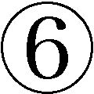五千万円未満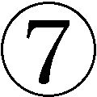五千万円以上、とあって、バカこけといいたくなる。その他、一カ月の小遣いの額、貯蓄額などがあるのだが、金額の分類は推して知るべし。ちなみに一カ月の小遣いの最低は五万円未満、最高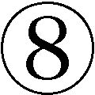は八十万円以上、貯蓄額のは五百万円未満、が一億円以上。遺憾ながら拙者、いずれも予選敗退である。いやエントリーもさせてもらえない。
以上の六誌のほかにも、うれしいことに『男の隠れ家』（あいであ・らいふ、月刊）という雑誌を見つけた。特集は「港町の酒場」である。「隠れ家」という言葉を見ると、どうしてもこういうふうに言いたくなる欲求を抑えがたい。一生隠れてろ。この言葉がいつまでもなくならないのはなぜか。そんなに魅力のある言葉か。それにしても、いったい、だれからなんのためにだれと隠れるのか。世間にはまだ知られていない、この自分だけが知っているという特権性をもった雰囲気がいいのだろうが、いまやだれもが知ってる「隠れ家」。ほかにも『一個人』（ＫＫベストセラーズ）や『東京カレンダー』（アクセス・パブリッシング）などがあるがもう大同小異、ふれる意味はない。
どの雑誌からも臭ってくるのは、「おとなの遊び」とか「おとなの恋」、あるいは「おとなの時間（空間）」とか「おとなのオシャレ」「おとなの人生」というような、いかにもビンボーたらしい雰囲気である。小金につけこまれ、未練につけこまれ、「自分の人生」にもつけこまれている。心身ともに「豊かな生活」が目指されているのだろうが、何事にもつけこまれるのが嫌いなわたしにはまったくお呼びではない代物である。まあ、呼ばれてもいないわけだが。各誌には編集会議で一生懸命考えぬいたそれぞれの「コンセプト」なるものがあり、他誌との「差別化」の意識も当然あるはずである。しかし『プラチナ サライ』を除いて、はっきりいってわからん。
一点の「翳り」もない豊かさとゴージャスさが、わたしにはかえってビンボーくさく見えるのだが、その哀愁を帯びたわたしも、結局は「ダンディ」な小金持ちおやじたちから、おまえはただのビンボーじゃねえかと見下されて一巻の終わりか。
「中年」とは自分自身のことである
こういう現象は中年のなにを意味しているのか。おそらく、人生の後半に向けての「充実」であろう。三十年も四十年も馬車馬のように働いてきた自分へのご褒美である。そのためには、もっと金を使え、もっと時間を使え、とそのための場所やモノを紹介するのが、中年おやじ雑誌の要請するところである。もっと金のある中高年は、もっと金を使え。そうすれば、もっとグレードの高い豪華な食事、宿、旅、モノが保証される、と。そしてそれこそが中高年の「春」なのだ、と。しかし、いったいどこの、だれの話か。おれ様のことだよ、という中年男がそこら中で手を挙げるのだろうか。
見るべきものは見てきたはずなのに、自分に自信がない。無理もないというべきか。なにしろ人生ではじめて「中年」になったのである。どうしたらいいのか、どう振舞えばいいのかがわからない。「おやじ雑誌」はそんな中年のための遊び方ガイドであり、クオリティライフへのマニュアルなのである。あこがれる中年と、それを現実とする中年のための。だが、そんなことで中高年の「秋」は収まるのか。
「まえがき」で、中年とは五十歳代のことである、と書いた。だがこうして見てくると、「中年」という括りも、「五十歳代」という設定も吹っ飛んでしまう気がしてくる。わたしが「おやじ」でも「おじさま」でも「ニューおやじ」でもないと否定したがるのは、わたし自身が、おれはそんな「おやじ」じゃないと思いたがってる醜さのゆえなのか。中年男雑誌を腐したくなるのはエントリーもさせてもらえないゆえのたんなる僻みか。わたしは「人間の年齢」から見ればまぎれもない中年である。そのことをわたしはまったく認める。そう見られることにもなんの不服もない。若く見られたいなどという意識はない（実際には若く見えるのだが、うれしくはない）。
だが、「自分の年齢」でいうと、じつは中年であることをほとんど意識していないのである。ほとんどの中年がそうではないのか。容貌や体力の衰えから「ああもう若くはないな」と思うことはある。誕生日がやってくると「五十五になったのか、じじいだな」と思うことはある。そのように「人間の年齢」をいやでも自覚せざるをえないことは数々ある。そのとき、来し方、行く末を考えないではない。だがそれまでだ。「人間の年齢」なんかほんとは知ったことではない。「自分の年齢」においては十代やら二十代やら三十代やらが重層しているのだ。けれどそこに安住できるほど単純でもない。「人間の年齢」としての中年に納得する自分と、「自分の年齢」としてはそれに納得しない自分がいるのだ。
他人のほうが、自分で気づかない自分のことをよく知っているものだ、といわれるが、やはり自分のことは自分が一番知っている、というべきである。自分の感覚、感情、考え方は、自分にとっての第一次資料である。それが言葉やしぐさや身振りや表情によって、外部（他人）に表出される。だが、それらはすでにそれらのフィルターを通過することによって変形した第二次資料となっている。真実と事実はここでわかれる。
いや、それらの言葉や表情やしぐさに、いくら隠そうとしても隠しきれないおまえの本当の姿が現れるものだ、ということはもちろんありうる。「顔に出る」「態度に出る」というやつだ。しかし、それはその人間のほんの一部でしかない。ただし、どんなに第一次資料から変形を受けていても、外部に現れた自分の姿によって、他人から判断されることはやむをえないことである。たしかに事実は真実めかす。そして真実はときに事実をまとう。けれどそのことを知っているのはやはり当人だけなのである。
わたしは、わたしという「中年男」しか知らない。他の中年男のことを知らない。知らないが、頭の高いおやじ、成功して有頂天のおやじ、エロおやじ、封建おやじなんかにはなんの興味もない。きめつけるが、かれらは世のなかと金のことばかりを知って、自分を見なかった者たちである。逆に、わたしは自分を見すぎてしまった。世のなかを見たかどうかは怪しい。自分を見すぎて目がつぶれた。わたしほどわたしを甘やかし、わたしほどわたしを批判した者はいない。
いまこの日本には団塊の世代を中心におそるべき数の中年がいる。世間の形式主義（男意識、女子供意識、先輩意識）に染まった「事実おやじ」にわたしはなんの同情もない。自分を見、自分の関係を見、懸命に生きているふつうの、風采の上がらない中年男にだけ共感がある。「事実おやじ」たちにもかれらの「中年」としての真実があるのだろうか。女のケツをさわり、卑猥な言葉を投げかけては喜び、上役に媚び、部下を見下しながら、そのじつ家族の幸福を願い、不運な人たちには心の底から同情し、身を粉にして一心不乱に働いたというような真実はあるのか。あるのだろう、とおもう。だが、そんな双頭獣（双面神ではない）みたいな真実なら犬にくれてやるがいい。家族が泣く。ご先祖様もきっと泣いている。
わたしにはわたしというひとりの中年男の真実があるはずである。狭量で幼稚で傲慢という「自分の事実」を隠すつもりはない。それでも、半分だけは自分を見捨てて、ひとつの信頼がかかった関係には、可能なかぎり正面から対応しようとした（できているかどうかについて断言できない）という真実はあるであろう。臆面もなく自分で自分の真実を述べようとするバカもまたとはいまいが、しかし、これだけがこれまでのわたしを支えてきたにちがいなかった。
君子ヅラをするつもりは毛頭ないのである（できもしないが）。ただ、「中年」のなかにいながら「中年」の外へ飛び出したいとおもう。中年の外の中年になりたい。中年の一般的な真実は「翳り」のなかにあるという凡庸なことしかいえない。それ以外の個々の真実をわたしは知らないのだ。けれども、最も畏怖すべきひとは、真実があるのかもないのかも明かすことなく、黙々と働くひとである。愛するひとを支えて黙々と生きるひとである。わたしにとって「中年」とは、わたし自身以外ではない。けれどもわたしみたいな木っ端は、そのようなひとに到底匹敵しえない。足元にも及ばない。そう断言できるほどには、自分を見てきた。これはいささかも傲慢ではない。
曽野綾子『中年以後』
曽野綾子は『中年以後』という本の中で、中年期についてつぎのようにいっている。引用した文章についてはいくつかの異論を表明することになるけれど、この本は「人間としての中年」を概括したいい本である。生意気な言い方をすると、感心した。惜しむらくは、理念としての真実ばかりが書かれていることだ。
私たちは誰もが、子供の時や青春時代の不幸や歪みの影響を受け、傷ついて育つのだが、その毒を自ら晒し、棄てて、本来の自分に還ることができるのが中年以後、ということなのである。その点で、中年以後というのは、出自の部分で受けた毒気を自ら抜くことに成功したすばらしい時期だと言える。
（曽野綾子『中年以後』知恵の森文庫）
別段、「すばらしい時期」だとは思わないが、言っていることはそのとおりだと思う。「本来の自分に還ることができる」とは、先ほどの言葉でいうと、「人間の人生」と和解し、「自分の人生」を芯にすえて生きていくことが可能になる、ということであろう。ただし多分に「かくあれかし」という理想的な理念が入っていることは否めない。そのことに成功すれば「中年以後」はすばらしい時期になりうる、と読むべきであって、だれもがそういう人間になるなどとは言っていないことに注意。
醜いこと、惨めなこと、にも手応えのある人生を見出せるのが中年だ。女も男も、その人を評価するとすれば、外見ではなく、どこかで輝いている魂、或いは存在感そのものだということを、無理なく認められるのが中年だ。魂というものは、例外を除いて、中年になって初めて成熟する面がある。
（同書）
病気や体力の衰えが望ましいものであるわけはない。しかし突然病気に襲われて、自分の前に時には死に繋がるような壁が現れた時、多くの人は初めて肉体の消滅への道と引換えに魂の完成に向かうのである。
体力の線が下降し、精神の線は上昇する。その線はどこかでぶつかる。その交差点を見るのが、中年以後である。
（同書）
だが、たとえばこういう男がいる。新潟の小学校で、柔道三段の五十代の教師が六年生の男子とプロレスの話題になり、技をかけた。痛がって泣き出した子どもがホウキで教師の肩を思い切り叩いたところ、その教師はカッとなって子どもを投げとばし顔を踏みつけた（『毎日新聞』二〇〇三・一・十八）。とりあえずバカな教師ではあろう。だが状況次第では、わたしもその子にビンタくらいはしたかもしれない、という気がする。教師にならなくてよかった。
またこんな男もいる。こっちは正真正銘の男ドアホウである。交際していた人妻（四十六歳）に別れ話をもちだされた五十一歳の独身男が、彼女の死んだ子どもの墓を暴いて遺骨を盗み出し、返してもらいたければおれとまた付き合えと脅迫した、というのである（『スポニチ』からの引用！ 二〇〇三・一・二十）。もう無茶苦茶。やることが常軌を逸していて、つじつまがあってるのだか、あっていないのだか。
さらには、二〇〇三年一月三日の新聞で報じられた老年による三件の殺人事件（『毎日新聞』）を見よ。七十二歳の夫が六十五歳の妻を口論の末殺害し、死体処理を便利屋に頼んだ。六十九歳の男が同じ年の内妻を絞殺。そして七十一歳の男が四十一歳の娘を憎しみから殺して家に放火。正月もへちまもないのである。
中年どころか、「魂」がとっくの昔に完成して、今や生き仏のようになっていてもおかしくはない老年の事件である。たぶんこれらの事件はほんの氷山の一角であろう。「精神の線は上昇する」という無根拠な断定がまちがいのもとである。もっとも、一般的にいえば、それを裏切る事実が山のようにあったとしても、それでも精神が見事になりうるのなら、それはやはり「中年以後」だと考えるのは一応肯定してもいい。がその逆に、歳をとればとるほど「人間の年齢」と「自分の年齢」のギャップがますます広がるということもありうる。
「人間の道徳」だけで生きてきた者には精神を高める必要がない。「道徳」とは世間によって決められた形式主義のことだから、自分の利益を捨てる必要がないのである。「自分」と「道徳」が対立するときは、「道徳」を棄てればいいだけの話だからである。「自分の倫理」を育ててこなかった者には「精神」もへったくれもないのである。
曽野はさらにこのようにいっている。「最近の人は昔の人が考えられないくらい、お洒落になった」。しかし。
外見のお洒落が完成するに連れて、魂のお洒落の方は、ますます醜くなって行く。
中年以後、外見は衰えるばかりである。三段腹、二重顎、猫背、白髪、禿げ、たるみ、その他あらゆることが決していい方には行かない。その時に、不思議な輝きを増すのが、徳だけなのである。
徳は広範で、私たちの見ている大空のようなものである。そこにはあらゆる人間の、人間だけが持つ不思議な輝きが、光を放っている。光は人生の黄昏から夜の近い頃になって初めて輝き出して当然だろう。
（同書）
中年を一括して論ずることの困難がここにある。「精神の成熟」を説くステレオタイプにおちいるのだ。なぜ精神や魂や人格や品格や成熟を持ちださなければならないかというと、せめて精神くらい立派にならなければ「中年」なんか醜いだけではないかという、ミもフタもないが、だれもが肯定せざるをえない事実があるからである。見た目が醜いのに（言い過ぎだが）、たたずまいまで醜くなるのでは、生きてる資格がないではないか。それはそのとおりである。だが、ワインじゃあるまいし、じっと何年も坐っていればどの精神も自然に成熟していくわけではない。むつかしい年頃なのだ、中年とは。
そこでこの章の結論。「中年」一般などは存在しない。いや、「中年」は世間の中に、またマスコミの中にしか存在しない。一人ひとりの「自分」にとって存在しているのは、あなたという中年であり、わたしという中年である。その一人ひとりは「自分の年齢」で自由に、プラチナはプラチナの、シルバーはシルバーの、そしてコパーはコパーの「自分の人生」を生きていけばいいのではないか（生活はプラチナでも、顔と根性はメッキというおやじもいるからね）。できることなら、それが一番いい。できなくても、それしかない。
「おやじ」という呼称で十把一絡げか
本論に入るまえに、「中年男」をなんと呼ぶかについて一言。というよりあえて贅言。
わたしは、父親を呼ぶ場合の「親父」という呼び方を例外として、「おやじ」という一般的呼称があまり好きではない。言うほうも、言われるほうも軽薄である。「中年」という呼称がもっともオーソドックスで、自称他称、この無機的な呼び名でなんの不服もないとおもっている。ところがこの呼称は、使い古されてしおたれている男というマイナスイメージしか喚起せず、会話にも不適切ということからか、もっと積極的で生き生きした呼称はないものかと、「実年」だの「熟年」だのという呼称が提唱されたが、それらは民営化した国電の「Ｅ電」とおなじように、ウンともスンともいわずにあっさり消滅した。
で、いつの間にか行き着いたところがかな表記の「おやじ」（あるいは「オヤジ」）で、いまや日本全国（調べたわけではないが）「おやじ」一点張りの感がある（流布しすぎて、すでに陳腐化している）。時と場合によっては、一分の親愛がこめられることもないではないが、ほとんどの場合は嘲笑と軽侮に満ちた蔑称である。時代に媚びて、これを自称する「おやじ」も多い。
わたしも毒されて、自分が「おやじ」のくせに、他の中年をつい「あのおやじ」とか「これがまたおやじなんだ」とかいい、言ったあとから自分に腹が立つ。中年を十把一絡げにするこの「おやじ」という呼称は、他の世代をけなしあうことによってストレスを発散するというこの国の、世代間憎悪社会のうすら寒い雰囲気に合っているということか（それとも実際にクソガキとクソオヤジで充満しているという実態にふさわしいか）。それとも「ガキ」といわれ続けてきた若い世代の復讐か。おとな全般の地位低下の表れか。
だからといって、ほかの適当な呼称が見つからない。「おじさん」では鼻の下にチョビ髭を蓄えていそうだし（そんなやついないか）、「おじん」とか「おやっさん」や「おっさん」ではまだ一部の好事家に多用されるだけでマイナーだし、さらに「ミドル」ってのはとんでもないし（とくに「ナイスミドル」。アホか）、「熟年」ではどこのどいつのなにが熟してるのだという感じだし、「おとーさん」だと、もうひとつ一般性に欠けるきらいがあるし、「おいちゃん」では大分県（宮崎県も？）でしか通用しないし、結局、「おやじ」しかないということになるのか（「おやじ」が固有名詞となっている場合がある。有名なのは、昔、田中角栄、今、北島三郎。擬似家族的な雰囲気が形成されている）。
加賀乙彦の『夕映えの人』という小説に、この呼称に関して主人公が云々する場面がある。精神病院の院長をしている六十歳の初老男が、「孫を持つ年齢になったのだと知ると、おれも老人になったと自覚させられるな」とシミジミすると、妻は、「人生八十歳時代に、六十代で老人という形容はそぐわない」とやんわり否定する。すると夫は「老年期がこんなに伸びたのは近年ここ、二、三十年の出来事でね、人類は初めて遭遇した長い晩年を的確に言い表す言葉をまだ開発していないのだ」と、むつかしいが正しいことを言いはじめ、熟年という言葉ができたのは一九七〇年代だが、いまだに「意味不安定な用語」だし、一九八五年に厚生省が実年という言葉をつくったが不発に終った、という、どこで覚えたのだといいたくなるような薀蓄をひとくさりするのである。さらに調子に乗ってかれは、この社会はその後、しょうがないから「時雨族」「夕暮れ族」「濡れ落ち葉族」などという言葉をそのつど発明しては使っている、というのだが、これは意味がちがうだろう。で、やおら表題の「夕映えの人」の意味が明かされるのである。
「そういう言葉が流行する基盤には若さが人生の盛りであって年寄りは落ち目に過ぎないという、若者中心の価値観がある。しかし、斜陽に照り映える物の姿は、立体的でもっとも美しく輝かしいんだ。調べてみると夕暮れ前の黄ばんだ日光に照らされた、夕映えの美を日本の古典はちゃんと表現している。色うるわしく、はなやかに、きよげなりとね。夕映え、いとめでたしともいう」
（加賀乙彦『夕映えの人』小学館）
たしかに「落ち目」は「落ち目」であろう。「若者中心の価値観」もそのとおりだ。それはしかたない、ことではない。両方の価値を認めればいいのに、一方を認めると他方をかならず否定する。この国には「落ち目」を叩いて快感を覚える人間が多すぎるのではないか。「お年寄りを大切にしよう」などといいはじめたら終わりなのである。
現在五十八歳の歌手・舟木一夫がこのように言っている。
私、サラリーマンをてっぺんから尊敬してるんですよ。なぜって、朝、すし詰めの電車からはき出され、隣のホームまで走って、そこで次の電車が来るまでの間にかけソバをかきこんでいく。すごい。でも、もういいじゃないですか。勝ち負けなんて通りすぎちゃった。これから、どういうふうに自分らしくぶらぶら歩いて行けるかって考えてほしい。私たちの世代は不器用だけど。この国は、戦い終わった戦士に思いやりがなさすぎるね。刀折れ、矢尽きたわが世代の男たちにもう少し、優しくていいんじゃないのかな。
（『毎日新聞』二〇〇二・十二・十八）
泣かせてくれる。中年の真実は中年にしかわからない。だが、いまや中年はおもしろおかしく「産業廃棄物」などと揶揄されている。ただし、「優しく」ないのは中年世代にたいしてだけではない。互いの世代にたいしても同様である。
さて、件の主人公は妻につづけてこのようにいう。
「苦労を重ねて年齢を踏み、いよいよ薄暗い死が迫る年齢になって、きらびやかに生きる、そういう復権の生き方が求められる時代になった。とくに年寄りが増えてくるにつれて、切実になった。とにかく、ぼくはわびしい六十代は送りたくない。夕映えの人でありたいよ」
（前掲『夕映えの人』）
たしかに、「斜陽に照り映える物の姿は、立体的でもっとも美しく輝かしい」といえるかもしれない。が、それは自然だからだ。人間はそうはいかないのではないか。夕焼け時の古寺などは美しいが、老斑が浮き、皺がより、動きはぎこちなく、髪は抜け、体は弛むか干涸び、腰の落ちた姿勢は、非立体的で、やっぱりそうは言えないのではないか。見た目重視だが。「わびしい六十代は送りたくない。夕映えの人でありたい」という気持ちはわかる。しかし、「夕映えの人」。かなり無理はないか。
ひとの口は塞ぐことができないから、他人から「おやじ」だろうとなんと呼ばれようとかまわない。だが「おやじ」と呼ばわる若者は、おやじを馬鹿にしたつもりでその実、人間の程度としてその「おやじ」と同列にあり、「ガキ」と呼ばわるおやじもまた、その「ガキ」と同列にある。なんだか知らないが、どっちも根性がしみったれているのだ。同類同士、共倒れをしていくのが一番よろしい。「おやじ」は「おやじ」のなかにありながら、意識のありかたとして、「おやじ」の外にひとりで立つのがよろしい。
失業、定年、仕事をどう考えるか――「辞めてはいけない」「辞めてよかった」
さて、中年や老人は昔からいた。けれども中高年「問題」が発生したのは、おおざっぱに言えば、戦後、産業構造が変化したことと、人間の寿命が延びたことによっている。第一次産業（農業、漁業）従事者や自営業者は年を取ってからでも働くことは可能である。つまり定年がない。しかし戦後、第一次産業が衰退し、かわりに第二次産業と第三次産業が圧倒的に増えた。ようするに会社員が増えたのである。その会社員が六十歳の定年によって、否応なく失職する。意志に反して辞めなくてはならない。また意志に反してそのあともなお働きつづけなければならないその「定年後」の人生が問題となるのだ。
それにとして、バブル破綻以後に顕著な現象だが、定年前での失業が社会問題化している。解雇は中年に限らないが、中年が圧倒的に多いことはいうまでもない。企業倒産もある。中年は再雇用もままならない。定年中年と失業中年とでは、深刻度がまったくちがうのだ。五十歳から六十歳までの十年間を無事に乗りきれるかどうか、これが定年前の焦眉の問題である。
解雇を通告されたらどうするのか。失業したらどうするのか。その前に見切りをつけてこちらから辞めるか。だが、一人ひとりの状況がちがう。立場もちがう。一律的な答えはない。ただはっきりしていることがひとつだけある。だれも頼りにならないということだ。政府なんか一番頼りにならない。セーフティネットなどいつ張られるのか。万一、張られたとしてもわたしやあなたの下に張られる可能性などほとんど望み薄である。もし張られても、網の目が大きすぎてその間からもれ落ちるに決まっている。どんなに非力であろうと、頼れるのは自分の力しかないのである。力がなければ万事休すだ。あっても窮すが。
「会社を辞めてはいけない！ リストラ座敷牢５００日闘争記」という記事がある（『週刊ポスト』二〇〇二・十一・八号）。コンピュータ会社の現役課長代理（三十八歳。中年ではないが参考にはなる）が、一九九九年六月のある日、突然部長から「君のやってきた仕事は会社にとってマイナスなことばかり」「君にしてもらう仕事はこの会社にはない」といわれて退職を迫られた。けっして「辞めろ」とはいわない。茫然自失しているときに目を覚ましてくれたのが、妻の「辞める必要はない」の一言（強い！）。労働条件相談センターに相談に行き、週明けに会社に「辞めない宣言」をし、会社に居座り続ける。
その日から一年後、退職か減給かを迫られたがいずれも拒否すると、人事部に「人員調整室」が設置され、ほかの三人とともに押し込められた。八畳ほどの広さの部屋に机とパソコンと電話だけ。「毎日会社に行くのがイヤになりましたが、会社から揚げ足を取られないためにも、無断欠勤しないことはもちろん、定時出勤、定時退社を励行しました」。
その三カ月後、急に、合併した新会社の開発部に課長代理のまま異動を命じられた。かれだけが最後まで辞めなかった。「会社での人間関係は元通りとはいきませんし、今でも仕事が与えられないこともありますが、私はここに居続けるつもり」という。この経験から導きだされた「リストラに対抗するための五か条」が披瀝されている。リストラに「同意しない意志」を示す、記録を残す、社外に相談できるネットワークを作る、会社の「就業規則」を読み込む、法律を知る、である。
だが、「辞めるな」の一方には当然「辞めてよかった」の事例がある。辞めるべきか辞めざるべきかの答えが一律的にいかない所以である。江波戸哲夫『辞めてよかった！』には、このように書かれている。著者は三十六歳のときに、十二年間勤めていた出版社を辞めて、作家になった（現在は五十六歳）。翌年の原稿料収入が二百九十万円だったとあるが、出版業界になんのコネもない会社員が作家（ライターでもいい）を目指したとするなら、これだけの金額でも稼ぐのは生半可ではない。その後著者は、いきなり依頼された書下ろしの小説が相当売れて「経済的にはやっと一息つけた」。これをきっかけに十カ月の新聞連載もきまり「経済的にはかなり長いこと保証された」。江波戸は「自分でもツキに恵まれていたと思う」と書き、「私の周りの書き手の大半は、この程度のツキには何度も恵まれている」といっている。
物書きに限らず、たぶん人はその人生で、「幸運」にも「不運」にも、何度となく出会うのであろう。「幸運」をうまくつかまえ、「不運」とはなるべく早く縁を切る、これが処世の術というものだ。それほど名人芸のような術を使わなくても、真っ正面からこの「幸運」「不運」と格闘するつもりがあれば、自然と「幸運」との付き合いが増えてくると私や周囲の知人たちの実例は教えている。
（江波戸哲夫『辞めてよかった！』日経ビジネス人文庫）
かれのいうように、この本には転職して成功した人の実例が紹介されている。「辞めるな」に関する本を読めば、辞めたあとに生活に苦しむひとの実例ばかりが書かれ、「辞めてよかった」という本にはその成功例ばかりが書かれている。当たり前のことである。病院に行けば病人ばかりであり、刑務所に行けば犯罪者ばかりなのである。
右の引用文にある「処世術」は、だれでもわかるように、「術」でもなんでもない。「幸運」が増えるとの託宣も信用できるものではない。ひとりの成功した脱サラ・ラーメン店店主の背後には、百人の失敗者がいる（かぞえたわけではない）。「辞めるな」とも「辞めてよかった」ともいえない。どっちをとるにしろ、自分で判断し、その結果責任はすべて負う、という覚悟だけが必要なことだ。
江波戸もつまるところこのように言っている。わかってたのね。
もっとも現実的な態度とは、どんな困難が自分の前に立ちはだかっても、うろたえたり怯えたりしないで、とにかくそれを正面から受け止めるという覚悟を、予め腹の中に作っておくということだろう。
（同書）
三十年間ひとつの会社に勤め、いまだに失職のキツさを知らないわたしに、いうべきことはない。就職できなかった二年ほどの間、多少心が荒んだという程度のことである。ただ三十年勤めてめでたく中年となった今、ひとつだけ言えることがあるようにおもう。会社なんか所詮会社だ、ということである。心身をすりへらして命を懸ける場所では到底ないということだ。
むろん、仕事をする以上、責任をもって当たらなければならない。それだけが、仕事という無意味を「生きがい」や「やりがい」という意味にかえる唯一の方法だからである。だが最終的には会社なんかに責任をもつ必要はなく、もてるものでもない。すべてを犠牲にして忠誠を尽くすような対象ではまったくない。たしかに「プロジェクトＸ」などを見ると、わたしなんかは手もなく感動するが、それは、かれらが会社のために死力を尽くしているから感動するのではない。仕事に全力を挙げている姿に感動するのである（「会社」と「仕事」とは本質的にちがう）。
たかだか売上、業績、競争、存続、成長、出世のために目を吊り上げ、血眼になり、怒鳴りちらし、叱咤し、自他を鞭打ち、客を金づると見なし、騙し、脅しあげるなどなど、ほんとうは狂気の沙汰である。組織は所詮組織である。組織を相対化し、もし可能なら仕事それ自体をも相対化する意識はもっておきたい。どんな大事業に携わっていようとも、である。
そんなことはとっくにわかってる、と言われるかもしれない。そう、わかっていながら、できないのである。生活があるからだ。生きていかなければならないからだ。ならば、せめて組織のなかにありながら、組織の外に自分を置く意識だけは必要ではなかろうか。滅私奉公などは心のなかから蹴りだしておくべきである。会社に「見捨てられた」「ゴミのように扱われた」など、男のいう言葉ではない。
ついでだが、仕事について内田樹がこのようにいっている。
就職希望の学生に私がいつも言うことがある。それは企業の知名度や資本金と「職場が楽しい」ことの間には何の関係もない、ということである。
責任感があって、勤務考課が公正で、仕事のできる上司がいて、愉快な仲間がいれば、どんな単純作業であっても仕事は楽しい。
（内田樹『「おじさん」的思考』晶文社）
内田樹は一九五〇年生まれの五十三歳。前半はまったくそのとおりである。しかし後段は甘すぎないか。そんな会社日本にあるのか（あるとすればせいぜい十人規模だろう）。しかも、これにつづく一言、「『毎日会社にゆくのが楽しみ』であるような仕事を選ぶと楽しいよ。就職活動をしている人たちに言いたいのは、それだけである」とははたしてアドヴァイスになっているのか。就職するまえに、そんな職場や仕事であることがわかっていれば、だれも苦労はしない。
苦受するしかない中年離婚
二十年以上連れ添った夫婦が離婚する、いわゆる「熟年離婚」が増えている、とは今さら書くのも陳腐であろう。ここ五十年間で三・五％から一六・九％と五倍になっている。おおくは定年離婚であり、妻のほうからの離婚申し立てが圧倒的である。亭主が定年になった途端、女房が「待ってました」とばかりに退職金の半分をそのまま手に入れて、亭主に離婚通達をする、というものである。積年の恨みつらみをここで晴らすらしいのである。そのほとんどが「会社人間」であった亭主たちは寝耳に水で、鳩が豆鉄砲を喰らったようにポカンとする。そのあとで母親を失った子どものようにオロオロする。
だから、そのようにならないように、常日頃から、妻とのコミュニケーションは絶やすな、思いやれ、「メンテナンス」をしておけ、夫婦共通の生きがいをもて、などの助言が知識人（あんたたちは何者だ）からあたえられる。もしあなたが、妻に暴力をふるう男であったり、「だれに食わせてもらってるんだ！」というようなことを口走るバカ男だったり、「女は黙ってろ！」とか「男の仕事に口出すな！」などと、口の利き方から態度まで、基本的に女性蔑視の男だったのなら、自業自得である。潔く「永年申し訳なかった」と謝り（そんなことができるくらいなら、とっくの昔にしているだろうが）、民間アパート六畳一間にでも引っ越して一人暮らしをするがいい。
身に覚えのない中年男はどうするか。「家族サービス」（情けない言葉だが）にも努めた。よく話しもした。妻を労った。まじめ一筋で仕事をしてきた。こんな男にも離婚の危機はあるのか。もちろん。「人間の人生」にはなんでもありうる。あなたにはなんの不満もないけど、不満のないことが不満なの、と言いだすバカ女がいないともかぎらない。これからの後半生は、自分の好きなようにひとりで思い切り生きたいの、と宣告する遅れてきた自立女がいないともかぎらない（彼女を非難していない）。
ひきとめるんじゃない。好きなようにさせてやりたまえ（おれは何者だ）。それも彼女の人生であり、あなたの人生だ。明らかな非が男にないかぎり、離婚をいい出す女がつねに正しく、いわれる男がつねに悪いのでもない。甘受することはむつかしいだろう。苦受するしかない。偕老同穴、死ぬまで二人一緒という夫婦は幸福であろう。親孝行な子どもを持った夫婦は幸福であろう。子どもなんか生まなければよかった、と嘆く夫婦は不幸であろう。だが、それが「人間の人生」である。
熟年離婚は、中年になっても、この先二十年も三十年も生きることができるという長寿と関係がある。六十歳でも元気だという健康と関係がある。思い切り人生を楽しめという時代の雰囲気と関係がある。はじめて「自分」を自分に取り戻せる年齢に達したということと関係がある。世のなかに、年ばっかり食っていつまでもガキのままという中年男が増えたということとも関係がある。裕福になって社会の恩恵が夫を通じて自分のところにまで波及するようになったということと関係がある。離婚が白眼視されなくなったという時代風潮とも関係がある。唯一関係がないのが、離婚される亭主というわけである。
ある調査（『朝日新聞』二〇〇三・一・八）によると、老後は子どもと同居したほうがいいと思わないが五〇％、家族のきずなは弱まっていると思うが四六％（強くなっている一八％）、結婚相手とうまくいかなかったら離婚していいと思うが六三％となっている。
家族神聖視観、家族至高価値観は基本的に崩壊している。いまや「自分の価値」は「家族の価値」を凌駕した。ただしそのことは「家族」という枠組の崩壊を意味してはいない。「枠」はそう簡単には壊れない。「枠」の中はかなり気楽に入れ替わるだろうが、それもつねに「自分」という価値に従属するかぎりにおいてである。
いずれにせよ、おれだけは大丈夫だ、と高を括らないほうがいいとおもう。この人生、なにが起きても不思議ではない。高を括るよりは、腹を括っておいたほうがいい。いや、高を括るのはしかたない。が、そのあらかじめの代償として、同時に腹も括っておくべきだとおもう。
日本の会社は人間を「うつ」にする
暗い、というかキツい傾向がつづく。中高年の自殺が多い。統計に頼るのはあまり好きではないのだが、参考までに引いておく。二〇〇一年度の全国自殺者は三万一千四十二人である（男女比は七一％が男、女は二九％）。四年連続で三万人を超えた。
そのなかで六十歳以上の自殺者は一万人強で全体の三五％を占めている。五十歳代（八千人弱）以上だと約一万八千人で六〇％にもなる（四十歳代は一五％、三十歳代一一％）。繰り返すが全自殺者の六割が五十歳以上である。動機は一番が健康問題（約四九％）で全体の半分を占める。ついで経済・生活問題（約二二％）、以下家庭問題、勤務問題、男女問題、学校問題となっている（『毎日新聞』二〇〇二・七・二十五）。
気楽に自殺者「三万人」と書いている。それをネタにする。統計の酷さと気楽さだ。申し訳ないことである。だが不謹慎かもしれないが、一から数えてみればいい。「三万」という数字がどんな数字か。千まで数えるのさえ容易ではないことがすぐわかる。深刻ぶることもできなければ、教訓を引き出すこともない。自殺の動機に、健康問題、経済・生活問題、家庭問題、勤務問題、男女問題、学校問題があるのはわかる。けれど、わかりにくいのは、それがなぜ自殺にいたるのかということだ。
あらゆる「問題」は「死」の前にかならず「心」を通過している。人間の行動はすべて「心」を通過する。どういうことか。人間の行動のすべての発端は「心」である。「心」が動く。なにかを欲しいと思い、なにかをしたいと思う。そのモノが手に入る。「心」を通過して満足となる。逆に、手に入らない。「心」を通過して失望や怒りや嫉妬が生じる。この程度ならまだ大丈夫である。けれど、自力では手におえない「問題」に追いつめられるとどうなるか。「心」を通過して「死」がでてくる。「心」のなかでどんな変換が行われているのかはわからないが、「心」が「死のう」「死にたい」「死しかない」「死んだほうがいい」「死んでもいい」などと決める。「問題」自体を「無」にする。「苦」も「わずらわしさ」も「思考」も一挙に「無」にする。「心」が決めなければ、「死」はない。
「問題」で「心」が機能しなくなる（損傷する）ことがある。外界からさまざまな刺激が入ってくる。だが「心」からでてくるものは「......」だけだ。「心」を通過することなく、「心」のなかで消失し、あるいは滞留するのである。自分の「心」なのにコントロールできず、動かそうとしても梃子でも動かない。かと思えば、「心」がもはやなんの発端にもならない。気力がわかない。「心」になにも入ってこなくなるのだ。以上は、わたしの恣意的なイメージにすぎない。一片の科学性ももってはいない。この感覚が自殺のなにを説明するとも思ってはいないが、しかしわたしには多少の納得がある。
中年には、自殺につながりかねないうつ病の問題がある。一九五三年生まれ（今年五十歳）の精神科医・高橋祥友は、うつ病になりやすい性格のひとは、仕事面では「生真面目、几帳面、仕事熱心、強い責任感」、休日出勤も厭わない、他人の仕事まで引き受ける、いい加減にできないひと、また他者との関係では「律儀、誠実、嘘をつかない、約束を守る、権威を重視する」というひとに多いといっている。一言でいうと、自分のためというより、「他者に対する献身、他者のために存在することに意義を見出す」ひとである。そして、物事が順調にいっている場合は問題ないのだが、自分の限界を超えたり、自分の器を超えて遂行できなくなったり、自分の要求水準に達することができなくなると、発病する。
うつ病性格のひとの一番の問題点は、「あるがままの自分が受け入れられない」ことである。具体的には、「極端な自己評価の低さ」、「対他過敏性」すなわち「自分が自分自身をどうとらえているかという点よりも、他人からどう評価されているかという点に非常に過敏」、「完全主義的傾向」、「曖昧さに耐える能力」の欠如。高橋氏はこれらの特徴が「中年の人々に認められる共通項のようにして浮かび上がってくる」と指摘する（『仕事一途人間の「中年こころ病」』講談社＋α新書）。
右に見た「うつ病」的資質が中年期に共通するというのは、その破綻が中年期に噴出する、ということである。上昇志向をもたず、生涯現場主義を貫こうと考えている人間にとくに生じやすい。責任も、仕事量も、果てがない。若いときには、地位もなく、がむしゃらに働くだけである。だが、加齢と責任感の増大にともなって、そのことのすべてが無意味に思われてくる。相対化を超えて、無意味感にすべてが覆われてしまう。これが「世のなかを見てしまった」中年を襲う虚無感である。
責任を果たそうと働いても他人は動かない。成績はあがらない。にもかかわらず周囲には危機感がない。自己保身ばかり考えている。正確な評価がなされない。公平な対価も払われない。組織のトップは鼻ちょうちんである。仕事量の不公平の上にあぐらをかいている者がいる。昇給停止・減給がある。それだけではない。いつ出向・馘首があるかもしれない。
ここで、「バカらしくてしょうがねえ、やってられるか」と半分だけ開き直れる者なら、「うつ」にはならないかもしれない。けれど年休もとらず（とれず）、無遅刻無欠勤を支える滅私奉公精神は一朝一夕には変わらない。それを要求し押しつけてくる企業風土も変わらない。日本の企業には本質的に、まじめな会社人間を「うつ」にさせる構造があるのである（外国の会社に勤めた経験はないけど）。「うつ」にまでは至らなくても、「きまじめ」であればあるほどストレスはたまるのである。
「うつ」にならないようにするには、また「うつ」になったら、どうすればいいのか。高橋氏は、趣味などの「遊び心」をもつ、子どものような「やんちゃ」なことをする、そして「弱音を吐く」、悲しければ泣く、「腹が立ったら怒」っていいのではないか、といっている。けれど、それでも「うつ」がとれないようなら、精神科やカウンセリングにいくことを薦めている。軽度なものなら「比較的短期間に治るものが圧倒的に多い」ということである。
人間はひとりで生まれてくる。しかし家庭のなかに迎えられ、やがて友人をつくり、社会に出て知人も増え、結婚して家庭をもち、子どもの親となる。中年とは、その上昇線が下降線を辿ることである。身体も衰退し、人間関係においても、もとのひとりに戻っていくことである。すくなくともそのことを意識する年代である。
社会的にも家庭的にもよほど恵まれた「成功組」「勝ち組」「団欒組」でないかぎり（最近では「笑い組」という言葉もできたらしい。「喜び組」か）、ふつうの中年が相当なストレスに晒されていることはまちがいない。自分ひとりの力では背負いきれないものを背負っているからである。ひとには当然力の差がある。五十キロの負荷で音をあげる者もいれば、百キロを支える者もいる。だがかれとて三百キロは支えきれない。自分の力に応じて、放り出して当然ではないか。ただ、放り出せない構造があるから、耐えきれなくなった体と心が「あなた」を放り出すのだ。
理不尽も引き受けながら、矛盾し破綻すればいい
中島義道は、「人生から〈半分〉降りる」（言い換えると「〈半分〉隠遁する」）生き方を提唱している。どういうことか。世間的・社会的な常識や束縛やしきたりから、自分の好きな生き方に〈半分〉だけシフトしようという提言である。中島はその年齢を「五十歳前後」が適当だといっている。すなわち、「〈半隠遁〉は世間的にある程度のことをなしとげたあとに、あるいは自分の能力と仕事を見限ったときに、あるいは出世ゲームが心底虚しく感じられたときに実践するのがいちばんいい」。それは「ココロのためにもカラダのためにもいい」。
ところがコトはそう簡単ではない。
人生を〈半分〉降りること、すなわち〈半隠遁〉とは自己中心的でなければ実現しないことなのです。自分の生き方を最優先する。妻や子や親たりとも、二の次にする。そのように「冷酷」な人間でなければ実現できません。
（中島義道『人生を〈半分〉降りる』新潮ＯＨ！文庫）
ね。生半可な気持ちではとても実行できない。〈半分〉といいながら〈全部〉降りているようではないか。ところがけっしてそうではない。中島は「自分の人生」からは断固降りていないわけだから。だけど厳密にいうと、それは「自分の人生」ではない。「自分だけの人生」である。自分以外の人間はすべて排除されている。中島義道本人にとってだけ「ココロのためにもカラダのためにもいい」。筋金入りの「自分様」である。
わたしなら、人生を〈半分〉投げる、といいたいところだ。矛盾し破綻すればいいのだ。大枠では、まじめに仕事をする。力のかぎりを尽くす。他人を労る。いい夫であり父親である。常識を守る。責任をもつ。だが、もしそれが自力以上の過重なものとなって支えきれなくなったなら、ある時、ある一点で小さく破綻するのである。破綻しなければやっていけない。むしろ破綻をつくる。破綻とはルーティンとしての自分を破るということである。さぼる。放置する。逃げる。寝坊をする。嘘をつく。ヒゲなんか剃らない。服装に構わない。不機嫌な夫であり父親になる。世の常識や、理想的なモデルとしての人生や、無遅刻無欠勤や、自力以上の責任や、いい夫いい父親を放擲するのである。基本は堅持しながら、枝葉末節で破綻する。一瞬だけだよ。つまり数時間から一日、せいぜい一週間。
たしかに、中年の覚悟は必要である。できないことをする覚悟である（右と矛盾するが、してもいい）。しかしついに人間は自分一身にできることしかできないのである。とするなら、自分の力の結果以外で生じる出来事はすべて理不尽なことである。中年の覚悟は、その理不尽をすべて受け止めることである。社会のせいに、時代のせいにしない。他人のせいにもしない。責任を転嫁してもなんの解決にもならないからだ。自分で負うべき責任でないことは沢山ある。むろんそのような責任は当事者につき返すべきである。だがそれがさまざまな事情で可能でないとき、自分で引き受けざるを得ない。これは忍従ではない。敗北主義でもない。
だが、限界がある。どうしようもなく、ある。とするなら、うつになる前に、破綻し、矛盾するほかないではないか。サラリーマンでありながら、サラリーマンを放り出し、実際、一見したところでは勤め人か失職者か見分けのつかない、わけのわからぬ存在になるのである。まじめなのかふまじめなのか、勤勉なのか怠惰なのか。仕事ができるのかできないのか、誠実なのかいい加減なのかが判断のしようがない矛盾した存在（両義的な存在）になるのである。しんどい人生、しんどい仕事を、「どうでもいいじゃないか」と、一瞬、半分だけ放り投げてしまう。で、その破綻がなかったかのように、またぞろ完全に現状復帰する。
そうもいかないか。放り投げても放り返されるのがオチか。あるいは逆にあっさりと、会社から放り出されてしまうか。でも、最低限、そのような一瞬の破綻をおそれない意識と、自分と仕事と組織を相対化するための矛盾した存在（両義的な存在）への意識をもっているだけでも、かなり楽になると思うのだが。
では、バナナの叩き売りではないが、もう少し下げる。人生の〝目線を下げる〟のである。半生を賭けて追求してきた社会的価値――権力、地位、金、もてる、名声などから目線を下げる。自分から下げるもなにも、中年から老年にかけて、それらのものは向こうからすでに下がってくるのだが、あえて自分からも下げる。してやられる前に、こちらからしてやるのだ。下げた視線のさきになにがあるか。そんなことは知らない。静かな生活か、余裕ある自信か、心の平安か。ひとそれぞれだというほかはないが、すくなくともそれは、中年の人生にとって「間違いのないもの」であることだけはたしかである。
ところが目線を下げすぎると、あるいは下げ方の方向を誤ると次に紹介する事例のようになる。一瞬の破綻どころではない。全体が破綻している。なのに本人だけがおおまじめ、という悪しき無責任の一例である。くれぐれもご注意を。
おおまじめな無責任
『朝日新聞』の「ティーンズメール」という十代の人生相談コーナーに、十四歳男子中学生からつぎのような相談があった（二〇〇二・十二・三十一）。一学期に隣席の「友達」から「言葉の暴力」による執拗ないやがらせをされたが、「何も言い返せず、集中して授業もうけられなくなった」。二学期になっていやがらせはほとんどなくなったが、その後、友達と話すときには「気に入られよう」と緊張するようになった。「自分から会話に入っていきたくても怖くてできない」「相手が自分をどう思っているのか、もしかしたら自分を嫌っているのだろうかと」不安である。せめて「まともに前向きの姿勢で」友達と話すことができるようになりたいが、どうしたらいいのだろう。
よくある少年・少女期の問題である。回答者は「思春期相談室ティーンズポストスタッフ」という肩書きをもつ佐和野愛という女性である。頭にバンダナ（？）を巻き、めがねをかけた麻木久仁子似の四十代のひとに見える（写真が載っている）。このひとの助言がよくないのだ。彼女はまずこのようにいう。「これまでひとりぼっちで耐えてきたことは、あなたの責任でも恥でもないよ。あなたがたくさん傷ついたとしても、それであなたの価値が低くなるわけではないよ」。まったくただしい勇気づけである。ところがつぎの助言を見て、わたしは唖然とした。いかがなものか、どころの話ではない。目線の下げかたをまったく間違えている。
「あなたはムリしなくてもいい、そのままでいい、安心してただいられるのは、どんな時かな？ 大切にしているものは何？ 好きなものは？ 泣いてもいい、笑ってもいい、おこってもいい、ボーっとしてもいい、心が自由に動く時間と空間を冬休みの自分にたっぷりプレゼントしてね」だって。わたしはこれを読んで猛然と腹が立った。バカいってんじゃない。「そのままでいい」とはなにか。「そのまま」では困るからかれは相談しているのではないか。とりあえずかれは、世間という〝目線〟を獲得したがっているのだ。
佐和野氏はさらに「現実がすぐ変わらなかったとしても、相手が変わることがなかったとしても、あなたはあなたとして安心を得て自由になる権利がある」というのである。そして、「もうじき迎える新しい年に素の自分を案内しようよ」。やる気ないんか。まったく無意味な回答である。かれの困惑顔が目に浮かぶ。「案内しようよ」って。まったく役に立っていないのである。どころか、相談員としての無責任において有害でさえある。かれは「安心を得て自由になる権利」をどのように行使したらいいのか。彼女がどういう経歴の人かは知らないが、はっきりいって、いんちきである。
市民主義者的な形式主義と紋切り型。悪しきレトリック。無意味な文章。空疎な言葉の背後に隠れてしまう無責任とごまかし。親密感と友好ともの分かりのよさの欺瞞的演出。下手糞な「文学」に自分だけウットリ。「心が自由に動く時間と空間を冬休みの自分にたっぷりプレゼント」って、なにをぬかしてるんだ。
相談者の少年にいうべきことは、たとえば、君に必要なのは「一言」だ、ということである。たった「一言」自分から声をかける、ということだ。「なんの話？」「あ、それ知ってる」「ちょっと教えて」「今の分かった？」。かれに必要なことは、たった一言の勇気なのだ。サラリーマンのように下に、あるいは外に破綻するのではなく、上の方向に自分を破る一瞬の勇気である。クラスでだめなら、学校以外の世界（地域のスポーツ集団など）に交友を求めたり、それでもだめなら学校そのものをやめてしまう（外へ破綻する）という手もあるが、しかしどこに行っても自分からかける「一言」は必要なのである。
回答者は回答がわからないのなら、正直にわからないというべきである。内容空疎な言葉でごまかすような無責任しかできないのなら、そんな仕事は断るべきである。おとなだからといって、またその道の専門を勉強したからといって、なんでもわかり、なんでもできるわけではない。そもそも〝目線〟を獲得したがっている者に、人生のとば口からいきなり一番下の〝目線〟だけで生きていけなど無茶な話ではないか。
先の高橋氏の忠告について一言。「遊び心」をもつ、「やんちゃ」なことをする、弱音を吐き、感情に素直に従う。そのとおりかもしれない。だが、それとこれとはまたべつではあるまいか。仕事の重さを一点も動かさずに、その周辺だけで「遊」んでも限界がある。つまり、「あなたはムリしなくてもいい、そのままでいい」というのは中年に対しても無効である。「そのままでいい」ではなく、上や下や横や後ろへ何度でも小さな破綻をすべきなのである。異端となるのである。
団塊の世代はアホか――テメエらの言い訳に使うな
そういう中年のつらさなんかはテンで無視しての「おやじ」叩き。で「おやじ」といえば、もう一も二もなく団塊の世代である。団塊の世代とは、今年（二〇〇三年）五十四歳から五十六歳になる男女をいう（通常は男ばかりが槍玉に上がる。団塊の女も公平に批判してやらなくちゃ）。そこでいきなりだが、現在、日本で最大の中年勢力である団塊の世代はアホか。世代が丸ごとアホであることなどあるはずがない、と思ったら大間違いである。はっきりいって、アホである。むりやりその世代をひとりの人格と見なせば、そう言われてもしかたがない。竜頭蛇尾に終わった世代だからである。
参考までに、団塊の世代の著名人を挙げておこう。選考はランダム。順不同。もっと著名な人がいるかもしれないが他意はない。
一九四七年生まれ（わたしもここに）......荒俣宏、金井美恵子、北野武、立松和平、三田誠広、沢木耕太郎、鳩山由紀夫、高田純次、竹田青嗣、小浜逸郎、尾崎将司、中原誠、北方謙三、森進一、安奈淳、加古隆、梶芽衣子、佐野眞一、池田清彦、陣内秀信、高山宏
一九四八年生まれ......加藤典洋、橋爪大三郎、沢田研二、泉谷しげる、井上陽水、吉岡忍、高橋三千綱、赤川次郎、角野卓造、鳩山邦夫、財津和夫、橋本治
一九四九年生まれ......村上春樹、佐伯啓思、あがた森魚、風間杜夫、亀和田武、間寛平、羽田健太郎、林望、崔洋一、鷲田清一
これらの人物たちとは関係がない（と思いたい）が、団塊の世代は一般的にたしかに評判はよくないのである。やけに理屈っぽい。尊大で威張っている。群れる。しかも糾弾されるのはきまって男である。先の『朝日新聞』の調査で、団塊の世代を含む五十代の印象について「ねばり強い」が24％、「責任感が強い」19％（七八年の25％から減少）、「自分勝手」12％（七八年７％）、「思いやりがある」８％（七八年13％）というわけである。
なにかにつけひとこと多いのは、戦後民主主義教育で育ったわたしたちの年頃の救いがたいクセで、年をとればますますその度合は増す。いわば、口から先に生まれ、口が最後に死ぬような連中である。
（関川夏央『中年シングル生活』講談社文庫）
「どうせ戦後民主主義教育のホームルームで鍛えた口先の鬼だしね。おまけに職業柄、屁理屈はお手のもの。バブリーな商売にあつらえたような性格だから、青年を搾取する老人になりたい」
（同書）
関川夏央は一九四九年生まれの今年五十四歳。団塊最後の年代。顔が老けてるからてっきりわたしより年上だと思っていたら、若かった。ショックである（ウソだが）。まあ目糞鼻糞程度の差でしかない。
右の引用のように、こういうことを冗談めかしながら自慢するという程度には団塊の世代はアホである。たしかに理屈好き、理論好きだが、薄っぺらである。リベラルなエロおやじ。傲慢で気弱。他人の権威嫌いの自分の権威好き。保身に長けてもいる。「私たちの望むものは」（勝手に望んでろ）とか「戦争を知らない子供たち」（おまえの手柄か）などというこれ以上ないウソくさい歌をヤニさがって歌ったアホな世代である。これほどウソくさい世代もまたとない。しかしこの単純な「屁理屈」も、四十代の粘液的な屁理屈にはとてもかなわない。
なぜかくも団塊批判が繰り返されるのか。忘れた頃かとおもうと、またぞろ、泥地獄で腐臭を放つガスのようにボコボコと湧き上がってくる。
理由の一は、商売である。つまり団塊批判は良かれ悪しかれ金になる。たとえ金にならなくても特集や埋め草記事としては恰好のテーマやまき餌なのである。それが批判であれなんであれ、自分たちが「いじられる」ことにマゾヒスティックな快感を覚えるか、もしくは、今度はどこのだれがどんなアホなことを言っているのか、ということに無関心ではいられない団塊の男たちは、自分の身を食むタコのようについついそれを買ってしまうのである。ある意味、自業自得なのである。
その二は、団塊の世代批判は安全だからである。なにをいってもそれに該当するヤツがかならずいるのである。格好の犠牲の羊（狸）である。すべての責任を押し付けておけば、すくなくとも間違うことはない。ウサ晴らしにもなる。安直なのである。ここまでコケにされた世代はこの日本でほかに存在しない。
理由の三は、目立つからである。ようするに目ざわり。石を投げればかならず団塊に当たる。四十代のジャーナリスト（男）にこのようなことをいわれたことがある。「団塊の世代ほど世代という名称で明確に括れる世代はほかにない。だから目立つ（良かれ悪しかれ、とはいわなかったな）。世代として最後の世代ではないか」と。そうかもしれない。上の世代には「焼け跡・闇市」世代を自称した作家もいたが、広範な呼称としては一般化していない。後の世代にはせいぜい「三無」世代、新人類くらいのぼんやりとした名称はつけられたがこれまた弱い。団塊の前に団塊なく、団塊のあとに団塊なし、である。後にも先にも、団塊の世代ほど、ひとつの人格のように語られる世代は存在しないのである。
『サンデー毎日』（二〇〇二・九・一号）で、「『団塊』＝『食い逃げ』世代は退場せよ」という特集が組まれた。「責任感ないのに横柄で横並び主義......」というリードである。
ある経営コンサルタント会社の社長いわく。「よく言えば民主的だが、精神的にひ弱で信念がない。エネルギーがなく、耐える力もなく、事なかれ主義で、何か問題があると隠蔽する体質は『心の生活習慣病』を患っている」。思い切りいってくれているのである。いつも思うのだが、これは団塊の特徴ではなく、日本人全体の特徴ではないのか。
三十代の女性会社員。団塊のおやじにセクハラまがいのことをいわれたので、おなじ団塊おやじに相談したら「おっぱい触られたというのならセクハラになるけれど」といわれ、「権利意識」など皆無で、表立って抗議すると「逆ギレ」するか「陰で皆でコソコソ言い合っている」だけで「愛想がつきる」。
いま売り出し中の経済学者・金子勝（一九五二年生まれ。五十一歳）いわく。「彼らはもう人生から逃げる態勢になって」いる。「全共闘だったノンフィクション作家なんて、今や、権力の手先」で「ただの市場原理主義者」ではないか（猪瀬直樹のこと）。「山のようにナショナリスト」がいる。「排除性の強い文化しか作れなかった」。いまや社会を変革する「パワー」も「構想」も「エネルギー」もない。金子、さらに述懐していわく。
団塊の世代は、私たちが大学へ入るまでは、憧れの世代でした。格好良かった。それなのに、社会が悪くなっていっても、誰も何もしない。現状をひっくり返そうとしない。マス（多数）について、ぐじぐじやる人間ばかりで、「そんなに流れに乗りたいのか」という気分になっちゃう。「何だったんだ、お前らは」という絶望的な気分です。
見ていると、本当に寂しい人生です。
（同誌）
「憧れ」たあなたがバカでした。そんな団塊の世代にいまの若者を「批判する資格は全くない」と金子は手厳しいが、もちろんあるさ。
わたしと同年、五十六歳になる立松和平。これがべつの意味で困り者である。コメント断れよ。「思えば、あのころはただ正義感だけだった」（相変わらずの立松！）。われわれは「踏絵」をつきつけられた「葛藤」の世代。「あれから三十年もたつのに、傷は癒えていない」（だって）。「企業戦士になってもならなくても十字架は背負っている。そのことに対してもっと向き合って、戦わないと。心の中でね。自分自身と戦わないと」。
相変わらずわけのわからないことをいっている。「十字架」ってなんだ。「自分自身と戦」う、って、なんのために。汝、悔い改めよか。
つぎは、これも同年の弘兼憲史。
五十歳を過ぎたら、これから役員や社長のいすを狙えるごく一部の人たちを除くと、大半は会社のため、家族のため、日本のため、などといった目標を掲げて努力・達成するような生き方は、もういいのではないだろうか。
むしろ自分の人生を楽しむべきです。（略）誰か一人の役に立とう、という考え方が大事です。
（同誌）
立松よりは数段上等であろう。もう「自分の人生を楽し」めばいい。「誰か一人の役に立とう」というのはもっと上等。なかなかできないが。
最後に登場するのは、これまた同年の寺島実郎。弘兼とは正反対の主張である。団塊の世代は「戦後世代に共通するある思考形式を最も色濃く漂わせている。つまり、私生活主義であり、拝金主義です」。基本的に正しいといっていい。寺島は、は「いかなる全体的価値を押し付けられても自己を貫く個人主義とは違い」、ただの「ミーイズム」だといっている。それゆえ「今こそ、私生活主義から抜け出し『公』に責任を持つ意識が求められています。公の概念は『官』とは違います。私は一人一人がＮＰＯ（非営利組織）に参画することを提唱していますが、片足を企業人として確保しつつ、もう片方を社会に置く。そうすることで世の中を見る目が変わり、自分が社会の役に立っているという実感がわく」。
寺島実郎は「三井物産戦略研究所所長」であったが、最近「日本総研理事長」という肩書きがついているのをテレビで見た。変わったのか。まあそんなことはどうでもいいのだが、団塊の人間は「一人一人」会社に勤めながら、なおかつＮＰＯにも参画せよとおっしゃられている。これ以上まだ働けといわれるのか。会社勤めは「社会の役」に立ってないのか。
いまの日本で団塊の世代叩きはまったく安全な行為である。田原総一朗ごときが「朝まで生テレビ」で、宮崎学を紹介するのに「かれは団塊の世代。日本でもっともダメな世代！」といい「あはは」と笑うのである。本音なのか。調べてみたら田原は一九三四年生まれの六十九歳。びっくりした。ジジイじゃないか。賢くはないが、大したジジイではある。
実際、団塊の世代は人数が多くて目立つから、アホの割合が多いことは確実である。世代それ自体が文字通り破綻した感もある。生っかじりにヌンチャクを振り回してコントロールできず、自分の頭を「コン！」とぶっ叩いてしまったまぬけである。自業自得だ。だが金子勝も田原総一朗も、若者から見たら同じ穴の狢である。それに、自分たちは気づいていないようだが、自分だけがすべてわかっているような顔をしたり発言をしたりするところなど、団塊の人間ではないかと見紛うばかりである。
わたしは、団塊の世代はアホだと自分でいっておきながら、批判者に対しては結構反発しているが、それは批判者（特に知識人、学者）たちが、団塊の世代などほんとうはなんとも思っていないくせに、ただ商売やパフォーマンスだけのために腐しているからである。自分らの無知・無責任の態のいい言い訳や、客受けを狙った演技や、ただのウップン晴らしのために団塊の世代を使うなといいたいのである。
団塊の世代批判の急先鋒は四十代である。たぶんデカイツラをした団塊の男にこっぴどく痛めつけられたのであろう。もしくは、口先だけ威勢がよくて、いざとなると保身に走るバカ団塊に愛想を尽かしたのであろう。同情申し上げる。わたしでよかったらここにお詫びを申し上げる。
ところで前出の金子勝はこのようにもいっている。
本当に世代の問題は大きい。日本ぐらいですよ、団塊の世代より上がいまだにトップに居座りつづけているのは。ほかの国だったら、企業にしろ政治の世界にしろ、若い世代のリーダーがでてきています。団塊の世代の中にも、リーダーになりうる人材はいたんだけど、その多くは学生運動の中で、社会から排除され落ちこぼれてしまった。結果として、本当にリーダーになりうる人材を排除してしまった。
（金子勝＋成毛眞『希望のビジネス戦略』ちくま新書）
それで残った者は、「事なかれ主義」や「周りに同調するような人間」ばかりで、かれらは「社会を自己革新させる批判や反省の機能までも、著しく低下させ」、のみならずかれらが「現場と上を結ぶ管理職」になったことで、「旧来の価値観」を「転換しようにも転換できなくなっている」というお叱りである。しかし、なにが「若い世代のリーダー」だ。
金子は学生運動を幕末の倒幕運動のように見なして過大評価しているのではないか。優秀な人材は倒幕の過程でみな死んでしまい、明治政府にでかいツラをして参画したのは残りカスばかりだった、というような。「本当にリーダーになりうる人材を排除してしまった」というがそんなバカなことあるわけがない。だれのことだ。秋田明大か山本義隆か。五十人でもいい、名前をあげてみてくれ。
そこで金子は「いまや、わずかながらも希望を託せるのは、三〇代から四〇代の人たち」（ゴシック原文）か、もしくは「団塊の世代より上の年代で外国滞在経験があり、欧米諸国のよい面も悪い面も知悉している人たちなら、日本を変える力になりうるでしょう」というのだが、そうかね。「わずかながら」というところに保険をかけているが、言っていることはあたりまえのことである。五十代の下には三十代か四十代しかいないわけだから。大体、金子、商売柄しかたがないとはいえ、「日本を変える力」って、大きく出すぎ。自分の望んでいる「日本」しか許さないくせに。「ＴＶタックル」「サンデーモーニング」出演などテレビに出すぎ。かれの勝手だけど。竹中平蔵に嫉妬しすぎ。知らないけど。笑顔可愛くなさすぎ。これはホント。
「おやじ」を笑う前の注意書き
中年男を笑うことのできる立派な世代がこの国にいるはずはないのだが（「なにわＯＬ」とておなじこと）、個々それぞれには笑われて当然の中年男は全国津々浦々にあまねく存在する。個々それぞれには尊敬されてしかるべき中年男もいるはずだが。
中年の真実なんかだれにも興味はない。それに、もしそんなものがあったとして、それを知ってどうなるというのか。大体いかなる真実からもほど遠い、まぬけな中年が多すぎる。世間が求めているのはそんな中年像だけである。いや、むしろ世間はそんな部分にしか興味がないのである。世間にばかり笑わせておくわけにはいかない。おやじたちは自家中毒を起こしているのである。ここではみずからを笑って解毒しておこう。
「笑い」といってもいろいろな笑いがある。日本人はなんの必要があってのことか、「笑い」に多くの笑いを発見している。「笑い」だけではない。「怒り」にも「泣く」にも数多の形容がなされる。「心の襞」とか「琴線」などというように、こと心の微細な感情表現に関しては、日本人は世界でも有数に鋭敏なのだ。逆にいうと過敏すぎるのだが。
失笑、苦笑、微笑がある。微苦笑というのもある。鼻で笑う、照れ笑い、不敵な笑いがあり、せせら笑う、がある。だがその「笑い」のなかでも、中年に向けられる笑いは、もっぱら冷笑、憫笑、嘲笑である。当の中年じしんの笑いなら豪傑笑い、薄ら笑い、追従笑いである。あとは下卑た笑いか。好意的な笑顔なんてものが中年に向けられることはめったにない、と心しておかなくてはならない。ましてや「素敵なおじさま シブイわ、ウフ」てなことは万に一つくらいしかない（もしかしたら皆無？）。時々、女の作り笑いを自分への好意と勘違いしたがる中年がいるから、老婆心ながら念のため。
シブイわ、ウフ」てなことは万に一つくらいしかない（もしかしたら皆無？）。時々、女の作り笑いを自分への好意と勘違いしたがる中年がいるから、老婆心ながら念のため。
おやじを笑うまえに一言。中年おやじならいくらでも笑いとばしてやるが、自分（の世代）が笑われることは許さない、というのはダメである。中年を笑うことは、ある意味では天に唾することである。それは、かつてのあなたの姿であり、これからのあなたの姿でもある。もしあなたが現在、中年真っ最中のひとなら、これはあなたの自画像でありわたしの自画像でもある。
優位にたつ笑いはしたくないものである。自分の弱さを糊塗しようとする笑いも戒めたい。以下の中年男の戯画像には、失笑はもちろん、憫笑、冷笑、苦笑、嘲笑などほとんどすべての嫌な笑いが含まれているが、すべてわたしのいる位置と同地平の笑いである（なかには微笑もある）。当然、わたしも以下のどれかに該当しているが、どれかはいわない。
まぬけ中年の生態分類
まぬけ中年男の生態はいくつかに分類できる。総論である。
悪あがき
まだ男としての欲望があるのは当然だから、そのこと自体だれにも非難されるいわれはない。だがそれが、人生下り坂にもかかわらず（あるいは、それゆえに）、男として認めてもらいたいし、認めさせたいという過剰な強要となって他人との関係に現れるとき、悪あがきとなる。中年ともなれば、本来なら自分で自分を認めるという方向へ行くべきなのだ。
悪しき権力者
中年期に入ると、曲がりなりにも権力的地位にたつようになる。そうでなくても、ただ歳がいっているという理由だけで権力をもっていると錯覚しがちである。その、年長者としての無根拠な権威や組織内での地位を、自分の感情によって行使するのが当然だと思うようになる。大物ぶるのだ。人間のケチくささがもろにでる。
いじましさ
ひとの毀誉褒貶なんかどうでもいい。あとは思い切り余生を楽しもうぜ、という態度がこれ見よがしにでるおやじ。人生を上がったおやじである。ほかの中年がバカに見えてしようがないらしい。自分に酔い、自分に満足しきっているのだが、その根性がいじましい。
若き日の幻想にしがみつく
若い日にみずからに課した生き方が呪縛となって、そこから抜け出せない。行きがかり上、その生き方を踏襲しているが、その一貫性が逆に硬直性として現れる。成熟しないことに開きなおっている姿が痛々しい。
年寄りの冷や水・空元気
酸いも甘いも噛み分けた成熟幻想に酔う。だれもなんとも思っていないのに、「若さ」を相手の一人相撲。
「人生の達人」ぶる
世間を熟知した人生の先輩ヅラ。説教の裏には下心。見えないはずのその内面がやかましい。人生の達人なんかいるはずがないのである。
悲哀を演出
人生に拗ねたおやじ。成長しないナルシスト。シブ味を狙うがだれにも気づかれず、気づかれていないことにも気づかない鈍感。女に甘え、かまってもらいたいという本心を隠しながら、小出しにする。けっこう食えないおやじ。
というわけで、以下は、自画像をも含めたまぬけ中年の生態各論である。十分に笑われる資格のあるおやじ群像である。
エッラソーな封建クソ中年
こういうヤツはまだいるのだろうな。年下をいきなり「おまえ」呼ばわりし、親分子分関係、先輩後輩関係が好きで、女を性の対象くらいにしか考えてないオヤジ。死ぬまで男尊女卑から抜けきれない。
この封建おやじは他人を見下すことによって自分の優越感を満たす。本質的に権威・権力依存的体質が強い男である。それゆえ、かれらは立場がちがうと、より高い権威、より強い権力に手もなく媚びへつらう。自分で自分を認める形式がいびつなのだ。女は女というだけで男に従うべきだと考えている。子どもにたいしても同様。「女子どもになにがわかる」という言葉を平気で口にするのはこのタイプのおやじである（このタイプ、今時の若者にもかなりな程度遺伝している）。自分の頭でモノをまともに考えたことのない連中だといっていい。旧態依然とした世間の慣習や因習や常識を疑うことがない。
なんらかの地位や権力に与るところまで上っているから、それなりの能力はあるのであろう。しかし自分一個に「男」としての自信がない。だから、ばかみたいな古典的「男」意識によりかかる。国一番、会社一番、男一番、金一番を疑うことのない形式主義だけの男である。いきなりの居丈高、かとおもうと、時として不必要なまでの慇懃無礼。
かれらは、自分に非があっても他人に謝ることをしない。非を認めない。すりかえる。転嫁する。「ごめんなさい」の一言がいえない。わずか五文字、発語時間にして一秒、これがいえない。いうつもりもない。理由はいくつか考えられる。そもそも自分が悪いと思っていない。わかってはいても、年下に、他人に、ましてや女に謝ることなど男の沽券が許さない。男が廃る。って、そもそも廃るほどの男か。自分の身を低くすることができないのだ。頭を下げると、なにか知らないが「負け」だと思うのである。ようするに、それだけの自尊心にすぎない。
苦み走らずに、あぶらぎった中年
「あぶら」とは、いうまでもなく「脂」である。「油」ではない。肌はカサカサして干涸びかかっている。たまに、テカテカした油顔の中年がいないわけではないが、ここでのテーマではない。「脂」がしたたっているわけではない。いまだに女を狙っているおやじのことである。すでに脂など脱けていてもよさそうな年なのに、まだ脱けていない。どころか年と反比例するように、ますます「脂」がのっている。おまえは大トロか。
だがヤツらとて自分の年齢はわかっている。世間からどのように見られる年齢かも重々承知している。馬鹿ではない。自分が世間的に脱魅力年齢であることを知っている。それが焦りとなる。目つきが怪しい。声に粘りが入っている。「おれはまだ捨てたモンじゃない」。まだイケルと思っている。しかしほんとうのところは自信がないから、心理もあさましい。隙あらばと虎視眈々なのである。本質的に、もてない男である。つまり自業自得、自分の存在の責任においてもてない男である。だから、女子社員から「何考えてんの！ バッカじゃねえの！」の一言であえなく轟沈する。
どうしてもやめられないセクハラ中年
一言、地位を利用した最悪のおやじである。もうここで「一言」を超えるが、頭の中に妄想が渦巻き、その妄想を隠そうとしない。その妄想が叶えられないとわかると、そのことを根にもって仕事上で陰湿ないやがらせや仕返しをするから、この手のおやじの最悪は二乗となる。右の「あぶら」おやじに似ているが、こっちは下手をすると犯罪である。
じつをいうと、わたしはこの手の男の心理がまったくわからない。実物を見たこともない。デュエットの時に肩を抱きたがるオヤジくらいなら知っているが、「セクハラ」制定以前の話である。女子社員にかぎらず、若い女（にかぎらず）を見て、「可愛いな」と思うのなら十分わかる。もうちょっと思ってもいいが。だが、それを直接「セクハラ」と呼ばれる行動に移すのがわからない。しかも、ちゃんとブスを避けている（と思うのだが）。
基本的に、女を舐めている。「なにわＯＬ」もいうように、「女は触られることをきらいではない」とか「イヤも好きのうち」などの迷信を信じ込んでいる。ところが、自分には魅力がない。だが、なまじっか地位があり権力がある。それにモノを言わせようというのである。相手の弱みにつけこむという点で、これ以上最低の男もいない。そんな男でも、家に帰ると妻も子どももいるというのが信じられない。
「アカデミック・ハラスメント」（学内セクハラ。「アカハラ」といわれる）がある。先の内田樹は、学校とは「本質的に『エロティックな場である』」と書いている。それゆえセクハラ教師に欠けているのは「自制心ではなく、知性である」と書いて、このようにいう。
学生が自分に示す欲望をおのれの個人的な性的魅力の効果であると考えて「恋に落ちる」教師と、学生が自分に示す畏敬の念をおのれ個人の博学と見識の効果であると考えて「威張り散らす」教師は、師弟関係の欲望の力学を見落としているという点で、実はまったく同類なのである。だから、たいていの場合、「セクハラ教師」は「むやみにいばる教師」でもある。
（前掲『「おじさん」的思考』）
会社もまた、「本質的」ではないが「エロティックな場」ではある。セクハラ上司がむやみにいばる上司でもあるかというと、そうかもしれない。権威や地位や肩書きをおのれ個人の力と錯覚している点において同類である。右の封建クソおやじと近親関係にある。
自分は「シブイ」と思っているナルシスト中年
右の三例よりずっと上品だが気どっているのが、これ。自分には「おとなの魅力」があると思っている中年。「おじさま」か。どうやらダンディだと思っているフシがある。なんだダンディって（ＣＭの「カズ、ダンディズム」って意味わからん）。田村正和や岡田真澄タイプ（この二人の実像はちがう気もするが）、もしくは古谷一行や藤竜也タイプか。すこし若いとこでは、「泣かないで」の舘ひろしあたりか。だが芸能人はまだいい。ある意味商売である。素人でこれがいる。カラーシャツの下にスカーフを巻くような手合いである。顔は当然老けている。が、髪型から服装までピシッとしている。と思うと一点のわざとらしい破綻の演出。もみ上げは太そうである。
むろんひとそれぞれの趣味だから、傍から文句をいう筋合いのものでもないが、どうして目ざわりなんだろ。「どーだ」と思ってるところに、「どーでもねえよ」といってやりたくなるのか。まだ本人は「イケテル」感が強いのだろうが、よくいえばシルバーグレイのダンディなおじさま、悪くいうと、北千住マフィアのドン。どっちにしてもその必死さが滑稽。横に身長一八〇cm、筋肉質のキリッとした若者を並ばせると一発で吹っ飛ぶ。
直接関係ないが、女がモノを食いながら、鼻音だけで「オイヒイ」という。こういうしぐさ（しぐさか？）をＣＭやテレビ番組のみならず現実でも見ることがある。この「どう？ かわいい？」感にも似たようなくさみがある。くそお。
頭であれ体であれマッチョな中年
いま最もエネルギッシュな中年はだれか。まちがいなく、みのもんたである。あのオッサン何歳か。一九四四年生まれの当年五十九歳である。レギュラー番組の数もすごいようだが、その間隙をぬって、私生活ではウエイトをやっているらしく、裸になると意味なくムキムキの筋肉らしいのである。毎日何キロも走っているくせに、無類の酒好きである。といって破滅型ではまったくない。トマトのリコピンがカラダにいいとかいって、毎朝健康ジュースを欠かさないのである。むろん、いいんだけど。
たしかに、見た目の「ぶざま」は避けたい。ぶちゃむくれはわたしの美意識にも反する。貧乏も我慢できないが、貧乏臭いのもいやである。勇気のないことはしかたないが、卑怯はいやである。美しくないのはしかたないが、さもしいのはいやである。ただ健康にはまったく気をつけていない。ウオーキングもしない。煙草はやめるつもりはない。いずれガン告知をされて慌てふためく口である。
五十や六十で死ぬと、紋切り型で「まだ若すぎたよなあ」という。若すぎてどこがいけない。それにどこが若い。煙草は体に悪い、ガンのもとである、死亡率が高いからとやめる者がいる。わたしは短命をみずから望むものではないが、いたずらな長寿をまったく望まない。「寿命」という考えでいいのではないか。何歳で死んでも「寿命」である。
精神的に「マッチョ」（語感がよくない）な中年がいる。旧弊的男性主義者（マチズム）の謂である。時として「根性」だのを口にするわたしもそのように見られがちであるが、多少あたっている。わたしは「力」の必要性を肯定するからである。ただし、自分は安全な場所にいながら、他人に国のために死ね、などといわない。「力」が一番だとも思っていない。会社一番、成功一番だとも思わない。
「不良中年は楽しい」という中年
五十歳をすぎたら「不良中年」になれ、楽しいぞ、と薦めているのは嵐山光三郎である。鉄砲光三郎ではない（嵐山光三郎『「不良中年」は楽しい』講談社文庫）。人間、五十歳ともなると、体力も衰え、世の動きについていけず、会社のなかではリストラの対象になる。どうすればいいのか。「不良オヤジになればいいのです。ということで不良中年は楽しい」って、前後つながってないのだけど。
嵐山、けっこうおもしろいのである。「ただただお人好しで、律儀で、権力にさからわず」「満員電車にもまれて家へ帰れば無愛想な妻がふてくされて、飲んで帰るときはオヤジ狩りにおびえ、子どもたちは父を父として遇さず、やれハゲ、デブ、チビとか前世紀の遺物として無視される」。さて、「こういうときに五十男は、どうすればいいか。そうです。グレちゃえばいいのである。不良になればいいのである」。「そうです」って、べつに合いの手入れてないんだけど。
嵐山は「五十歳をすぎれば好き放題に生きてよい」といい切っている。なぜなら「五十歳以上はオマケの人生」だからだ、と。会社を辞め、ローンなんか放り出し、旅に出、ギャンブルをやり、女を口説き、死ぬときは「わがままに自分本位に死ぬのがよい」。ほら、偉大な不良の先達を見習いたまえ、として挙げられているのが以下の面々。田中絹代、川上音二郎の妻貞奴（知らんぜ）、平塚雷鳥、北原白秋、永井荷風、近松秋江、種田山頭火、木食、谷崎潤一郎、有島武郎、川端康成、檀一雄、太宰治、坂口安吾、五味康祐、ディック・ミネ、柳家金語楼、嵐寛寿郎、柳家三亀松、阿佐田哲也、将棋の芹澤博文、西行、松尾芭蕉、藤原義江。あまり魅力ないのだが、日本人だけではない。ゴーギャン、トルストイ、ドストエフスキー、ポー、マルクス、エンゲルス、アインシュタイン、コナン・ドイル、チャップリン、ヘミングウエイ。これらのメンツ、参考になるとも思えないけど。
ちなみに嵐山が作成した「不良中年の技術」二十カ条なるものがある。参考までに挙げておこう。なれぬことはするな威張らない自慢しない分析しない怒らない短髪にする上等の服を着ろ靴も上等 時計は安物でいい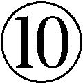金離れをよくする温泉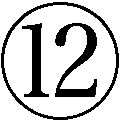女を理解するな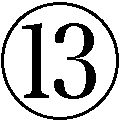泣くな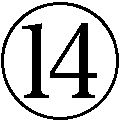やせがまん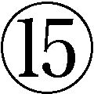年増女がいい女である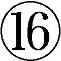口説きは迅速に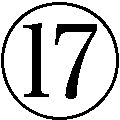負けてこそギャンブル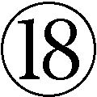宗教を信じるな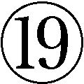自分の力を信ずる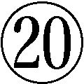孤立を怖れるな。以上である。各条項に引用のカッコはつけてないが原文どおりである。
時計は安物でいい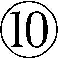金離れをよくする温泉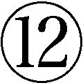女を理解するな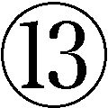泣くな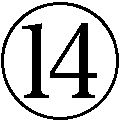やせがまん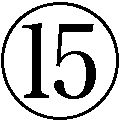年増女がいい女である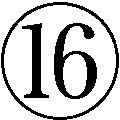口説きは迅速に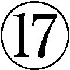負けてこそギャンブル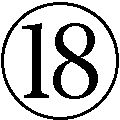宗教を信じるな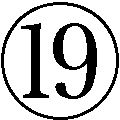自分の力を信ずる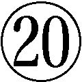孤立を怖れるな。以上である。各条項に引用のカッコはつけてないが原文どおりである。
「不良」とはいっても、非行とはちがう。非行は「人倫にもとる行為である」。不良は犯罪者になるのではない。このことさえカン違いしなければ、五十歳をすぎたなら「遠慮はいらない。好き放題、やりたい放題をすればいい」。というのだが、嵐山に「遠慮はいらない」と保証されてもなあ。どうでしょう。前記二十項目は玉石混交だが、わたしは嵐山の言い分に五分の理を認めたい。ただし、もし読者に「よし、おれも不良中年になるぞ」と思う方がいるのなら、嵐山にいわれたのではなく、自分で考えて自分の意志でやってもらいたい。
ところで、嵐山は有志を募って十九人からなる「不良中年行動規範研究会」（不中研）を結成したのだという（現在の会員数不明）。これがよくない。なぜひとりでやらないのだろう。「不良」という自称もかえって窮屈ではないか。また、「若いお姉ちゃんがオヤジに向かって、『カッワイイ！』という、あれは、深層心理では、一緒にベッドをともにしてもいい、という意味なのだそうだ」と書いているが、それはやっぱりちがうだろ、といいたい。
「若いモンにはまだ負けん」冷や水中年
若いモンは中年や老人などどうでもいいのである。中年が自分の上司や師匠や先生である、などの関わりがあるかぎりでは、なんらかの意識があるだろうが、基本的にはなんとも思っていないのである。無関心である。なのに「まだ負けん」との一人相撲。この手のおやじは別段非難するほどのものでもないのだが、「後生畏るべし」という意識はやはり持っていたほうがいいと思う。もっとも、大した「後生」にも最近はとんとお目にかからないが、それでもどこでそんなやる気を見つけてきたのか、と思うような「後生」は確実にいるのである。「負けない」って、どんなことにおいて、どう「負けない」のか知らないが、しかるべき若者にはきちんと「負け」を認めることである。すなわち若者の力を認めることである。引導を渡せばいいのである。
若者に媚びる中年
その逆が、若者に媚びる中年。知りもしないのにむりやり話題に参加しようとする。若者言葉を早速とりいれる。しかし、流行歌を覚えようとして覚えきれない。若者層にアピールしようとするあまり、若いのかじじくさいのかわけのわからぬ服装となってしまったリベラル政治家。女子高校生を集めて時代のトレンドをさぐろうとする企業。若者だけを集めたティーチ・インか討論会のＴＶ番組。ホームルームのばかばかしさはわかっているくせに。同年代に認められないものだから、若者に矛先を向けるのだが、若者と中年の両方から無視されてあえなく失敗。
「若けえヤツに嫌われてやるんだ」中年
またその逆がこれ。ビートたけしがよく言う。若けえやつに嫌われるジジイになってやるんだ。毒蝮三太夫もか。無理に嫌われようとしなくても、ただ「ジジイ」ということだけで、ほっといても嫌われるって。
このような言い方もすでに定型という気がする。若いやつに媚びるつもりはない、ということの裏返しのつもりなのだろうが、そこまで若者を気にすることはない。絶対にものわかりのいいおやじにはならない、というのだろうが依怙地すぎる。自分の持っている価値観がもはや時代から受け入れられないことはわかっているが、それを手放すつもりはない、という気持ちはわかるんだけど。
いまだにロックするニッポン中年
いますねえ、中年ロックンロール野郎。数はすくないが。なんといっても御大は矢沢永吉。幸か不幸か（幸に決まっているが）、わたしは矢沢永吉のどこがいいのかまったくわからない。したがって、コンサートを開けばなにはおいても駆けつける数万人のファン（信者？）心理もまったくわからない。あの熱狂はほとんど矢沢教という宗教であろう。
たとえば桑田佳祐などと比べても、作詞作曲の才能があるとはとても思えないし、魅力のある歌声でもない。おまけに自分のことを「ヤザワ」と呼ぶあの独特の語り口。自己神格化の現れか。大して深遠なことを語っているとも思えないのだが、ときおりインタビュアーを試すように「わかりますぅ、言ってること」と上目使いに、薄笑いで問うのである。悪いがわからん。けれども、わたしは「ヤザワ」をそれほど毛嫌いしているわけではない。ちょっとオカシイと思っているだけである。
むしろ注目したいのはこっち、シェキナベイビーの内田裕也、安岡力也ご一統様である。ミッキー・カーチスは大御所、その他ジョニー大倉やジョー山中、つのだひろあたりが会員か。こっちは純粋に笑える。特に内田、安岡（芸名「力也」！）のご両人は貴重である。ふだんはその活動を目にする機会はすくないが、年一回、大晦日の夜にはテレビで見ることができる（去年は年明けに放送。見なかったが）。紅白の裏で盛り上がっているのである。なんか意地になっているようにも見える。
その内田さん、仲間のロック一家のある結婚式の祝辞かなんかのときに、「○○君、××さん、ロックンロール！」とやったそうである。うーむ、タジタジとなるなあ。かれは靴店で、気に入った靴を見つけたときなど「お、こいつはロックンロールだぜ！」とかいうのではないか（いわないと思うが）。ロックだから、当然かれらは英語の歌をよく歌うのだが、それがかならず「デイトリッパー」だというのは悲しい。おまけに「力也」の「好きにならずにいられない」なんか英語の発音は適当にごまかしているだけである（ロックかブルースかの女王と一部でいわれる和田アキ子もおなじ）。
そこには、自分の生き方を生涯枉げることなく貫き通している、というような爽快感はみじんもない。ひたすら暑苦しく、ばかばかしいだけである。なぜなんだろ。ひたすら薄っぺらいというのがあると思う。ただの「見てくれ」追求で、動きも言葉も美しくない。根本的には、いまだにロックという音楽が日本の板についてないということであろう。もっと根本的には、いずれも頭がよくないように見える。致命的である。ただ格好だけなのだが、その格好が「サマ」になっていないのである。
日本のロッカーだけではない。現在のローリングストーンズやポール・マッカートニーにも興味はない（スプリングスティーン、クラプトンは例外）。客席の中年男女にも共感はない。わたしがおかしいのか。
「さあ、これからが本当の人生だ」中年
第二の人生どころではない。これからが「本当の人生」である、というのである。三田誠広の『中年って何？』である。これについては、すでに一回批判したことがある（拙著『こういう男になりたい』ちくま新書。この「批判」という言葉はいやだが）。三田は一九四八年生まれだから、わたしより一歳年下。ほとんど同年だといっていい。三田は五十歳になって「ようやく心が落ち着いたのは、死という人生の最終ゴールが、目の前に見えてきたからだと思う」と書いている。ほんとうか？ うそだとおもう。もちろん、すぐに死ぬということはないが、「人生というレースの最終コーナーを回って、あとはひたすら直線を進めばいいという、一種の安堵感を覚える」のだそうだ。
そう考えてみると、一般のサラリーマンの場合も、五十歳から定年にかけてのこの時期に、ある種の軌道修正というか、これからの人生についてじっくり考え、最終的に決断する、といったことがあるのではないだろうか。（略）
人生の最終目標を設定する。あるいは、これからが本当の自分の人生である。青年時代だけでなく、中年という時期も、本当の人生に向けての助走期間にすぎなかった。この中年の最後の時期というのは、最終的な大ジャンプに向けて、ためていたパワーを一気に爆発させるべき時期なのだ。
（三田誠広『中年って何？』光文社）
「本当の自分の人生」「最終的な大ジャンプ」などの大げさな言葉の言い回しを割り引けば、そんなにでたらめなことが言われているわけではない。しかし言葉が大げさであればあるほど、言葉の力が軽くなっているのだ。
定年までのサラリーマン生活は、「本当の人生」を模索するための一種のモラトリアム期間だった。定年で会社を辞め、会社という村社会から離れたところから、いよいよ本当の人生が始まるのだ。少なくとも、家の中で「のんびり」と、「ゆったり」と、ミイラみたいにごろごろしていることが、「本当の人生」ではないだろう。
（同書）
たしかに、会社にはつまらぬ形式や愚劣な因習がたんとある。だが、あんまり会社を舐めないほうがいいとおもう。会社からではなく、会社勤めからは学ぶべきこともまたたんとあるのである。それを「本当の人生」を模索するためのモラトリアム期間などと適当なことをいっていると、「サラリーマン」から引っ叩かれるぞ。三田は五十歳までの自分の作家生活を「一種のモラトリアム」とでも思っているのだろうか。「ほんとうの自分」という考えがダメなように、「本当の人生」という考え方がそもそもダメなのである。
子どもに美田を残すバカ親中年
茨木のり子に「最上川岸」という詩がある。「子孫のために美田を買わず」と書きはじめられたあと一行おいて、「こんないい一行を持っていながら／男たちは美田を買うことに夢中だ／血統書つきの息子に／そっくり残してやるために／他人の息子なんか犬に喰われろ！」（『鎮魂歌』童話屋）とつづく。
自分の子どもに安定した人生をつつがなく生きていってもらいたいと願うのは親心である。ところが、本来なら「自分の力」をつけるための助力をしてやるのが親の役目なのだろうが、いきなり金や地位という下駄をはかせてしまう。そのことを多少恥じる心がある子どもなら、まだ見込みはあるが、親が親なら子も子である。「学者のあとつぎよ／あなたがそれを望まないのなら／ろくでもない蔵書の山なんぞ 叩き売れ」。ただし私見では「蔵書」なんか「美田」にはならない。「美田」とは地盤、看板、カバン、コネのことである。
親バカは笑ってすませられるが、公私混同のバカ親につける薬はない。
「恋は遠い日の花火、だろうが」中年
先の「あぶらぎった中年」「セクハラ中年」とちがうのは、こっちは純愛中年であるところだ。純愛といってもたいした純愛ではない。当然、下心はある。口を開けば「恋がしたいなあ」とかいうのである。バカものが。鬼瓦みたいな顔をしてるくせに、対象はどんな女を想定してるんだ。もう何年前になるか、サントリーのＣＭが話題を呼んだ。長塚京三が若い女部下に慕われる。そのうれしさを表現して長塚が軽くジャンプをする。遠い夜空に花火があがり、「恋は遠い日の花火ではない」の文字とナレーション。このＣＭが中年男をいたく刺激したらしい。どうしてこんなＣＭに手もなくひねられてしまうのか。
このあとはご存知、渡辺淳一の『失楽園』である。これは有夫有妻どうしの「おとな」の不倫物語。映画では役所広司と黒木瞳、テレビでは古谷一行と川島なお美。この顔ぶれにただの中年男である自分を重ね合わすというのがいかにもずうずうしい。
「正しい日本のおじさん、ってよさねえか」中年
「正しい日本のおじさん」とは、椎名誠がいったような記憶があるが、たしかではない。最初は、おもしろい言い方だと感心もしたが、よくよく考えてみると、これは単なる修辞のおもしろさでしかなく、なんの実体もない。「頑固おやじの会」とか作っているおやじたちも同類。正しいもへったくれもない。
温泉にいくと、朝から晩まで、何回も親の仇のように風呂に入るのである。そして、「いやー、あったまったなあ」などというのである。冬に、定食屋で味噌汁なんかを飲むと、ここでも「あー、あったまって助かるなあー」とかいうのである。なぜか知らないが、いつも、あったまりたがっているのである。いったい、あったまるとなにが助かるのか。くしゃみをすると「っチクショー」といい、おふくろの味というと、なんの迷いもなく「肉ジャガ」とかいうのである。「肉ジャガ」のどこがうまいんだ、あんなもん。
ラーメンに薀蓄がある。たかがラーメン食いたさに並ぶのである。福田和也のこの一文を見よ。「近年の何か過度にストイシズムやナルシシズムを発揮し、それにメディアと顧客が応えている風景は、何というのでしょう、今の日本の貧しさを象徴しているもののように見えます。貧相、の一言につきますね。／しかも、それを行列して待って食べるにいたっては、たかが、ラーメン、すいてる店で食えばいいじゃないか。だいたい女の子がアイスクリームに並ぶならともかく、大の男がラーメンのために行列などして恥ずかしくないのかね、などと憎まれぐちを叩きたくなります」（『贅沢入門』ＰＨＰ研究所）。
おじさん、いくら安いからといって、牛丼屋に並ぶのはやめよう。並ぶくらいなら、昼飯を抜こう。食べるのなら時間をずらして食おう。
「少年のような心」をもった中年
「あっは」、少年のような心だって？ 「ぷふい」、笑わせるんじゃない、とでもいっておくしかない（埴谷雄高『死霊』参照）。岩城晃一がその代表か。しかし岩城晃一はいいのである。嫌味がないからである。そりゃあ、中年の男女にも「少年のような心」「少女のような心」はあるに決まっている。だからといって、そのことが純粋を意味するのではない。ただたんに幼稚という意味でしかない。いったい「少年のような心」ってなんだ。「少年」といえば純粋で、「ガキ」といえば幼稚か。世間で汚れた自分のなかにも「少年」のような無邪気で純粋な心がある、といいたいのだろうが、どうでもいいことである。
「少年のような心」というから、その前提として、しっかりした「おとなの心」をもっているのかというと、どうも話がちがう。ただ「ガキの心」のまま大きくなっただけではないか。欲望も嫉妬も保身も、当の自分じしんを一分たりとも「殺せ」ていないではないか。「おとなの心」をもった中年、となぜいえない。純粋でも汚濁でもない。さりとて「清濁併せ呑む」というようなウソ臭い度量を示すのでもない。できるかぎり公平を尊ぶことのできる、「おとなの心」をもったおとなはどこにいるのか。
いまだに思想する中年
人間とはおもしろいものである。本を読む人のなかには、難解な本でないと読んだ気がしない、という者がいる。だから思想的な言葉で語られていると、一も二もなくありがたがる。書くほうにも、難解に書かないと書いた気がしない、つまり自分が偉く思えない、という著者もいる。
かと思えば、そのような固い本をおもしろくない、という読者がいる。著者もいる。わたしの評価の基準は、「思想」であろうと「エッセイ」であろうと「イロモノ」であろうと、おもしろいかおもしろくないか、だけである。文章に色気があるかないか、だけである。書かれている内容が「すごい」ものなど、そうざらにあるものではない。ただ「思想」的というだけでは、ありがたくもなんともないのである。世界はあなたなんかに関係ないだろ、とおもう。世界はあなたの考えなんか待ってもいないし、必要ともしていない。
わたしもまた若い頃、「思想」というわけのわからないものにイカレたことがあるが、よく考えてみると、「思想」からはなんの恩恵も受けていない。したがって、このように断ずるにいたった。「思想」なんか実人生にはクソの役にも立たない（いいすぎだが）。
私は、体験としてではなく、知識として持ったものの中で、自分の血肉となるような情熱にまで発展したものはほとんどなかったのである。知識として蓄えたものが、自分の体験に触発されて、一つの思想になったものはある。しかし人から聞いたもの、教えられたもので、純粋にそのまま私の信条となったものは一つもないように思う。
それは私が人よりはるかに想像力が乏しく、抽象的な命題を理解する能力もそれを心に定着させる力にも欠けていたせいかもしれない。しかし私は、人間は自分が体験したことしかわからないものだ、という考えから今でも抜けきれないでいる。
（前掲『中年以後』）
基本的に賛成である。ただ学者は仕事だからいい。思想中年から除外する（それでも、この哲学者の思想はどうである、おれの思想はこうである、というのはあまり意味のあることとは思えない）。ふつうのおっさんが考えないようなことを調べ、研究し、考える。それが学者の本分だ。自称他称の「思想家」がこの日本に存在する（「思想」という言葉をありがたがっている者もいる）。団塊の世代（およびその前後）に多いようである。が、歴史的思想家と比較すると軒並み「安い」のである。いやそもそも、もう歴史的な大思想家がわたしにはありがたくない。
「思想」というものにまだかろうじて関心があるとするなら、生活から吸い上げ、生活に降ろす「生活思想」だけである。拙著『「自分の力」を信じる思想』に「思想」という言葉を使用しているが、その思想とはそれ以外のことではない。それでも最近とみに、「思想」という言葉がやかましいと思うようになった。わたしのなかにたしかに存在する俗物性と折り合わないことに気づいたのだ。で、「思想」のほうを折ったのである。「思想」なんかをやっていると、自分が何者かだと思える、という特典がある。ただのひとりよがりなのだが。知識人と大衆というのは、まだこの日本には厳然と存在する。喜劇としてだが。すくなくとも、現在のわたしには「思想」「哲学」はもうまったく役に立たない。けれども「思想」は不要だからといって、なにも考えないでいい、というわけではない。「思考」することまで蹴っ飛ばしているのではない。
金も友も趣味もない中年
友が数人。多く見積もっても十人いない。貯金も世間の平均以下である。五十年以上生きてきたのに、あろうことか無趣味。ゴルフもやらない。俳句ひとつひねらない。盆栽もカラオケも山登りも陶芸もパチンコもやらない。楽器もなにひとつ弾けない。おまけに酒も飲まない。こういうひといますか。絶対にいるとおもう（バレてるか）。かわいそうに。だが、はっきりいって自業自得である。本なんか読んでも、たまに映画を見ても、そんなもの趣味に入らない。
定年になって、いきなりオロオロするのがこの口、かと思うと結構しぶとい。前もってわかってたことだから、それなりの準備しとけっちゅうんじゃ、と思うのだが、それをしない。なんとかなるだろう、と妙に楽観的である。ところが案の定、なんともならずに、焦りまくるのがこの手のその場主義おやじ、かと思うとさらにしぶとい。なんともならなくなって、はじめて腰を上げるのだが、それでもなんともならなかったのなら、それはしかたのないことだと、妙な腹の括り方をしているのである。
「おれの人生はなんだったのか」中年
家庭も顧みずに、一生懸命会社のために粉骨砕身、働いてきた。それが定年間際でリストラされた。出向を命じられた。オレだけは大丈夫、と思っていたのに、結局会社にとってはただの使い捨ての駒でしかなかった。そこで愕然とする。「おれの人生はなんだったのか」と。なにもクソもない。それがあなたの「人生」だったのである。一生懸命働いたが、最後の土壇場でクビにされた。そういう「人生」だったのである。だけどそのなかには、ぎっしりと会社以外のいろいろなモノが詰まった十分な「人生」だったのではないか。
男が「おれの人生はなんだったのか」と嘆くのなら、あなたの妻も「わたしの人生はなんだったのか」と呟いていいわけである。あなただけに自分の「人生」を問い返す資格があるわけではない。会社勤めの途中で「組織」とはそういうものだ、とどこかで見抜いていなかったあなたにもヌカリはあったのである。
「なんだったのか」って、なんでもない。それがすべてだ。自分で選んだ人生だ。それが思い通りにいかないのは、それが「人間の人生」であるからだ。「なんだったのか」という悔恨は、こんなことであっていいはずがない、もっとうまくいくはずだったという失意からくるのだろうが、ではいったいどうなるはずだったのか。絵に描いたような幸福がやってくるはずだったのか。
静かで純朴な中年
ノーベル化学賞を受賞した島津製作所の田中耕一氏。四十三歳。「サラリーマンの星」「癒し系」と称されて国民的人気者となった。真性中年というにはまだ早いだろうが、むりやり中年にいれてしまえば、かれは「中年の星」といえるかもしれない。この型の中年だけは当然「まぬけ」から除外（このあとの項目も）。好ましい中年に所属する。
まだこの日本に、田中氏のような純朴な男がいたのか、と驚いた。いや、数としてならいるだろうが、あの素朴な性格のまま組織のなかでキッチリやっていけてるというのが驚きである。田中氏はたぶんただの純朴ではない。やるときはやる男である。早速、週刊誌かなにかで「うちの会社の田中さん」みたいな特集をやったことだろうが、その「田中さん」はちがうだろう。
夢見る中年
エライというほかはない。羨ましがるくらいなら、おまえも夢をもて、といわれて一巻の終わりだが、それにしてもエライ（エライとはちょっとちがうか）。夢をもつことは、いくつになっても、またどんな夢でも、なんの夢ももたないよりは、数倍いいことである。
金を沢山もっている人間も羨ましいが（〝目線〟が下がっていない！）、夢をもっている中年はもっと羨ましい。その前段階の目標をもつことができるからである。会社勤めには数値目標しかない。個人目標もあるが最終的には集団目標である。中年の夢は個人の夢である。夢のない目標は味けない。たとえば、なんの夢もなく英語をしゃべれるようになりたいというのはあまり意味がないと思う。将来数カ月をかけてゆっくり海外旅行をしたいという夢があってはじめて意味ある目的となるのである。それでも、ご自由に、というほかはないのだけれど。
さて以上である。まぬけ中年にはまぬけ中年なりの反論があろうかと思われる。たとえば、なぜ「くそおもしろくもない謹厳実直おやじ」がないのかと。あるいは「他人をまぬけ呼ばわりするテメエは何様だ」中年がなぜないのかと。
ごもっともである。人間は五十歩百歩である。小田実のいやらしい口ぶりでいうと「人間みなちょぼちょぼ」（ケッ）である。いろんなまぬけがいるからこそ人間はおもしろいといえるのだが、それでも五十歩と百歩と、ミソとクソはちがうのである。反論するまえに、まず自分の「まぬけ」を直してからいってきなさい、といいたい。やはり「まぬけ中年」の称号は正真正銘の「まぬけ」おやじにこそふさわしい。
『黄昏流星群』が身にしみる
以前、フェミニズムの台頭・隆盛につれて、「一人の妻である前に、また一人の母である前に、一人の女でありたい」という、まあもっともらしいといえばもっともらしいが、浅ましいといえば浅ましい言い方が持て囃された。今ではこれが「一人の女である前に、一人の人間でありたい」というわけのわからない言辞にまで進化しているが、一見、気が利いてシャレた表現のように見えてはいても、その実、ただの言い訳や自己弁護でしかないこの種の表現を、当然わたしは好きではない。
妻や母に、「女として」生きたいという欲求があるのを否定しているわけではない。ないのか、といえばないことはないであろう。ただ、もしほんとうに「女として」生きたいのなら、つべこべ弁解せずに万難を排して「女」を生き、同時に万難を甘受して「女として」生きればいいだけの話である。
男に「一人の夫である前に、一人の男でありたい」というようなスローガンがないのは、男には「男でありうる」機会が一般に女よりも多いから、ということではないと思われる。昔から、「浮気は男の甲斐性」というような手前勝手な言い草で、中年男の「男として」性はこの社会で黙認されてきた、という事実はたしかにあったのだろうが（その故か、女たちの間では今でも、自分にわからないようにやってくれれば、亭主の浮気はかまわない、という女が少なからず存在する）、実態は女たちが思うほどでもなかったのではないか。本質的には、社会における男と女の抑圧度のちがいに依っている。
中年になってもまだ男や女として魅力的でありたい、というのは当然の欲求である。人間はどんな人間でも、またいくつになっても、生きていくうえで、他者から三つの承認を求めている。同時に自分じしんを他人に証明したいと思っている。その三つの承認とは、家族からの承認、異性からの性的な承認、そして社会からの承認、の三つだが、中年が自分の性的魅力に無関心でいられないのは、このなかで一番最初に消滅するのが、異性からの性的な承認だからである。異性から恋愛の対象として見なされなくなるのだ。けれども、他人から認められることがなくなったからといって、承認への欲求と自己証明の欲求が消滅するわけではない。意識としても納得するわけではない。男はいくつになっても女から（逆も、たぶん真）、男として認められたいという欲望を持っている（はずである）。
まだ七十や八十になったことがないからその年齢における性的意識がどうなのかはわからない。当然、個人差もあるだろう。だが、たとえば「命ある限りにおもふ一度でも燃えて尽きたし女なりせば」とか「残り世の夢叶ふとは思はねど老いなればこそ命はなやぐ」という七十過ぎの女性の短歌がある（斎藤茂男『燃えて尽きたし......』講談社＋α文庫）。また七十過ぎの独居女性が宅配の男子店員に「この三百万円をあげるから、抱いてほしい」と懇願したとか、老人福祉施設でのアンケートで「男性に性欲あり」が九五％、「女性に性欲あり」が八一％との報告もある（小林照幸『熟年性革命報告』文春新書）。書店で、どこからみても完全なジイサンが、若い女性の裸雑誌を見ているのを目撃することも少なくない。オレはまだまだ男としてイケルぞ、と思っているわけではあるまい。だが、そのことへの、自分でもよくわからない欲求や憧れがあることは否めない。「現役」という情けない言葉はその間の事情を物語っている。
ましてやまだ中年である。実年齢七掛説によれば五十歳なんかまだ三十五歳だ。とするなら男としての魅力まっさかりではないかと、自分をだましてでも無理矢理思いたいが、しかし現実にはキタナイ。おまけに暑苦しい。そこで「中年の魅力」などといいたがるのだが、オトーサン、残念ながらそんなものはない。あってたまるか、というくらいのものである。あるとしたら多少の金くらいであろうが、実情をいえば、それとてふつうの中年男には覚束ない。そこでさらに、経験と知識と分別を兼ね備えた「人間的魅力」などといいだすのだが、そんなものはさらにない。もしあったとしても、せいぜいが「おじさま」になるのが落ちで、恋愛対象として若い女を「ポッ」とさせる、なんてこと金輪際ありえない。せいぜい「素敵なおじさま」どまりである。ここ、勘違いしないように。
だが、ここでハイソウデスカと腹の底から納得することができるくらいなら、世のなかはなべて平和である。なんの問題も生じない。終わっているのに終わっていないのが中年なのだ。勘違いを勘違いだと思わない。むしろ美しき妄想はつきることがない。
弘兼憲史『黄昏流星群』（現在、十七巻まで刊行中）はそんな中高年男女の恋愛をあつかった連作漫画である。いちいち細かいストーリーを紹介する愚は避けるが（できもしないが）、たとえば偶然知り合った銀行役員と社員食堂で調理師をしている中年女性との恋、中年になってもまだ一人でいる女の複雑微妙な心理、若い女性学芸員への老人（元教授）の恋心、ソープに通うことを知った老人の昂揚感（結果、その女と老妻と主人公の共同生活が始まる）、などなどが描かれる。
なかでも、同窓会で再会した中年男女の恋愛を描いた「同窓会星団」、年老いた料理人の、若き日のフランス人女性との悲恋を描いた「星のレストラン」は映画化された（わたしは見ていないが、漫画は上出来である）。もちろん、そううまくはいかんだろ、というようなものばかりといえばいえるが、そんなことはどうでもいいのである。作品としておもしろければそれで十分であり、そうでなくても、事実は小説よりも奇なり、現実は漫画よりも荒唐無稽、でありうるから、この漫画で描かれたようなことが現実にないとはいえない（基本的には「金輪際ない」が、現実的には「ありうる」）。その意味でこの連作は、中高年男女の期待、願望、理想、現実をめぐる止むことのない性心理を描いて、わたしなんかにもそぞろ身にしみる傑作漫画であるといっていい。
現実にも、そのような中高年の恋愛はあるところにはあるはずである。しかし、いつものように、そんな成功例はほっておく。人生に成功した中年、恋愛をしている中年なんかはほっておけばいいのである（実際に、ほっておくしかないが）。問題は、「女として」や「男として」を抱えながら、結局、妻や母や夫や父として生きていく中年男女の性心理である。いや、これはけっして「問題」なんかではない。むしろ、中高年男女が引きずっている「テーマ」というべきである。「問題」は解決を求めるが、「テーマ」に解決はない。抱え込むだけである。抱えていても溢れてしまうようなら、個々の裁量でやっていくしかない。一律的な方法や解決法など存在しない。
「おとなの恋愛」批判
いくら歳を食っても人間的成長などないという証拠に、なぜかくも「セクハラ」おやじ、エロおやじ、ヒヒおやじが繁殖しているのか。女に（それも若い女に）反応してもらおうと必死ではないか。かれらもまたほんとうは「おとなの恋愛」に憧れているのだろうか。だが、その芽がテンでないもんだから、しかたなく手近な女子社員相手に親密さを装いながら、ちょっかい（エロ話や体への接触）をしては、反応を調べようとしているのか（会社という内輪的雰囲気の中で、女子社員を半分くらい、自分の所有物みたいに思っているフシもある）。ところが、そんな中年男の心理が可愛いではないかとか、逆に、そんなちょっかいは軽く受け流すのが「おとなの女」だ、とかの、男側からの調子のいい言い訳や勝手な言い草があるが、「ドアホウが。早いとこくたばってしまえ」といっておく（それが「おとなの男女」の軽い「エッチ話」だとでもいいたいのか）。
中高年になっても、恋愛や性への欲望があるのは当然である（なくてもいいが）。だからといって、薄汚い行為が許されるものではない。不思議なのは、そんな自分に嫌気がささないのか、ということだ（ならないのだろうな）。じゃあ、この性衝動はどうしてくれるんだ、って知るかそんなこと。そんなにしたかったら風俗へ行け風俗へこのヘチマ野郎が、ってなんでわたしはこんなに怒っているのだ。公的な場面では、そういう欲望は死んでも隠すものだ、という意識もないのがわからない。偽善者にも劣る。恥でもなんでもやったもの勝ちか。ここでも、人生は楽しまなければ損か。
だいたい「おとなの......」という言葉じたいがさもしい。「おとなの......」とつく言葉は要注意である（先に「おとなの心」ということをいったが、これは例外。こっちはハードだ）。きまって薄汚く、下心が見え透いていて、そのくせケチな特権意識が旺盛なのだ。「おとなの関係」「おとなの隠れ家」「おとなの付きあい」。こんな言葉を得意気に自分でいう男も、他人にしたり顔でいう男も、いわれて考え込んでしまうような男も要注意である。
顔は老け、見た目の貫禄はあっても、感情は「ガキ」のままではないか。口で「おとなの......」といいながら、なにが「おとな」なのか、てんでわかっていないのである。その証拠に、女のたかが一言、たかがひとつの行動にも感情がざわめく。テメエのことは棚に上げて、報復しなければ気がすまない。ほかの中年男のことだけをいっているのではない。わたし自身省みて、内心忸怩たるものがあるのだ。
酸いも甘いも噛み分けた「おとなの恋愛」。ひとりよがりではなく、相手のことも配慮し、ションベンくさかったり喧騒で話もできない安い店ではなく、高級でシャレた店で「おとなの酒」を味わいながら語らい、シティホテルで一夜をともにする「おとなの恋愛」、ってよさねえか、このちんちくりんオヤジが。
いや、もちろん相手のことを配慮することは大切である。それができるのが「おとな」の条件であることもいい。落ち着いていながら激しい「おとな」同士の恋愛はあるであろう。だが、それはただ単にそういう恋愛だということである。それでいい。これが「おとなの恋愛なんだな」だとか、「おとなの恋愛」をしたい、など余計なことである。実体はあるが、そんなうそ臭く、しみったれたモデルなんかあるはずがないのである。言葉に引きずられ始めたら、どんなことでも終わりである。
中年になっても性的魅力のある男女はもちろんいるであろう。だが、かれらは「中年」だから魅力があるのではない。おそらく中年以前から、魅力があったのである。中年になったからといって、急に「中年の魅力」など生じてたまるものか。
若作りする中年――性的承認への未練
容貌や身体への執着は、女のほうが男よりも強いかもしれない。美肌への欲望は女のものだからである。もっとも、それもまだ可能性がわずかでもあると自覚されているうちだけで、限界を突破し、もはや可塑性（もとに戻る可能性）がないと諦めた場合には、あとは野となれ山となれ状態となる。中高年男でも、いまだにボディビルなどで体を鍛えているものがいる。皮膚に艶なく筋肉も茫洋、しかも顔は老けているのに体はキレのないマッチョ、というキメラめいた男がいて、びっくりするのである。
男女に共通するのは、健康維持としての運動であろう。ラジオ体操、ジョギング、ウオーキング、ストレッチ、ダイエット、太極拳、ダンベル運動などだが、これは「若作り」には該当しないから、わたしの興味範囲外である。ただ健康で長生きしたいという当然といえば当然の欲求にもとづくもので、おもしろみはない。ただしここにも魅力あるカラダへの未練がないわけではない。健康維持、体力維持に、スリムな魅力的カラダ維持への欲求が加わって、一挙三得が目指されているわけである。
体を鍛えることなど苦しいことだから（効果も期待できないし）、女も男も通常は、ウワモノだけで身を飾ることになる。権威発揚の道具としての衣服・装飾はここでは論外である。ひたすら、見栄えのするもの、高価なもの、ブランド品というだけだからである。ジジババくさいからもっと若々しいものを、というのが若作りである。実年齢以上に若く見えるようにすること、というのがその主旨なのだが、無理なのだ、もともと。
化粧。整形。かつら。若々しい服装。身なり。このあたりまでなら、度を越さなければ悪いことではない。着るもの、身につけるものによって、たしかに気分は変わってくるから、それで心がすこしでも軽くなるなら、悪いことではない。しかし、それが度を越して「現在」に媚びると、むしろ「老い」の見苦しさが際立つ。ひとにもよるが、どぎつい化粧、おばさんのミニスカート、おっさんのバミューダ、金髪紅髪、バンダナ、金ピカジャラジャラの装飾品、などはどうか控え目に。
岩月謙司の『女は男のどこを見ているか』（ちくま新書）という本がベストセラーとなった。新書の読者層はふつう四十、五十代の男が多いとされている。この本のタイトルは中年男だけでなく男全体を魅きつけるが、かれら中年男たちもまた、「むふ、おれにもまだ関係あるな」と思って読んだのだろうか。いや魅力が薄れつつあることを感じている中年だからこそ読んだのであろう。いっておくが、関係ないよ。それに、女は男のどこも見てないよ。すくなくともあなたはね、といっておきたい。ところが、関係ないのに、まだ関係ある、と思ってしまうところが、中年男の浅はかなところである。この本を腐すのでは毛頭ないが、読者はこの本を読んで、女が男のどこを見ているのかのポイントを学習し、そこを気をつけようとでも思ったのか。
「若作り」する意識には、やはり「老い」はキタナイという自認がある。だからだれも「若作り」はしても「老い作り」なんかしない。年をとればだれでも老いる。自然である。だが子どもが生まれて名目上は父親と母親になった男女が、それだけで実質的な「父親」と「母親」になったわけではないのと同様、老けたからといってだれもが「老い」になったわけではない。「老い」は作られる必要があるのではないか。だれもがジジくさくババくさくなれというのではない。中年という人格、老人という人格があるのではない。わたしたちは「わたしという中年」「わたしという老人」を生きるのである。自分固有の「老い」を自由に作ればいいのではないか。なにがなんでも「若く」みせればいいというものではない。実際、みえていないし。「若作り」するよりも、自分の好きなスタイルで自分の「老い」を作ればいいのである。
中高年の性、というようなことがいわれる。「日性研」なる会が存在する。「日本中高年性教育研究会」が正式名称である。「中高年の性に関しては周囲の偏見が強く、また性に関する情報も不足し、さらにその相談の場が少ないというのが現状であります。これらの要因を早急に取り除き、より円滑に性との関わりを保ちながら、中高年齢者が充実した生活を送れるように支援をしていくことが必要であります」との趣旨（ＨＰから引用）で平成七年に設立されている。どういうつもりか、中高年性教育相談員の認定制度もあるようである（受講料六万円、認定料一万円だって）。
だが、そんなこと、社会問題にするな、と思う。勝手に「会」なんかつくるんじゃない。「より円滑に性との関わりを保ちながら、中高年齢者が充実した生活を送れるように支援をしていく」など、大きなお世話である。おそらくマジメな研究会なのだろうが、そんなことは中高年や老人銘々が考えればいいことである。実行すればいいことだ。会員がどんな年齢構成になっていて、どんな学識や倫理観をもっているのか、またどんなに男女の機微に通じて、どれほどの性知識・性技術をもっているのかは知らないが、自分たちが他人を「支援」できる、と思うのは傲慢である。「支援」される中高年者とどうちがうのか。
女への差別や権利に関する問題は社会問題たりうるが、「中高年の性」問題などありえない。あるのは個々の性問題だけである。学者や有識者が権威ぶって好き勝手なことをいうが、まともに受け取る必要はない。馬糞みたいな学問的知識なら腐るほど頭に詰まってはいても、かれらがあなたより男として、また女として、優れているわけでもなんでもないのである。もしかしたら、劣っているかもしれないではないか。
だけど、「いい歳をして」という社会の偏見がまだあるではないか。たしかに偏見はあろう。特に老年の性にたいしては（ただ最近は、むしろ祝福する傾向もでてきている）。けれど、それは社会がいうのではない。あなたがいうのだ。社会の偏見とはわれわれ一人ひとりの偏見である。あなたも他人のそれを見たなら、そのようにいう人である。それだけのことだ。わたしも他人事ならいうかもしれない。しかし、自分事ならいわない。それだけのことだ。あなたが中年であろうと老年であろうと、あなたの個人的な性の問題を他人が「支援」してくれる。助言し、教えてくれる。それでなにがどう助かるのか。それはやはり、うれしいことなのか。
もちろんかれらが強制的に介入してくるわけではないから、どうぞご自由に「研究」してくださいというほかはない。大きなお世話だが、かといって邪魔になるものでもない。ただそれでも、いったいどのツラ下げて「支援」してるのか、という思いがわたしにはどうにも払拭できない。
「かっこいいお父さん」ってだれのことだ
男は中年になると、自分という人間の程度をかなりの程度見定めるようになる。決して自分をあきらめるのではないが、もはや愚かしい高望みなどしない。それが服装や身だしなみの放任に如実にあらわれる。おまけに美的感覚が昔のまま固定してしまっている。なにが「美」なのかさっぱりわからない。自信もない。街を歩いていると、オレなら金をもらっても着ないな、というような服を平気で着ている同年輩の男を見つけて「そういう趣味なのか」と思うことがある（わたしが「美」をわかっているのではない。好みがはっきりしているだけである）。
若手漫才師「いつもここから」（これが芸名）のネタで、ひとりが絵をみせ、もうひとりが「悲しいとき！」と叫ぶ。多くの「悲しい」シチュエーションが演じられていくのだが、そのなかに「服装なんかどうでもよくなったオトーサンを見たとき！」（正確ではない）というのがあって、スケッチブックに描かれた「よれよれのＴシャツを着たオトーサン」の虚ろな姿をみせられるのである。あまりにもリアルすぎて苦笑する。わたしはそんな「オトーサン」好きだが。
父の日のための特集なのだろう、「お父さんをかっこよく」という記事（『毎日新聞』二〇〇二・六・十一）は、逆の意味でそのような中年男の悲しさを伝えている。ポイントは「清潔感がやっぱり大事」と「とにかく家族がほめる」ことの二つ。「お父さん」は「美」の基準を失い、自信も失っているから、ということなのだろう。五十七歳の美容師（男）のアドバイスはこうである。鼻毛、耳毛、まゆ毛の手入れはきちんとすること。「鼻毛は一本でも出ていると、すてきな社長さんも大臣も一瞬で権威失墜です」（「すてきな社長さん」て、フィリピンパブか）。
五十一歳の主婦いわく。これまた「清潔感」第一。夫には「散髪は四週間に一度」は行かせ、散髪屋から帰ってくるとかならず「ウーンいい男になった、すてきよ」と声をかける（頼む。やめてくれ）。夫は「そんなこと言ってくれるのはお前だけだ」といいながらも「悪い気はしないよう」。「靴はパンストで磨き」「歩く姿勢が大切」。メガネもフレーム一つで「雰囲気」が変わる。
五十八歳の会社員（女）いわく。「背筋をピンと伸ばし、動作をきびきびすること」。そうすれば「さっそうとしてかっこよく見えます」。家庭では「お父さん、洋服の色似合っているね」「その服すてきね」とほめること、とまるでもう夫は洟をたらした子ども扱いだが、「大人だってほめられたらうれしいのです」（たしかにそうだが）。
六十四歳の主婦いわく。「おしゃれな男性は生活全般にセンスがよい人が多い」。洋服は「年齢よりも少し若めかなと思う物を選ぶ」。そして、ここでも「かっこいい」「似合う」とほめる。とにかく、ほめる、ほめる、ほめるの一点張り。たしかに人間はどんな人間でもほめられるとうれしい。嘘でもうれしい。それが自信にもつながる。だがちょっと舐められすぎではないか。結婚詐欺に手もなくだまされるわけである。
四十四歳の兼業主婦いわく。「オーストラリアに暮らす友人のお父さんやオーストラリア人の友人はともにかっこいい。どうしてだろう」って、知らんがな。かれらは「実にまめに人とかかわる。家事もこなす」。そのことによって子どもたちに「生きるすべ」を教えている、と大変なほめちぎりようである。わたしは断定するが、その「オーストラリアに暮らす友人のお父さんやオーストラリア人の友人」は、悪い人間ではないだろうが、たいしたことはない。
十八歳の女子大生いわく。テレビでお父さんを芸能人みたいにイメージチェンジをさせる番組があるが「無理がある」（正しい）。「外見だけ変わってもやはり内側が変わっていない。その人が持っている魂（と言っては大げさですが）、魅力を出していければ自然とかっこよくなると思います。身だしなみは最低限のマナー。あとは自分の個性を光らせることではないでしょうか」（個性云々はうるさいけれど、それを除けば基本的に正しいと思われる）。
もう、日本の中年男は軒並みただの「ガキ」あつかいである。どうして「かっこいい」お父さん（中年）でなければならないのか。ここには肝心の「お父さん」の側の声がひとつもない。そもそも「お父さん」本人は「かっこよく」なりたいと思っているのか。大体、そんな「かっこいい」お父さんはいるのか。まあどこかに自称他称いるのだろうが、だからといって、そんな「かっこいい」中年とあなたとなんの関係がある。なによりも、「かっこいい」という言葉が、田舎臭くて薄っぺらで、いやな言葉ではないか。それに、万一「かっこよく」なったとして、いったいそれでなにがどうなるのかがわからない。
わたしにはなかなかできないが、ふつうにきちんとしていればいいのである。だがそのことは断じて「かっこいい」のではない。もともと「お父さんをかっこよく」というテーマに無理がある。橋本治は、「カッコいい」は「利己的な感動」で、安易な「エピゴーネンが氾濫」しやすいと指摘しているが（『人はなぜ「美しい」がわかるのか』ちくま新書）、わたしにいわせれば、そもそも「カッコいい」という言葉じたいがまったく「カッコよくない」。世のなかには、どうでもいいことがどうでもよくない顔をして氾濫しているが、さしずめ「かっこいい」という評価などは、そのどうでもいいことの三本の指に入るのではないか（あとの二本がなんなのか、知らないけど）。
中年女性よ、どこへゆく
第一章でふれた斎藤茂男の『妻たちの思秋期』には、妻たちの「孤独」「寂しい」「悲しい」「不満」「心の揺れ」「聞いてもらいたい」「我慢」「惨め」という悲嘆の言葉のほかに、「なにさ、よくもほったらかしやがって！ 二十五年間も！ 二十五年もほうっといてさ！ なにが仕事よう」とか「これだけ尽くしているのに、ちっとも評価してくれない」という怨嗟の言葉で満ちている。
全中年男を代表してここでわたしが謝罪してもかまわないのだが、遺憾ながら、わたしにはその資格がない。それに、そんなことしてもなんの意味もない。このような悲嘆・怨嗟の声は世代を降りていくに連れて徐々に減少していくものと思われるが、そんな甘いものではないかもしれない。中年夫の問題は、換言するなら日本の男全体の問題でもあるからである。もとをただせば、日本の男の育ち方の問題でもある。
読売ジャイアンツの高橋由伸がテレビ番組で、「結婚願望はあるか」と聞かれて「不自由はしてないんで」と答えた。掃除洗濯はきらいではないし、食事は外ですればいいから、と。これが高橋の真意とは思われないが、不用意な発言ではある。結婚は「生活が不自由」だからするものか。妻は母親か家政婦がわりか。高橋由伸は野球選手としては優秀だといっていいが、男としてはただのふつうの男でしかない（まあ、やさしい亭主にはなるだろう）。若い男にはいまだに結婚をこのように考えているものが意外と多いのだ。
中年女性よ、どこへゆく、か。自分でいうのもなんであるが、大雑把な問いである。中年女性と十把一絡げにするのも失礼な話であり、各人の実情にも即してはいないだろう。ただ、中年男にはない、中年女性（中年女と書くのが公平なのだが、そう書くと、額に梅干を張っていそうである。そんな女絶滅しているが）に固有の問題などあるのか。
一般的には、女は男よりも年齢を気にする。「女に年を聞くのは失礼である」という禁忌の意味がいまだにわたしにはよくわからない。べつに知りたくはないが、それがなぜ「失礼」になるのか。ともあれ、女にとって、三十歳がひとつの年齢的関門になるが、それは「もう若くない」という意味においてである。決定的な転換点となるのはおそらく四十歳である。世間的には、その歳が名実ともに中年年齢と見なされるからである。年齢なんか気にすることはないのに、とわたしはおもうが、こんな言い方にはなんの効力もない。社会的「制度」の一種だからである。
二十五の女が「わたしももうオバサンよ」というのは、バカくさいから無視する。岸本葉子が、三十女たちが自分たちのことをごくふつうに「おばさん」というのには、「防衛本能」があるかもしれないと書いているが、それはあるだろうとおもう。なぜ女は年齢を気にするのか。劇作家の永井愛はこのようにいっている。
なぜ年齢を言いたくないかは、ただ若く見られたいからだけでもないだろう。「中年」にまつわる、鈍くさいイメージから自分を遠ざけ、個人としての有り様だけで判断してもらいたいからでもある。しかしやっぱり、自分の生きた年数を誇れないのは、実にもったいないではないか。これがワインだったら、樹齢だったら、ますますその価値は高まるというのに......。
（永井愛『中年まっさかり』光文社）
古いものに、ワインや樹齢などの価値があるものもあるが、もう片方には、最近流行気味の「賞味期限切れ」という考え方がある。しゃれてるつもりなのだろうが、言うのも、聞くのもいやな言い方だ。年齢を気にする（特に女性）意識には、なにがあるのだろうか。男でも言い渋る者がいる。永井のいうように、中年にまつわる「鈍くさいイメージ」で見られることを避けたい、というのはあるだろう。なんだ、若作りしてても実態はバーサン（ジジイ）なんだ、というのがね。
しかし年齢なんかじつは大した問題ではない。基本的には、中年男も中年女もない。なべて中年の問題だけがあり、もっといえば「自分という中年」の問題だけがある。「ひとりの人間として充実した生をおくりたい」というような。また先の、老人ホームのアンケート「女性に性欲あり」八一％の数字の内訳が、「いたわり・愛情」六〇％、「肌のふれあい」一七％で占められているように、中年女性もまた、夫との愛情あるコミュニケーションを求めている、というように。
だが深刻めいた書き方をしてはいるが、現在、おばさんのイメージといえば、もう向かうところ敵なしのド迫力「がぶりより」ではないか。彼女たちほど徹底した現実主義者はいないから、うそくさいことを言ってもすぐに見破られる。ところが同時に、これほど未練がましい自己愛主義者もいないから、己の真の姿をつきつけられるような文句を許さない（というようなことを書くと袋叩きにあう）。
がぶりよられているのは、いうまでもなく亭主である。寄られているばかりか、土俵の外にまで吹っ飛ばされている。いまの日本で一番元気なのは、若い女の子とおばさんである。おばさんはどこにも行かない。家の中にドンとしている。職場でもふてぶてしい。無礼な若い女、無能な課長にもがぶりよる。行くときは気の合った仲間たちと「連」を組んで、わらわらと飲食店や劇場や海外旅行へとでかけていく。
と書いていて、どうもおかしいことに気づく。「中年女性」と書くと「人間らしい充実した生活」を求め、「おばさん」と書くと「がぶりより」となる。となると、「人間らしさ」を求める「がぶりより」、これが中年女性＝おばさんの実態か。
ふつうの中年男はここにいる
週刊誌やテレビなどを見ると、「スワッピング」「乱交」「人妻売春」など中年男女（に限らないが）の暑苦しくもどぎつい「性」の現実を見せられることがある。高校女子の「援助交際」のときもそうだが、まるで日本中どいつもこいつもが性欲でギラギラしているように錯覚しそうになるのだが、もちろんそんなことはない（そのような現実があることを否定しているのではない）。病院に行けば患者で溢れてる。刑務所に行けば犯罪者で溢れている。プラチナおやじも、セクハラおやじも、中高年の「性」の現実も、それとおなじ「病院患者」「刑務所囚人」現象ではないのか。
実感にまったくそぐわないのである。「バブル」景気がそうだった。一九八〇年代、日本にはバブル期があったといわれるが、わたし一身にはいまもってなんの実感もない。テレビニュースや新聞・週刊誌などでその馬鹿騒ぎの一端を横目に見た覚えならあるが、バブルはわたしにはまったくやってこなかったのである。株で大儲けしたヤツなどどこにいたのだ。だが、かれら大儲け人間だけをかき集めるなら馬鹿馬鹿しくも華やかな「バブル」成功ストーリーが成立し、それを見せられた自分だけが割りを食ったというか、機に疎いとんだまぬけ者に見えるというわけである。
この「病院患者」現象は自分一身のなかからも生じる。「性」の問題だけを問われれば、自分のなかからそれに関する知識・経験・願望・妄想のすべてが召還される。その結果、わたしは頭のてっぺんから爪の先まで「性」事でぎっしりつまった、全身「性のモンスター」になるというわけだ。だが、いうまでもあることだからいうが、それはわたしのなかの一部にすぎない。わたしだけではない。多くの中年男（女）もそうであろう。
なにが「ふつう」かを言い始めるともつれることになるが、さしあたりわたしが考える、「ふつう」の中年男とは、風采があがらず、セクハラもせず、大した出世もできず、バブルとも無縁、楽しみといえばパチンコや酒くらいで、毎日黙々と仕事をしている。こんな中年男はたぶん、世間の平均的な中年男よりももうひとつ下のレベルの「ふつう」であるだろう。どこかに少なからず実在するはずだが、とても一般的とはいえないかもしれない。けれどもこのイメージは、吉本隆明の「大衆の原像」にならっていえば、わたしにとっての「中年男の原像」である。
いまさら引用するのも気が引ける孔子の有名な言葉。
子の曰わく、吾れ十有五にして学に志す。三十にして立つ。四十にして惑わず。五十にして天命を知る。六十にして耳順がう。七十にして心の欲する所に従って、矩を踰えず。
（金谷治訳注『論語』岩波文庫）
これは各年代に応じた人間一般の成長過程をいったのではない。孔子じしんがそうだった、といっているのである。しかし我が身を振り返ってみれば、そうは問屋が卸さなかった。他人と比べるのではなく、二十歳代の自分と五十歳代の自分とを比べてみるなら、たしかに知識の量や判断力、人間的な度量や寛容や公平感などは深くなったといっていいはずである。なによりもちがうのは、人生に対する覚悟であろう。これは個人的資質に無関係ではないだろうが、ある程度人間一般の成長の法則でもあるだろうとおもう。
だが五十にして「天命」（なんだそれ）を知った孔子に比べて、五十代のわたしはてんでお話にならない。わたしは子どもの頃からどこをどう見てもふつうな男で、ならば最強の「ふつう」を目指せばいいとは思ったのだが、結局は凡庸な「ふつう」どまりの五十代にしかなれなかったわけである。いまの五十代はどうなっているのか。自殺し、うつになり、失職し、離婚される。離婚を除いて、本人に直接の責任はないというべきであろう。これが「中年の現在」である。だがヘラヘラしながら女のケツをさわり、バカでかい声で携帯をかけ、居酒屋で同僚たちと酒を酌み交わし、なんの悩みもないような顔でおやじギャグをとばし、アルマーニを着て一丁前のダンディづらをしているのもまた「中年の現在」だ。
中年の数だけ「中年の現在」がある。おれはそんじょそこらの中年とは格がちがう、と思っても、世間はそうは思わない。十把一絡げに「中年」なのだ。それでも中年の内側の一人ひとりには、それぞれの「現在」がある。わたしは自分を「ふつう」の中年だと思っているが、もし女のケツ触り大声携帯おやじギャグそれでも男かアルマーニにやけ中年男が大多数の「ふつう」の中年なら、わたしは「ふつう」ではない。
詩人石原吉郎はかつてこのように書いた。自分という存在は無限責任を負わなければならない、というのである。
食事によって人間を堕落させる制度を、よしんば一方的に強制されたにせよ、その強制にさいげんもなく呼応したことは、あくまでも支配される側の堕落である。しかも私たちは、甘んじて堕落したといわなければならない。
（「日常への強制」『石原吉郎全集II』花神社）
強制された部分については、自分に責任はありません。しかし自分が一つ一つの場面で具体的に決断してとった行動は、自分の行動として最後まで責任を負わなければいけないわけです。戦争が終わって帰ってきてから、生き残った人が「俺はだまされた」というような言い方をかなりしました。しかし、だまされたではすまないのです。だまされるならだまされるで、やはりだまされた者が悪いのです。
（「告発について」同集）
石原は、たとえ強制ではあっても「仮にも逃亡しないでそこにふみとどまり、そして戦闘したのなら、その時は自己の自由意志のある部分で自分の態度を決定して、積極的に戦闘したということです」（「告発について」）と書いている。
不甲斐なさもすべて自分の責任である。わたしが考える「中年男の原像」は、うだつも風采もあがらないが、自分の責任において、できるかぎり理不尽を引き受けようと意志する一点で、石原のこの言葉につながる。そして、もしもこれが「ふつう」の中年男であるなら、大多数の「ふつう」の中年男は「ふつう」ではない。もしもかれらが「ふつう」であるなら、わたしは「ふつう」ではない。
『毎日新聞』佐藤健記者の死
中年になってもまだもてたい。中年になってもまだ威張りたりない。どうでもいいではないか。中年男に魅力などない。人間的魅力もさらにない。あるとしたらせいぜい、男としての魅力だけである。いまだに「男として」と書いてしまうのはわたしの限界だが、この地点を手放すつもりはない。その、ひとりの男の生き方（死に方）を記す。
『毎日新聞』の佐藤健記者が二〇〇二年の暮れ、十二月二十八日食道ガンで亡くなった。六十歳だった。ここに特筆するのは、かれが「生きる者の記録」と題して、その闘病記を死にいたるまで書く、と決意して『毎日新聞』紙上で十二月三日から連載を始めたからである。この連載は読者の大反響を呼んだ。わたしも読んだ。どこまで続けることができるのだろう、と危ぶんでいたが、一月もたなかった（佐藤記者じしんは、今年の「春までの命か」と余命を思い定めていたようである）。
その第一回目。「定年を目前に末期がんを宣告された。どうやら長くはないらしい。生涯一記者として、『生老病死』という人類永遠のテーマを追い続けてきた僕自身が、最後の二文字を突きつけられたのだ。ならば四十二年間の記者人生の締めくくりとして、自らの肉体をフィールドにルポルタージュを送りたい。生と死の風景が蜃気楼（しんきろう）のように揺らぐこの時代を、最期まで生きようとする思いを」（二〇〇二・十二・三）。
この後数回の記事は割愛する。第一回目からほぼ三週間後の二十五日の記事は「がんで始まり、がんで暮れ行くこの一年に感謝し、来る年の生が輝かんことを。『ＬＯＶＥ』」と締めくくられていた。しかしその三日後、二十八日の記事冒頭でいきなり同僚記者が「佐藤健さんはこん睡状態にある」と書き、翌日の記事冒頭で「死去した」という文字を目にして驚いた。こん睡は、苦しみから逃れるために佐藤氏みずからが選んだ施術の結果だった。その直前、かれは奥さんに「あ、り、が、と、う」といった。親友のＯＢ記者には「おもしろかったよ」といい、同僚記者には「後を頼むな」といった。
「ご愁傷様です」と医者が告げると、「奥さんが拍手した。そして息子さんが、みんなが拍手で送った」。そして家族、仲間、医療スタッフが佐藤記者を囲んだ中、かれの息子さんが父親の飲んでいたホワイトホースのグラスを手にしてこのようにいった。「よき父、よき男、よき友の健さんにまず第一杯目の献杯を」。佐藤記者は死の三日前、社会部の忘年会にこんな茶目っ気たっぷりのメッセージを送っていたという。「まあだだよ」と（『毎日新聞』二〇〇二・十二・二十九）。
この連載記事には読者から多くの手紙が寄せられた。そのなかに、自分の夫もガン患者である五十四歳の主婦（東京都）からの批判がある。「佐藤氏のように公表して皆様から励ましを得る。単なる、お涙ちょうだいとしか見えません。佐藤氏だけが苦しんでいるわけではありません。自分の死を見つめながら、毎朝読んでいる夫をこれ以上苦しませたくはありません」。こういう批判はあるだろうとおもう。「いい気になっている」とか「特権的である」などと。たしかに「佐藤氏だけが苦しんでいる」わけではない。
中小企業の社長である自分の夫は「社員のために痛みやつらさを耐えて、会社存続のために闘ってい」る。「世間には明るい笑顔を振りまき、じっと耐えている患者が存在しています。命を削りながら闘う患者がいることも、知って頂けたらうれしいです」とその主婦は書いている。「知って頂」きたいのか。彼女の夫がなにを思って佐藤記者の記事を「毎朝読んでいる」のか、彼女は一回聞いてみたらいいと思う（と、こんなところに書いても無意味なわけであるが）。
ご遺族には申し訳ないが、佐藤記者の死はありふれた死である。『毎日新聞』を購読していない者にとっては、もともと「ない」死であり、「知りようもない死」である。だが、その経過を記事で読んだ者にとっては、ありふれた死でありながら、一種特別な死でもある。「知る」ことは「関係」ができることなのだ。そこに先の主婦のような錯誤が生じる。自分の死だけが特別なことと思い「お涙ちょうだい」になっているという反感。しかしこれはあくまでも少数だ。多くの感動の手紙が寄せられている。三十九歳の主婦。「記録を読んでいくうちに身内のような気持ちになっています」。六十九歳の女性。「共感し、励まし、見守りながら読んでいます」。自身ガン患者でもある三十九歳の男性会社員。「死ぬことは、正直怖くはありません。仕事や子供たちのことを考えると、死ねないと思っています」。四十八歳の主婦。「このルポは私の生き方の教科書になります」。三十歳代の女性。「どうか、幸せな日々を過ごしてください。応援しています」。三十七歳男性会社員。「まだまだ若いと健康に留意する気持ちの薄い私は、この連載を拝読し衝撃をうけました」。十七歳女性。「記事を読み元気をもらいました。頑張って生きようと改めて思い、この気持ちを誰かに伝えたくて仕方ないです」。六十一歳主婦。「勇気をありがとうございます」。十四歳女子。「佐藤さんの生きようとがんばる姿に感動しました。そして、これからも感動すると思います」。六十四歳主婦。「記事を読むたびに感動の涙があふれます」。だれもが「感動」を隠さない（隠す必要もないが）。他人事ともおもっていない。身につまされている。「関係がある」と思っているのである。
著名人からのコメントもある。永六輔。「新聞記者として自分の命をレポートし、その反響の中で、ペンを走らせることが出来るなんてうらやましい。そのコラムが読ませるだけに、さらに、うらやましい。そして、きっとそうなると思うが、多くの読者に看取られて、ペンを置くことになったら、口惜しいほどうらやましい。読者に看取られるなんて......なんと、幸せな記者だろう」。秋山ちえ子。「これは、命の叫びというのでしょうか。自分でも驚くほど心動かされています。何か尊いものに触れたような不思議な気持ちになります」。曹洞宗住職・無着成恭。「人は死に接して、寂しさ、悔しさ、もどかしさといった複雑な感情を抱く。この連載が多くの人の胸を打つのは、人々が抱くそうした思いを代弁してくれているからだ。しかも、死との対決という自らの体験をさらけだしているだけに、一層、感動を与える」。
しかし、それでも佐藤記者の死はありふれた死である。なんら特権的な死ではない（唯一、家族にとってだけ絶対的な死である）。どんなに多くの人に惜しまれようと、豪勢な葬儀が行われようと、世界中にその死が報じられようと、名前が歴史に残ろうと、特権的な死などあるはずがない。特権的な死の「扱い」があるだけである。死ぬ者にとって、死はただの死である。佐藤記者は、あまりにもあっけない連載の終了を無念に思っただろうか。それはわからないが、たぶん無念も満足もなかったであろう。息子さんは「おやじは家庭人としては失格だけど、男としては最高だと思う」といっている。しかし、家族への思いならいくらでも残ったであろう。だが、仕事を遣り残したとは思わなかったであろう（ただ、かれがガンを宣告された時、真っ先に考えたのは仕事のことであった）。
惜しまれる死はある。望まれる死もあるかもしれない。死は、死にゆく者にとっても、また残される者にとっても、この上なくつらいことである。酷い死はある。静かな死もある。だが、寂しい死、孤独な死、悲しい死などない。満ち足りた死もない。死に場所なんかもどうでもいい。畳の上であろうと、病室であろうと、野垂れ死にであろうと。それは死の「扱い」にすぎない。むろん、だれも死にたくなどない。けれど、死はいつも不意打ちである。死にゆく者、残される者は、死をどう捉えようと自由である。だがそれでもなお、すべての死は、死じたいにおいて等価である。
いくつになっても、ひとからよく見られたいと思うのは社会的本能である。だが、そんなことにかまけるのは、ようするに暇なのだ。暇だから自分にかまける。自分しかかまける対象がない。魅力どころか醜悪となる。なりふりかまわない、ある一点への集中のなかにしか「魅力」はない。その集中のなかからでてくる「やさしさ」以外に「魅力」はない。
以上でこの項は終わるつもりであったが、もう少しつづける。
佐藤記者の死が報じられた翌日、柳田邦男の追悼記事（特別寄稿）が掲載された。柳田はこのように書き始めている。「人は死出の旅にひとりで出発しなければならない。しかし、出立の形を自らはやばやと整えて、家族や友人たちと心を通わせつつ、人生の最終章と言うべきその形を創っていくならば、旅路は絶対孤独ではなく、実は残された人々の心の中で、いつまでも温もりのある共生の歩みを続ける。一人の人間の精神的ないのちというものは、死では終わらないのだ」。
そのとおりであろう。世間でいう、幸福な死、といってもいい。だが、わたしにとっては佐藤健というひとりの男が精一杯生きて、真っ直ぐに死んだ、というだけで十分におもえる。「共生の歩みを続ける」かどうかは、遺族の方だけの問題である。他人が容喙すべきことではない。さらに、死者にはまったく関係のないことである。
がんをはじめ症状の厳しい病気が日本人の死因の過半を占め、しかも病院における管理下での死が支配的になっている現代においては、自分で人生の最終章をどう書くかを見極め、周囲の支援を求めないと、死ぬに死にきれない状況になっている。そういう状況下での生き方を、私は「自分の死を創る時代」と呼んでいる。
佐藤記者は、時代の嵐を最先端で嗅ぎ分け、世に問いかけていくジャーナリストとして、まさに「自分の死を創る時代」の生き方をわが身をもって示した記者だったと、私は心ふるえる思いで受け止めている。
（『毎日新聞』二〇〇二・十二・三十）
立派な追悼文というべきか。このように考えることは当然柳田邦男の自由である。なんら否定されるべきことではない。だが、わたしはこのような考えを採らない。すなわち自分の死、を創らない。「創る」とするなら、唯一、自殺があるだけである。わたしは心のどこかで、「自分の死を創る」などとは小賢しい、と思っている。過剰である、と思っている（さらに十二月三十一日の読者からの反響記事。小さなことにひっかかる。六十二歳と二十四歳の男性の投書に「生きざま」の文字。わたしはこれを嫌う）。
立つ鳥跡を濁さず。終わりよければすべてよし。わたしもできることなら穏やかな死を望んでいる。だが、「死」はそんなこと知ったことではなかろう。わたしを訪れる「死」が、わたしの死である。たとえ延命できたとしても、わたしは「自分の死」を選ぶことができない。「自分の死を創る」つもりもない。終末医療やホスピスはわたしに無用である（と見栄をはって断言していいのか）。
人生との折り合いをつける
五十歳代ともなると、もう様々なことと折り合いをつける時期だ。「折り合い」とはなにか。辞書には「妥協」とある。「妥協」とは本来、双方が納得する一致点を見つける、という意であるが、現実的には、「自分に妥協する」「現実に妥協する」というように、自分が一方的に「折れる」というようなニュアンスがある。だが、「折り合い」とは文句なしに、意見のちがいを「互いに譲り合っておだやかに解決する」である。双方が折れ合う。
もう体が折れかかっている。精神も折れかかっている。自分じしんも折れかかっている。五十数年生きてきた、その人生が折れかかっているのである。その体と折り合いをつけ、精神と折り合いをつける。自分じしんと折り合いをつけ、人生と折り合いをつけることである。ということは、丸くなって、いつでもにこやかな好々爺になれというのか。ホトケの六さんになれというのか（だれなんだ）。「折り合い」をつけるとは、具体的にはどういうことか。
体が衰え、気力が減少する自分を、率直に認めるということである。運命としての「人間の人生」をも苦受する。そして、世間の常識や価値を折り、折った自分を認めるということである。中年の魅力などどうでもいいではないか。幸福を折り、聖家族という幻想を折り、孤独を折る。成功と敗北をへし折り、折った「自分」も折る。「自由」だけを残す。折らなければその「自由」もないのだ。
だが、死との折り合いだけがつかない。死のほうは折れてこない。自分から折ることもできない。死にうち克とうとする必要はない。無理に受け入れようとすることもない。死は「くる」ものである。これまでにどれだけの人間が死んだか知らないが、みんな死んでいるのだ。いま現在地球上にいる約六十億の人間もいずれ全員が死ぬ。大丈夫（か？）、死がわたしたちの「死」を死から救ってくれる。
一般公募で採用された、ふつうのひとの様々な「死にかた」が収められた『うらやましい死にかた』という本がある。そのなかのひとつ。九十四歳で死去した夫の告別式の日、八十四歳の妻が子供たちに語った言葉がある。
「私とお父さんはね、三カ月前から、素敵な仲やったの、毎晩お父さんがな、お布団を広げてな、こっちへ来るかと言うの、私もおじゃましますゆうて、お父さんのお布団の中に入れてもらうの、こんな年やもん、何にも変なことしないけど、ただじっと抱き合って寝てたんよ、そやからお父さんとは、別れが近いんやなあて、感じていたんよ」（略）
「私はお父さんと入院する前の晩までずうーっと一つお布団の中で結婚生活の思い出を話したり、肌のぬくもりを感じ合って、とってもいい仲やったの、幸福やったの、お父さんと最後まで、仲良く、別れを迎えられて、嬉しいの」
（五木寛之編『うらやましい死にかた』文春文庫）
いい夫婦である。折れなかった夫婦である。夫婦の鑑であろう。「死」がみずから折れたような死である。同書に収録されたエピソードのなかで、ほかにも印象深いもののひとつに、「無学な一介の洋服仕立ての職人」だった父親が、死の間際、家族にはっきりとした声で「俺は行くぞ、泣くな」といって、その十分後息を引き取ったという話がある。なんだか知らないが、見事だ、という気がする。死を折り、「自分」をも折っているという気がする。
だが、多くはいくつになっても折り合いをつけることができない。夫婦、肉親であるがゆえの自我の張り合いが収まらない。欲望を折れず、「自分」も折れない。孤独もさびしさも折れない。こころだけが折れ曲がっている。あるいは、いまだに他人を折ることしか頭にない。折れないものを折ることはできない。抱えこむしかない。抱えこんで自然に折れてゆくのを待つのか。いや、こころが折れてゆくにつれて、自然に折れてゆくものであるのなら元も子もない。それは、意志としての「自分の人生」を失うことだからである。こころだけは折らずに、折れないものを抱えこんでいくしかない。そのこころには水をタップリと。もしくは風通しをよく。
人生の秋
中年か。うれしくない年代である。とくに悲しくもないが。人生など一回かぎりで十分だ。もはや、べつの親のもとに生まれたくもなければ、べつの自分に生まれかわりたくもない。これまで好きになった女以外の女の人を好きになりたいとも、またこれまでに持った友以外の友を欲しいともおもわない。今度生まれかわったなら、などと考えることはない。
しかし、どう考えてみても人生の下り坂である。実際に坂を下るときは、いくら制御しようとしても足取りに弾みがつく。足腰に負担がかかる。心臓があえぐ。中年期は心の危機だけではなく、身体の危機でもある。崩壊する身体。髪は抜けていく。歯はゆるんでくる。皮膚は皺でたるみ、カラダもたるむ。目はかすむ。体は固くなる。ナニは固くならない。内臓は気持ち悪い。記憶がなくなる。モノが覚えられない。疲労しやすく、疲労がとれない。贅肉もとれない。心臓の動悸が早くなる。小便のキレが悪い。やる気はあるが、というＣＭがあったが、やる気もなくなる。
わたしは生まれたときから中年だったわけではない。若いときには、世界の主人公みたいな気分にもなった。おとななど、つまらぬ常識と世間体だけに縛られたなんの魅力もない人間に見えたものだ。今でこそ、見栄や体裁からはほとんど自由になったけれども、若い日は、それなりにイキがり、他人（特に女）の目を意識し、自分を一廉の男だと思いたがった。だが、人間は確実に歳をとる。ただ、そのことを身にしみて実感できる者は、実際に歳をとった者だけである。今現在、十代や二十代の若者はこのことをまったく実感できないだろう。かつてのわたしがそうであったように。しかし、かれらもまちがいなく、いつの日か、中年になった自分を発見する。現在のわたしのように。そして同じようにつぶやくようになる。「うそだろ」と。
ついこの間まで、バブルで浮かれていた経済大国ニッポンの大首都東京の、「ジュリアナ東京」を象徴とする各地のディスコでは、夜な夜な、超ミニに身を包んだ（むしろ露出した）女たちが扇子や羽毛を手に、腰を振り身をくねらせて乱舞していたのに、その彼女たちもいまや三十代半ばのはずである。きっと当時の自分の姿が信じられないにちがいない。暴走族はいまでも存続しているが、当時の「族」のねえちゃん・あんちゃんたちも、いまではどこからどうみてもふつうの社会人になっている。結婚し、親となり、きちんとした世間言葉を話すおとなになっているのである。
陽の下に新しき時期なし。だれもが各世代を通過していく。不慮の事故にさえ遭遇しなければ、濃淡、凹凸、正道、脇道のちがいはあれ、だれもが幼児期、思春期、青年期、壮年期をまちがいなく通る。そして中年になり老年へ向かう。だれかが通った道であり、だれもが通る道である。振りかえってみると、夢のようである。無理もない。人生それ自体が一場の夢のごとし、というくらいのものである。
人生の秋。わかりやすい喩えである。その先は当然、冬か。だが春はふたたびめぐってこない秋であり冬である。一回かぎりの四季なのだ。いやでも人生を振りかえらざるをえない。これからの余生を考えずにはいられない。自分のやりたいことが明確で、中年以後の到来に満を持していた者は幸福である。そのようなひとの実例にはこと欠かない。けれども、いくら考えたところで、なんの取り柄もなく、その場しのぎで生きてきたふつうの中年に、そうおいそれと心ときめくような考えがでてくるはずがない。
もうなにもせずにのんびりしたいのに、それが許されぬ。この先、まだ二十年も三十年も生きなくてはならないのだ。もっと自由に走りたいのに赤信号で止められるのも業腹だが、もう止まりたいのに青だから進めと、うしろから煽られるのもわずらわしいことである。なんとせわしない秋か。
定年後なにをするのか――「人生の楽園」？
はっきりいって、定年前の会社員で早々と定年後の人生設計を考える人間はそう多くはないと思う。せいぜい早くて二年前か、下手をすると一年前くらいにならないと真剣に考えないのではないか。それでも怪しいかもしれない。半年前か。なんにも考えずに、そのまま定年突入というひとだって結構いそうである。わたしはあと四年あるが、なんにも考えていない。目先の仕事でそれどころではない。
足立紀尚氏が著した『幸福な定年後』（晶文社）という本がある。そのものずばりで、定年後のさまざまなひとの生き方を追跡した本である。同書は十章にわかれているが、それぞれ定年後の人生の生き方を考える上で参考になる。定年後のひとがなにをするにしても、結局そのどれかに該当するのかもしれない。その十章を共通点によってつぎのようにまとめてみる。
継続する仕事、新しい仕事に生きる
第一章「新しい『仕事』に挑戦する」の章では、翻訳の会社を作ったひと、テレビタレントになったひとなどが紹介されている。第四章「商売をはじめる」ではもんじゃ焼き屋を開業、人材派遣会社の設立。第六章「高齢社会に生きる」では高齢者グループホームをはじめる、介護ヘルパーの仕事をする。
趣味に生きる
第二章「好きなことに熱中する」では四国八十八箇所の遍路めぐりをしたひと、そば打ち修業をしたひと。第三章「職人の技をきわめる」では仏像を彫ったり、陶芸を楽しんだり、能面師になったり、というひと。第七章「日本を飛びだす」では自転車でアジアを走る、ロンドンに語学留学。
ライフスタイルを変える
第五章「終のすみかをさだめる」では自力で家をつくる、福祉マンションに入居。第八章「仲間と過ごす」ではシニアのための起業の会を設立する、おもちゃづくりで子どもたちと遊ぶ。第九章「家族のかたち」では妻の病気で主夫になる、親の介護をする、子育てを終えて離婚し再婚する、老いてからの独身貴族を楽しむ。第十章「自分流の隠居を楽しむ」ではフィリピンでのんびり暮らす、本を自費出版する、バイクに乗る。
当然、テーマが重複しているものもあるが、各章で、様々なひとの第二の人生が語られる。気づくのは、皆さん、定年になってから付け焼刃でその後の人生を始めたわけではないということである。それまでの仕事の延長、もともと興味のあったこと、などが前提としてあるわけである。長年培ってきた基礎がすでにできている。どうやらわたしに「幸福な定年後」はありそうもない。
ところで申し訳ないが、正直にいってわたしはこの本を全部読んでいない。興味のあるところだけ拾い読みである。なにしろ分厚くて、とても根気がもたん。所詮他人の人生ではないか、という思いもある。
テレビで「人生の楽園」という番組がある（テレビ朝日、毎土曜日。午後六時）。中年夫婦や家族が、都会での生活をやめて、気に入った地方の町や田舎で、今までやりたくてもやれなかった好きなことを生活の糧としながら、第二の人生をやり直すというものである。右で紹介した様々なひとの第二の人生は「定年後」だが、「人生の楽園」のほうはまだ四十代、五十代（なかには三十代）の「定年前」夫婦が多いのである。みてると、かれらの生活の形態にもよるが、単純に「いいなあ」と思えることがある。年収は格段に下がっても、やりたいことをやっているという充実感、清々した伸びやかな精神、近隣との他意のないつきあいなどで生き生きしているのだ。
ただし番組はわずか三十分。紹介された人々のすべての時間がフォローされるわけではもちろんない。右の「定年後」の取材も同様である。その「幸福」や「楽園」の背後には様々な困難や苦労があるにちがいない。しかしどこでどう生きようと困難と苦労はつねにあるのである。感心することは、世のなかには計画的で積極的な中高年が多いということだ。みんな多かれ少なかれそうなのか。行き当たりばったりの、なしくずしの人生にまかせているような中高年は少数派なのだろうか。
スローライフは悪くはないが......
第一章で「おやじ雑誌」を紹介した。大体全部取り上げたと思っていたら、あらら、ＰＨＰ研究所からも一冊出版されていたのである。『ほんとうの時代』というタイトルで、「五十代から読む〝大人の生き方誌〟」とある。特徴はゴージャス感がまったくないこと。だからステータス感も当然ない。見た目はシンプルで親しみやすくはある（定価は四百九十五円）。散財するほどの経済的余裕もなく、具体的目標もとくにないふつうのオトーサンの身の丈には一番合っているかもしれない。
その二〇〇二年十一月号は、「ゆっくりした人生って、いいもんだ！」という総特集である。小見出しに「スローライフの楽しみ方」とある（「秋の京都の達人になる」が小特集）。編集部の主張にはこうある。
これまでの人生を振り返ってみると、仕事に、子育てにと、ただひたすら、駆け抜けてきた――そんな感慨を覚える人が多いのではないでしょうか。「せめて、これからはゆっくりとすごしたい」という思いがあってもいいと思います。生きる速度を少し落として、無理せず、自分に正直になって暮らしていく。人生の円熟期にふさわしい生き方（改行などは適当にアレンジ）。
「そういわれればそうだよな」と思う。そこでそのための参考例として、「ローカル列車に乗る寄り道旅も楽しい」（スローツーリズム）とか、「市民まるごとスローライフをめざす掛川市」「草木染めが与えてくれる潤いのある日々」（スロークラフト）、あるいは「定年後、スペインでロングステイを満喫中」などの記事が満載である。
いまやまさに時代は「スロー」へとシフトしつつある（のか？）。まだ中高年主体のようだが。「ファスト」から「スロー」への新しい生き方が提唱され、広範な賛同を得つつあるのだ。ファストフードにたいするスローフード。速読にたいする遅読。車よりも自転車。この傾向に呼応するかのように中高年者に特有のブームがある。散歩。風景画。山登り。船旅。「モーレツ」から「ビューティフル」への、別の側面といってもいいし、あくせくした「人生成功競争」から降りる傾向、といってもいい。いや降りたからこその「スロー」だけではなく、「競争」社会に身をおきながら、個人的な生活の時間の中ではそこから脱出するための「スロー」でもあるだろう。人間的速度で自分の生活と人生をじっくりゆっくり味わう。
なるほどなあ、と思う。悪くはない。だが、なんかしらないが、みんな積極的である。スローでも積極的である。定年後の設計など抜かりなく明確である。ところが、なるほど、と感心しながら、それでも自分が一向に動くつもりがないことをわたしは知っているのである。あいかわらずのなしくずしの生活、なしくずしの定年後になるだろう、と。
情けないことに、わたしの定年後の具体的なイメージは、ただ自転車に乗ってあてもなくぶらぶらしている自分の姿だけである。いま現在と基本的にかわりない、なんの変哲もない生活だ。行く先は図書館と本屋と喫茶店だけである。これにせいぜい映画館などが加わるくらいだろう。かわいそうに。車の免許ももたず、これといった趣味もない。物品にも執着がうすい。なんだ、わたしはもともと「目線」が低かったのだ。
中年と自転車について二言三言。テレビディレクターの疋田智氏（一九六六年生まれ。三十七歳。若い）いわく。自転車の魅力は「自らの力だけで風を切って進んでいく快感」や「究極のエコ」や「都心でのハイスピード」などいろいろあるが、その「本質は、世の中をこれ以上煩わしいものにさせるのはやめよう、よりシンプルに生きていこう、という精神なのではないかと思う」。
氏によると、タイや中国やパキスタンなど、アジアでは自転車は嫌われている。「まともな大人は自転車に乗らない」。特に韓国では「大の大人、それも中年男性が自転車に乗るのは明確に『恥ずかしい』ことだから」とされているようである。ようするに、いい大人が自転車に乗るのは「恥ずかしい」し「貧乏」くさい。ところが、ヨーロッパでは「中高年男性が自転車に乗るのは、むしろ『自慢すべきこと』のカテゴリーに属する」。「環境に気をつかう知的階層」という考えと、まだ「体力」があるという自負なのだろう、と疋田氏はいっている（ちょっと持ちあげすぎ、の感あり）。
（......）日本を含むアジア諸国は、物質的な豊かさを享受するようになってまだ日が浅いから、一言でいうと、趣味が成金的なのである。
もちろん、これは私の勝手な考えではあるが、ほぼ事実だと思う。まだまだ「物質的な豊かさ」に満足したい、見せびらかしたい、というような意識があって、自転車よりオートバイ、オートバイよりもクルマ、そして「いつかはクラウン」なんて、価値観が残っているのだ。
（疋田智『快適自転車ライフ』岩波アクティブ新書）
日本では、必需品としての車というよりは、世間体としての車、見栄としての車、ステータス誇示としての車、という意識が強いようにみえる。「目線」が高いのだ。低いと楽なのに。「哲学」の先生である杉田聡氏（一九五三年生まれ。五十歳）は、もっと徹底している。「歩く」のである。「クルマを捨てて歩く」。杉田氏は、車を捨てる（その代わりに歩く）と、まず交通加害者にならない、ゆったりした時間を満喫できる（時間の質が変わり量が増える）、ストレスが減る、いつでも酒が飲める、歩きながら本が読める、金がたまる、体力がつく、健康になる、駐車場の土地の無駄使いが減る、交友が盛んになる、自然を感じることができる、などなどの利点を挙げている。
若干無理やりという「利点」もないではないが、基本的には賛成である。「私は本来、人間にふさわしいのは歩く程度の速度だと思います。歩く速度では、周囲の自然や町、人の様子がよく見えるからです。歩けばたくさんのことに目が向き、いろんなことに気づきます。快活な気分になるのはそのためでもあると思います」。これはほんとうのことである。そして、ふつうに気ままに歩けることの快感。「なにより楽しいのは四季折々の自然の変化を見ることです」（『クルマを捨てて歩く！』講談社＋α新書）。
東京周辺を自転車で散策した泉麻人の『東京自転車日記』（新潮文庫）という魅力的な本もある。疋田氏や杉田氏は自転車通勤する「ツーキニスト」らしいが、わたしはそうではない。が、自転車は性にあっている。自由で開放的なのだ。「エコ」的理由などまったく考えてはいない（が、結構なことであろう）。ことさらに「スローライフ」なども意識しない（が、悪くないとも思っている）。自転車にテレテレ乗って、あてどなく彷徨うだけで満足である。とするなら、わたしが考える理想の中年生活にまず必要なのは「本と自転車と金」ということになるのか（モノだけね。ひとは別）。かわいそうか。
生きていることはいいことだ――新鮮な世界
中島義道は「人生を〈半分〉降りる」といった。わたしはかれに倣って、人生を〈半分〉放り出すといい、それが困難なら、せめて人生の目線を〈半分〉下げる、といった。ひとは病人になると、健康が一番、という。ふつうに健康で自由に歩けることが最高の価値になるのである。だが、いったん病気が快癒すると、しばらくはその健康を満喫するが、やがてその状態は当たり前のこととなって有り難味が薄れていく。最高の位置から、あって当然の前提としての位置にまでふたたび下降するのである。
普段から目線を、まがりなりにも健康で生きていられることはいいことだ、というところまで下げる。もしそれに多少の老後の生活資金がある、ということを付け加えることができるなら、いうことはない。低い目線のまま、たっぷりした時間を楽しむこと。ぶらぶら歩いて、歩いていることじたいを楽しむ。「スローライフ」といえばいえる。「シンプルライフ」ともいえる。時間を遅くし、意識を単純にする。
そしていま、伝統的な世界観と価値観に基づく企業社会の論理の追及が、その内部で生きる人々に対して、その論理の矛盾と破綻を意識させつつある。「内なる声」に耳を傾け、もう一つの世界を発見すること、もう一つの価値観を発見すること、もう一つの自分を発見すること、それはまさに、人間としての全体性を回復することであり、そのような視点に立つことは、これまでの生き方や社会の在り方に批判的に対処することであり、それを「『こころ』の出家」と呼んでもいいのではないか。人生の後半期において求められているものは、まさにこのような視点の転換、価値観の転換であり、新しい世界観の構築であり、そのことによる自己発見であると言えよう。
（立元幸治『「こころ」の出家――中高年の心の危機に』ちくま新書）
立元氏は河合隼雄の説を援用して、これからは「〈する〉人生」よりも「〈ある〉人生」を重視することが必要ではないかという。金儲けをする、ゴルフをする、読書をする、仕事をする、恋をする。このような「〈する〉人生」では、「何かを獲得すること、何かを持つこと」すなわち「価値」が目的となっているから、そこでは加齢や老年はきわめて「低い価値」しか与えられない。しかし「〈ある〉人生」を重視すると、そこでは「意味」が重要となる。
それは「いまある現在」を見つめなおし、「あるがまま」の生き方を重視する、そして「過程」として人生を捉えなおすということである。「いまある」現在を見つめなおす、そのことは新しい世界の発見につながる。たとえば、通いなれた道、いつも急ぎ足に通り過ぎる路地を、いつもと違うゆっくりとしたテンポで気ままに歩くとき、これまで見えなかったものや風景が見え、新しい発見があったりする。道端の小さな雑草、可憐な草花の、なんと鮮やかで健気なことか。（......すなわち）他人の奏でる音楽や太鼓でなく、自身の内的世界の深みから聞こえてくる音に耳をすますとき、わたしたちはこれまでと違う世界、つまり「ネガの世界」とでも言うべき世界の存在に気がつく。それは、これまで見なれてきた「ポジの世界」とは全く異なる世界の風景である。
（同書）
これはほんとうのことである。言葉がきれいにすぎ、喩えが針小棒大のきらいはあるが、ほんとうである。まだまだエネルギッシュに働けるのなら大いに働けばよい。「する」ことがあるのなら、大いにやればいい。無理矢理、路傍の花に目をとめて「きれいだな」なんかいわないでよろしい。なにが「内的世界の深み」だ、と思ってもかまわない。だが、こういう「ネガの世界」はたしかにあるのだ。そしてこれもまた中年以後の「あり」方として、けっして軽視すべきではないということがわかるのも、中年以後なのである。
中年にとって幸福とはなにか――一人ひとりの理想
定年前と定年後。老後不安はさまざまあろうが、いまさら健康や不慮の事故などを心配しても始まらない（健康を心がけてるひともいようが、それなりにガタがくるのは自然の摂理である）。ひとりで生きていくのか、それとも共に生きていける相手がいるのか。これものっぴきならない問題だが、最大の不安は生活不安である。これから定年を迎える世代は、年金支給の問題もある。つまり死ぬまで、多少余裕のある生活をおくることができるのか否か。要するに、そのための蓄え（資産）はあるのか否か。考えてもしかたがないが、かといって無視することもできない。
無事に定年まで辿り着くことができないかもしれない、という不安。それに不況からくる失業不安・雇用不安が定年前問題をさらに深刻なものにしている。なお悪いことに年功序列も崩れるようになってからは、たとえ定年まで辿り着いたとしても、かつて計算できた生涯報酬額も保証されない。小零細企業では退職金が支払えないところもあり、支払われたとしても、小零細企業と大中企業では、三倍から五倍近い退職金の開きがある。
ほとんど問題ない、大丈夫だ、と自信をもって言い切ることのできる中高年はそう数は多くあるまい。大半は、不安はあるが、まあなんとかなるだろう、という根拠のない楽観で、問題をうっちゃってるのではないか。そうでも考えなければ、この先を生きてはいけない。どういう神の加護か恩寵かは知らないが、幸福な老後を送り天寿を全うするひとがいる。そこまでの加護がこの自分にもたらされると信じるほどには能天気ではないが、しかし、おもしろいことに多くの人は、なんとかなるだろう、と考える。自分だけはガンにならず、事故にあわず、事件に巻き込まれない。離婚する（される）こともないし、詐欺にあうこともない、と。本能の摂理だ。
わたしもまた「まあなんとかなるだろう」と思っている。根拠はまったくない。そう思うことで、問題をただ先送りにしているだけである。根拠を問いはじめるとこの楽観は一瞬にして瓦解する。だから本音をいうと、「なんとかなるだろう」と、「なんともならんだろう」とが半々である。「なるようにしかならんだろう」といえれば、それがすべてであり、それでなんの文句もない気がする。はたして、老後などというものが自分に訪れるか否か、それすらもが疑問である。孫、子に囲まれた幸福な団欒、その果ての、かれらに見守られながらの死、というものなどまったく想定していない。
「幸福」などあるのかどうかわからない。ここでの「幸福」とは、中年の理想的な生活、というほどの意味である。「人生の楽園」に登場する人々も、早々と息苦しい生活に見切りをつけて、理想的な生活を目指したのであろう。だが、人生は結局自分の人生しかなく、中年の理想も、自分というひとりの中年の理想であるほかはあるまい。「中年」の「幸福」や「楽園」というのは、自分の（あるいは自分たち夫婦だけの）「幸福」「楽園」のことなのである。
だが、たぶん、わたしにはこれらについて語る資格がない。わたしは人並みに「幸福」「理想」「楽園」を欲しながら、どこかでそれを放棄しているからである。嗤われるだろうが、男は幸福なんかを求めるべからず、という古い観念があるのである。幸福は女のものである。もしそこに「幸福」のようなものがあるのなら、その女の幸福を壊してはならない、という観念がある。同時に、もし自分じしんの「幸福」の断念が女の幸福につながるとするなら、自分一身のことはさしおいても、その幸福の実現のために生きるべきだ、という観念がある（わたしは卑怯な言い方をしている。自分を必要以上に、自分じしんを断念し、献身のできる男のように描いている。だが、わたしに打算はないのか。ないはずはない）。
世間一般の理想的な中年像とはどのようなものか。理想的な死とはなにか。家や車や家財道具は当然揃っている。社会的な地位もそれなりのところまではいきたい。退職金は二、三千万円は欲しい。子供たちはみな嫁ぐか嫁をもらうかして、一人前の社会人として安定してもらいたい。孫に囲まれて楽しい一族でありたい。老後の生活保障にほとんど不安はない。それだけのものは確保している。好きな趣味を楽しみ、老妻とも和気あいあいで、年に二、三回はふたりで内外を問わず旅行もしたい。悠々自適。死ぬときは、家族みんなに看取られながら、心置きなくこの世を去っていきたい。家族に「ありがとう、いい人生だった」と挨拶をしたい。それでこそ悔いのない人生だ。
これが理想の中年以後の生活か。
「理想」だといっていいのだろう、とおもう。そして穴談じゃねぇ、とおもう。「理想」とはつねに画に書いた餅だ。不良中年になるのもスローライフを実践するのも趣味と実益をかねて第二の人生を送るのも、わかる。楽しい老後を送りたい者は送ればいい。高級マンションに住み、老夫婦で世界一周豪華客船の旅にでるがよい。ちんちくりんのからだにタキシードとドレスをまとって踊るがいい。しかしマスコミは耳目をひきつけるキャッチフレーズや決め台詞を欲するからしかたがないが、「不良中年」も「スローライフ」も「プラチナライフ」も窮屈である。ほっといても、スローになっていく。歩きたいときに歩き、自転車でブラブラしたいときにはブラブラしたい。慌てるときには慌てる。自由の中でのんびりし、自由の中で慌てふためけばいい。
中年以後だからといって、特別な生き方などないのではないか。しいていうなら、自由に流れていくフローライフか。甘すぎるのはわかっている。いずれケツを割るにちがいない。しかしこれならわたしの流儀にあっている。「理想」というならそれが理想だが、だれにも薦められるものではない。一寸先は闇の、なしくずしの生活だからである。
一日一日の幸・不幸
子どもが独立する。嫁にいく。配偶者を失う。家族は分散する。絆が残っている場合も、途絶える場合もある。どちらにせよ、最後まで緊密ということはありえない。かならず緩む。家族の絶対性というものはない。でなければ、家族の一員を失って、どうしてひとはそれでも生きていけるのか。家族はたしかに唯一性である。親子の絆は強い。というより、親の、子どもに対する気持ちは絶対的である。だが、それでも絶対ではない。この世に、「関係の絶対性」はあっても、絶対の関係性は存在しない。
年をとるということは、関係がほどけていくということだ。第一は、社会的な関係である。地位、肩書き、役割が失われる。なにより、仕事がなくなる。家族はほどけていく。下手をすると、老妻から離婚をつきつけられ、子どもからも見放される。幸福な老後を送ることができるひとはそうしたらいい。いいことだ。けれども孤独、これは中年以後において、十分にありうることではないのか。
一九二四年生まれ、今年七十九歳になる吉本隆明は、孤独感（わびしさ）について「六十歳のころよりも、七十六歳の現在はもっと切実に感じてい」る、といっている。どうせ「先はねえんだ」「明日どうにかなってしまうかもしれない」から、「当然、一年先のことなんか考えない、考えたって無駄だ、と思ってます」。「つまり、いいことはもう何もないとか、もう衰えていくだけだとか、あとは死があるだけだ、とかそういうふうに思っているときは、もううつ病です」。では吉本はどうしているのか。
それはつらいとか苦しいとか、あるいは逆に今日は調子がいいとか、いいことがあったとかいう、禍福といいましょうか、幸・不幸といいましょうか、それを長い周期で考えないようにすることです。
年をとればとるほど、例えばいま、これ食ったらうまくてうまくて、いい気持ちになった、とかいったら、それはいまとにかく幸福なんである、というふうに考えるようにしています。
（吉本隆明『幸福論』青春出版社）
そういうふうにして、幸・不幸とかも、長く大きくとらないで、短く、小さなことでも、一日の中でも移り変わりがあるんだよと小刻みにとらえて、大きな幸せとか大きな不幸というふうには考えない。小さなことだって、幸・不幸はいつでも体験してるんだ、と考える。そういうふうに大きさを切り刻むということ、時間を細かく刻んで、その都度いい気分だったら幸福だと思い、悪い気分だったら不幸だと思う。
（同書）
吉本は「年とってから『人生の目的は何か』なんて言ったって、それは知ったこっちゃないよ」ともいっている。それはともかく、幸・不幸を小さく刻む、という幸・不幸の微分化とでもいうべき方法は、老年だけに有効というだけではなく、どんな年代にも通用する考え方ではないだろうか。以前は、「いまがよければ将来のことなんかどうでもいい」という若者の「刹那的生き方」がおとなや識者から批判されたものだが、吉本のいう幸・不幸の微分化はそれとはまったく関係がない。イクラ丼と嬰ハ短調ほど関係がない。むしろこのような利点をもっていると思われる。
感情を明確化することで、幸・不幸を明確にすることができる。
時間を短くとり、感情を小さく刻む。幸福な時間は浮きあがり、不幸な時間は沈む。けれども不幸を「不幸」と意識化（対象化）することによって限定するから、不幸は拡散しない。
幸福はどこにでもある。体に痛みもなく自由に歩けるだけで、それすらもが幸福となる。美しい景色を見ることができるだけでも幸福となる。時間を刻み、感情を刻むことは、目線を下げるための有効な方法なのである。幸も不幸も、がんばりも虚脱も、一日のなかで終息させる。そのことによって逆に、一日のもつ意味の重要性がわかってくる。それはのんべんだらりとした三百六十五日に優に匹敵する一日になるのではないか。
わたしは......
わたしはこれまでの人生で、嘘をついたことがない。ひとを騙したことも、裏切ったこともない。ひとに媚びなかった。へつらわなかった。お世辞をいわなかった。ひとをバカにしたこともない。ひとの苦境を見て見ぬふりをしたことがない。卑怯・卑劣であったことはない。自らを誇ったことはない。これ見よがしの行為をしたこともない。面従腹背をしたことがない。陰口・悪口をいったことがない。ひとを傷つけたことがない。殴ったことがない。怒鳴りつけたこともない。嘲笑したことがない。見下したことがない。軽蔑したことも、侮辱したことも、差別をしたこともない。約束を破ったことがない。
わたしは臆病ではなかった。弱虫ではなかった。小賢しくはなかった。あさましくはなかった。羨望も嫉妬もなかった。権威的ではなかった。虎の威を借りもせず、寄らば大樹の陰でもなかった。傲慢ではなかった。自慢をしなかった。自分を一廉の人物だとは思わなかった。卑下はしなかった。愚図ではなかった。ひとの気持ちを弄んだことはなかった。残酷でも冷血でもなかった。二枚舌ではなかった。ひとをいたぶって悦ぶ変態ではなかった。亭主関白という情けない男ではなかった。あらゆることに不平不満をいったことがない。拗ねたことがない。ひとを憎んだことがない。利己的であったこともない。保身を考えたこともない。天に恥じることをしたことがない――
――わけはなかった。お察しのとおりである。右のいくつかは誇張であり、いくつかは偽りであり、いくつかは事実である。時にそうであり、時にそうでなかった。より少なくそうでなく、より多くそうでなかった。より少なくそうであり、より多くそうであった。そのようにして五十数年を生きた。わたしは自らを恥じるべきだろうか。それとも誇っていいのだろうか。だが、なににたいして恥じ、だれにたいして誇るのか。わたしはどこかで間違ったのだろうか。それとも正しかったのか。だが、なににたいして間違いといい、なにをもって正しいといいうるのか。
成功した中年、敗退した中年。仕事のできる中年、無能な中年。資産のある中年、年金生活の中年。家族のある中年、孤独な中年。名を残した中年、無名の中年。業績のある中年、なにもない中年。幸福な中年、みじめな中年。
成功し、仕事ができ、資産があり、家族があり、名を残し、幸福であるとはなんのことか。そういう中年とはなにがどうなっているのか。敗退し、無能で、貧乏暮らしで、無名で、みじめとはなんのことか。みじめな中年だったら、それでなにがどうだというのか。「幸福」だったらなにがどう嬉しくて、「みじめ」ならなにがどう哀しいのか。
一方は心と生活が豊かで、他方は心と生活が貧しい。残りの人生もおそらくそのままである。そういうことか。そういうことに尽きているのか。金銭的に豊かでも心は貧しいことがある。逆に、金銭的に豊かではなくても、心は豊かに生きることができる。そういうことはおためごかしか。
――そんなわけは、なかった。ではこれからも、そのように生きるのか。誇張と偽りと事実を。これまで五十数年を生き、これからもまた、何事もなければ、数十年をそのように生きるのか。人間が老いへ向かうと、冷静な存在になるのかと思ったら全然そういうことはなかった。益々「自分」に執着している。自他ともに。人間の成長など、どこの話だと思うほどだ。自民党の老政治家の見苦しさを見よ。若者も当然負けていない。見苦しさは自分では気づかないものだ。たかだか本を読んでいるくらいで威張り腐っている半端な若者を見よ。どいつもこいつもが、どうだおれは、と自己主張をしているのである。この上なく「ぶざま」ではないか。その「ぶざま」の自覚すらない。処置なしの「ぶざま」だ。
中年は美しくなくていい
どう考えてみても、中年は美しくない。曽野綾子がいう中年の「徳」など輝きはしない。バカは中年になってもバカのままである。むりに精神や生き方の美を説くこともあるまい。まだやるべき仕事があるなら疲れたカラダで働き、まだ愛すべき人がいるのなら愛するだけでいい。楽しいことがあれば楽しめばいいのである。美しくないのは当然である。おばさんたちは氷川きよしや仮面ライダー役の若い俳優に群がるのである（杉良太郎にもまだ群がっているのか）。中年は美しくなくていい。いや、いいも悪いもない。
わたしの「中年」とはなにか。これから「ぶざま」なことを言いはじめるが、思い描くことはたったふたつのことである。ひとつは、寂寥である。哀愁である。侘しさであり、悲哀であり、ひしがれた姿である。疲労し、うなだれ、とぼとぼと街路を歩くうしろ姿である。肩に枯葉、ヨレヨレのコート街に嫌われて。字あまり。これが、美しさから見放された中年男の最後のナルシズムである。というより、わたし自身の最後の自己愛である。煮ても焼いても食えぬセンチメンタリズムである。自分で自分の姿を見てやる最後の美学である。どうか許されたい。哀愁くらい身に付けていなければ、中年なんかやっていられない。
いわれるまでもない。このような自己イメージはもちろん噴飯ものである。だれも、そんなおやじの姿を見て、わー哀愁が漂っていてカッコいい、などと思うものなどいはしない。せいぜい、惨めで薄汚れたただの中年男、ああはなりたくねえな、といわれるのがオチであろう。だがオトーサン、わたしがそのようなうらぶれた姿を見たら、わたしだけはあなたの姿をひそかに賞賛する（うれしくないか）。それでこそ中年の鑑だと。よくぞあなたの人生をまっとうした、と（まだ終わってはいないが）。酒場や職場で女のケツを触ってはガハハと笑っているエロおやじや、まだ欲と金にまみれたタヌキおやじ、部下を怒鳴りつけることだけが生き甲斐のクソおやじなんかよりは、数百倍も見事であると（ただの食わせ者のおやじ、という可能性もあるのだが）。しかし、そんな中年、この世に存在しうるのか。
もはや、だれもあなたを見ない。注目しない。話を聞かない。だれもほめてくれない。だから自分で自分を見るのだ。自分で自分を聞くのだ。あなたは自分を誇示した。ひとに説教をした。偉そうな口を叩いた。ひとを貶した。虚勢もはった。ひとにはいえない妄想もあった。だが、ほんとうは小心だった。保身にも長けた。しかし同時に、やさしい心も持っていた。他人に負けないように一生懸命仕事もした。けれども、もはやそのような自己防衛は必要がない。あなたは自分に戻ってくることができるのである。自分で自分を見、自分の言うことを自分で聞くがいいのだ。
たぶんそこにはあなただけの真実がある。だれにも知られることのない真実だが、知られなくてもいいではないか。あなたにだって、妻や子や他人の真実などわからないのだから。人間とはそういうものである。だれもあなたの真実なんかには興味がない。老後の人生設計と、金と欲の事実はどうなってるのか、と迫られるのがオチである。
以下のことが中年（定年後）に訪れることか、あるいは老年にまで持ち越されることなのか、どちらでもかまわない。心せよ。これが中年に必要なことのもうひとつ（と、わたしが考える）、覚悟である。
あなたはひとりである。ひとりでなければ幸いである。しかし、ひとりが不幸だと決まっているわけでもない。朝、きちんと起きよ。珈琲を飲み煙草を喫え。細々と食事をし、洗濯をし、部屋の掃除をせよ。日々、行く当てのない散歩をしよう。喫茶店で一時の休息をとろう。自分と関係のないことが書かれた新聞を読もう。道行く人々を眺めよう。夜、ひとりで静かな酒を飲め。埒もないことを考えよ。テレビを見て笑うな。さりとて苦虫を噛み潰したような顔をするな。いまさら何の役にも立たない本を読め。過ぎし楽しき年のことを想いだして微笑め。体力のあるかぎり旅にでよ。みんな幸せになれ、まっとうに生きよ、と無縁の人々を祝福激励せよ。蔑みの目を撥ね返すな。さりとて受け入れるな。淋しさを殺せ。精神科の先生が「男も泣いていいんだよ」と書いていても、泣くんじゃない。
後悔せよ。いたしかたなく裏切った愛しき者に詫びて涙を流せ。だが、もはや自分のしてきた行為を恥じるな。後悔はしても恥じるな。それは神にとってもしかたのないことだったのだ。身に限りあり、できる行為にも限りがある。信頼に限りあり、やさしさに限りがある。感謝せよ。あなたみたいな者を愛してくれたすべてのひとたちに感謝せよ。そして、だれに看取られることもなく、ひとりで死んでゆけ。たとえそうではなくても、最後に一言「いい人生だった」と内心で呟け。男の子の最後の意地だ。いや、それも余計なことだ。すくなくとも死ぬまで生きた（まだ生きてるが）。
歴史に名を遺すことなど、まったくどうでもいいことだ。業績も功績もどうでもいい。盛大な葬儀も、何百人の参列者もどうでもいい。死に行く者に寂しい死などない。激痛で意識不明となっても、思いとしては、この世に向かって深々と頭を垂れ、挨拶をして死んでいけ（もっとも、いまわの際にそんな余裕はとてもあるまいが）。世界のすべてのことは人間の約束事だ（だから、五十歳を過ぎたら好きなことをすればいいんだ、という嵐山の「不良中年」にはそれなりの理がある）。それにとらわれなければ、みじめも悲しみもさびしさもない。ひとは生まれ、必死に生き、死ぬだけである。
小説にならない時間の中へ
哀愁おやじか、それともヤケッパチか、といわれそうである。思わず「バカじゃねえのか、こいつ」と噴き出した人もいるかもしれない。たちの悪いナルシストおやじだと。だが、そんな中年を演じよ、というのではない。右に命令調で書いたことは、すべてわたし自身への叱咤・命令である。できるかできないかわからないが、見事中年になり、やがて老年になるであろうわたしが持つべき覚悟である。いうまでもなく、わたしは人様に、ああせよこうせよ、といえるほどのタマではない。
中年はどこへいくのか。おやじは、また、おばさんはどこへいくのか。好きなとこへいってください、と申し上げるほかない。いわれなくても、そうするだろうが。
もう世（組織）のため人のためには十分生きた、定年後や老後は自分（夫婦）のために生きよ、というようなことをいうひとがいる。最もありうべき考え方である。好きなものを食べ、好きなことをし、好きなところへ旅行すればよい、というように。それを実践しているおじさん、おばさんが多数いる。いまや、かれらは海外旅行の一番のお客さんではないのか。特におばさん連中は元気満々である。男たちよりも排他的ではなく警戒心も薄いから、お互いがすぐ集って「連」になる。彼女らは、まだ中年亭主が働いているのに、早々と自分たちの楽しみだけは先取りしているようである。
男たち（おやじ）にはいくつになってもつまらぬ沽券があるから、孤独になりがちである。再就職の面接で、前の会社ではどんなことをしてましたかと訊かれて「部長してました」と答えたアホがいた、という実話があるくらいのものである。肩書きに自分のアイデンティティを懸けていた男は、それを失ってしまうとからっきし弱い。おまけに妻がいないと何もできないし、やる気もないのである。
定年後は今までできなかったことを、思い切り楽しむ時期だということで、ゆっくりあの本を読もう、旅行にもいこう、趣味を充実させよう、社会奉仕もしよう、と思われるのは結構なことである。だが、わたしは、（どうでもいいけど）好きなものは最初に食べてしまう口である（好きなものと熱いものは最初に食え、とは親父の遺言である。まだ生きているが）。もはや最後に食べるべき好きなものが残っていないような気がする。たいして好きなこともなかったわけであるが、やり残したと思うことがほとんどない。
大前研一のように、すべてしたいことは全部やった、というのではない。根が元々ぐうたらなのか、一貫して、あんまりしたいことがなかったのである。性欲だけは人並み以上に強かったが（ウソだからね）、世間のひとにくらべてモノにたいする欲望全般が薄いのかもしれない。
おばさんよ、どこへいく、とおばさんに訊かなくても、彼女たちは自分たちの行く末はわかっているようである。余計なことだ、といわれそうである。困ることになるのは、わたしも含めた中年おやじたちである。どこにいっていいのかわからず、うろうろしている。右往左往すればまだいいが、結局どこにもいけずに、日がな一日居間に座り込んで、邪魔者あつかいされるのが関の山である。
そこで、先の覚悟である。ひとは生まれ、必死に生き、死ぬだけである、と。できることなら、これからの一日一日を自由に生きていきたいが、健康や生活や気概というさまざまな側面において、その自由は徐々に失われてゆく。どこに進んでいくのか、ほんとうはそれもわからない。
春の昼下がりの薄暗いビヤホールで、
無限とか主体性とかいうことばが聞こえる、
そんなことばのためよりだれかのために生きる方がいい、
目が吊りあがった化物みたいな女のためでもだ。
（中桐雅夫「すみれの花」『会社の人事』晶文社）
「目が吊りあがった化物みたいな女のため」はちょっといやだが（中桐は、具体的なモデルについて書いたのか？）、中桐のいっていることはたぶん正しい。だが、そんな「化物みたいな女」のために生きるくらいなら、むしろ、わたしはひとりで生きていく。自分にもその「だれか」になる資格などないのだから。「だれかのために生きる方がいい」の「だれか」とは、わたしみたいな狭量な人間にとっては、親愛なる者でなければならない。けれども、ひとりの人間（友人、恋人、親、兄弟、子供、同僚）よりも、言葉や金やモノや観念や主義を上に置く者がいる。自尊心や沽券やプライドや原理や嫉妬や憎悪や権利のために生きる者がいる。かれらには、中桐の言葉など金輪際届かない。
どこに向かって、まただれとともに、あるいはだれのために、そしてなにをして生きていくのかという問いに、答えは無限である。ということは自分で探さないかぎり、答えはひとつも見つからないということである。たしかなことはひとつもない。ひとは生まれ、必死に生き、死ぬだけである、ということを除いて。
二〇〇二年に公開された藤沢周平原作、山田洋次監督の映画『たそがれ清兵衛』は中高年層の人気を呼んで、時代劇映画久々のヒット作となった。ただし原作じたいは、藤沢周平にしては他愛のない短編である（映画は「竹光始末」など複数短編による合成である）。主人公の「清兵衛」も原作（新潮文庫）では、腕は立つものの、歳は「三十半ば」で、しかも馬面の男として描かれている。とても中年とは呼べないし、真田広之とも大ちがいである。なぜ映画が中高年の支持を得たのか。想像はつくような気がするが、残念なことに肝心の映画を見ていないから、なにもいうことができない。
むしろ、ここで推したいのは『三屋清左衛門残日録』である。主人公は五十二歳で隠居した元用人である。「残日」とは「日残リテ昏ルルニ未ダ遠シ」の意。ところが引退したとはいえ、日々悠々自適の生活とはいかない。藩のお家騒動（社長のイス取りゲーム、派閥争い）の鎮静に一役かって活躍し、料理屋のおかみ（酒場のママ）との淡い交情もあったりするのである。武家ものがサラリーマンに人気がある所以である。
けれども印象深いのは、巻末、中風になった竹馬の友が、懸命に歩く練習をはじめる場面である。それを見た清左衛門が心のなかでつぶやく。
――そうか、平八。
いよいよ歩く修練をはじめたか、と清左衛門は思った。
人間はそうあるべきなのだろう。衰えて死がおとずれるそのときは、おのれをそれまで生かしめたすべてのものに感謝をささげて生を終ればよい。しかしいよいよ死ぬるそのときまでは、人間はあたえられた命をいとおしみ、力を尽して生き抜かねばならぬ、そのことを平八に教えてもらったと清左衛門は思っていた。
（藤沢周平『三屋清左衛門残日録』文春文庫）
お家騒動は無事に治まる。そのあとに無為と退屈の、清左衛門のほんとうの「日残リテ昏ルルニ未ダ遠シ」が始まるはずなのだが、それは書かれることがない。小説にならないからである。けれど、わたしたちが生きていくのは、まさにその小説にならない時間の中である。「日残リテ昏ルルニ未ダ遠シ」があれば「日昏レテ道遠シ」がある。もうどっちでもいい。死ぬそのときまで「力を尽して生き抜かねばならぬ」ことはおなじだからである。
付録――「おやじ本」二十三番勝負
「おやじ本」といっても、おやじ限定本ではない。「二十三番」に意味はない。「勝負」といっても、本書との勝ち負けを決めるわけではない。読者の参考に供するためではあるが、どんな参考になるのかは知らない。
斎藤茂男『妻たちの思秋期』（共同通信社、のちに講談社＋α文庫、いずれも現在品切れ）
現在読んでもテーマは古びていない。老人問題を扱った同書の続編『燃えて尽きたし』（同）も同様。ただし読んでいると気が滅入ってくる。
小浜逸郎＋佐藤幹夫『中年男に恋はできるか』（洋泉社・新書ｙ）
対談形式だから気楽に読める。佐藤の「ツッコミ」と「ボケ」がなかなかの芸ではあるが、ただ、「エロスの原理的なあり方」「（エロス）は常に可能態を目指す」というような言語感覚、「悲劇性をいささかも孕まないような恋愛は、本当の意味では恋愛とは呼べないような気がする」というような観念に、現在のわたしはいささか鼻白む。
小浜逸郎『中年男性論』（筑摩書房）
中年男の存在のあり方を「思想的」に読み解いて秀逸。だが、当のおやじたちは、自分の存在を「思想的」になど読み解かれたくないのではないか。そこが「おやじ本」ではなく、あくまでも「中年男性論」である所以なのだが。
佐江衆一『不惑』（講談社）
副題に「人生の元気力」とある。著者一九三四年生まれの六十九歳。四十五歳で古武術を、五十五歳で剣道を、六十五歳で英会話をはじめるなど元気いっぱいである。「新しい経験をするたびに、幾つになってもみずから驚く新発見があるから、人生は愉しい」。現在、「十年来あたためてきた大作」を執筆中のはずである。こんな行動的な作家だとは思わなかった。たしかに「元気力」をもらえるかも。
高橋祥友『仕事一途人間の「中年こころ病」』（講談社＋α新書）
いい本である。中年「うつ病」の原因と見分け方と処方がわかりやすく書かれている。この世の問題のすべては「こころ」の問題であるが、その「こころ」を慰撫するのもまた「こころ」である。理性という「こころ」であり、他人という「こころ」である。そんなことは書かれてないが。
田口俊樹『おやじの細腕まくり』（講談社）
この軽妙なエッセイにすっかり田口ファンになってしまった。わたしより三歳年下なのに。ちょっとオチを決めすぎるきらいがあるけど。趣味がカラオケ、競馬、渓流釣りとあり、その他大の酒好き、かつてはパチンカー、文章を書かせればほのぼのとして伸びやか、足取りは軽快、おやじギャグは一味違う、とくれば、どこからみてもニッポンの正調、正統派おやじである。わたし自身が偏屈な異端おやじに思えてくる。ギャグも時折冴えをみせる。「物好きなかたはご唱和ください――ひえええ」。あるいは「ふたつ合わせて、ごめんな謝意」。いいなあ、田口さん。
河合隼雄『中年クライシス』（岩波書店）
文学作品に題材をとって中年の危機における各テーマ（たとえば「心の傷を癒す」は大江健三郎の『人生の親戚』、「エロスの行方」は円地文子『妖』、「自己実現の王道」は夏目漱石の『道草』）を論じたもの。このような手法をわたしは否定しないが、それが全編となると、この歳となっては、読むのがいかにもまどろっこしい。一九二八年生まれ。今年七十五歳。
足立紀尚『幸福な定年後』（晶文社）
内容は本文で紹介したとおり。これも本文でふれたが何分厚すぎる。申し訳ないが、これを最初から最後まで読破するほど、わたしは他人の人生に興味はない。他人の「幸福」にも興味はない。それどころではない。
嶋中労『おやじの世直し』（ＮＨＫ生活人新書）
嶋中氏。一九五二年生まれ。五十一歳。フリージャーナリスト。共感する部分が多い。そのなかの二例。「男たちは週末が近づくたびに照れ笑いをうかべながらこうつぶやく。／『たまには家族サービスでもしないとね』／またぞろ〝家族サービス〟である。なんていやらしい言葉だろう」。あるいは、「私はたとえ評判の店であっても、いざ行列を目の当たりにすると、是が非でも食いたいとする気持ちより、／『いい大人が食い物のために行列して、恥ずかしくないのか？』／とする気持ちが勝ってしまい、とたんに腰がくだけてしまう」。「おやじ」には直接関係ないが。
堀田力『中年よ、大志を抱こう！』（ＰＨＰエル新書）
ＰＨＰ研究所の本ではあるが、タイトルに苦言を一言。中年は「大志」を抱こうにも抱けない。タイトルを見た途端に「それムリ」と思ってしまう。だからといって「老兵は消え去るのみ」という負け犬根性に陥るのも好きではないが。中身は軽くて充実。フォローではない。一九三四年生まれ。今年六十九歳。
嵐山光三郎『「不良中年」は楽しい』（講談社文庫）
それなりにおもしろいのである。出版社を興して、数年間年収が一億あったというのはなんじゃそれ。嵐山一九四二年生まれ。今年六十一歳。
そのだちえ『なにわＯＬ処世道』（講談社文庫）
おもしろい。なにわ女は強い。なにわババアもだが。この強さは基本的に関西弁がつくるものだとおもう。ただし、「あとがき」で、この本を担当してくれた編集者は「おやぢ」ではなく「おじさま」だった、と著者はいい、こういうひとがたまに存在するから「未来に希望がもてる」と持ち上げているのだが、うん、この「おじさま」という呼称は、うれしくもなんともない、むしろぞっとして鳥肌が立つ言葉ではなかろうか。
内田樹『「おじさん」的思考』（晶文社）
一九五〇年生まれ。今年五十三歳。とくに「おじさん」について書かれた本というのではなかった。軽妙なエッセイから買売春、教育、憲法論議まで、幾分かの保守性と幾分かの革新性がバランスよく按配された常識本で嫌味がない。第一章は「『おじさん』の正しい思想的態度」とあるが「おじさんの『正しい』思想的態度」のほうがいいのでは。内田はたしかに「おじさん」ではあるが、結局は、「内田樹」的思考の本。
ＮＨＫ「日本人の性」プロジェクト編『ＮＨＫ日本人の性行動・性意識』（ＮＨＫ出版）
「セックスの意味」について（複数回答）、「愛情表現」が四十代76％、五十代69％、六十代67％とあって、「ふれあい（コミュニケーション）」の四十代51％、五十代47％、六十代25％、「快楽」の四十代47％、五十代47％、六十代31％を大きく上回る。けっこう健全（なにが？）ではないか。ところで質問項目のなかに「夫には、セックスを求める権利がある」「妻には、セックスを断る権利がある」という項目がある。どこのバカが作成したんだ、この質問。
加賀乙彦『夕映えの人』（小学館）
一九二九年生まれ。今年七十四歳。やはり今、小説が力をもつのはむつかしいな。著者にとって、真に書かなければならなかった本かどうかが疑問。ようするに他愛ない。
永井愛『中年まっさかり』（光文社）
著者は劇作家・演出家。一九五一年生まれ。五十二歳。中年をめぐるエッセイ集なのだが、中にこのような一節あり。「社会の倫理や規範を乱すのは、こういう権力機構（新潟県警本部長、金融再生委員会委員長......引用者）の『ガンコおやじ』たちだ。友達型のお父さんの奮闘を願って止まない」。しかし「友達型のお父さん」にも問題はあろう。
車谷長吉『贋世捨人』（新潮社）
一九四五年生まれ。今年五十八歳。著者若き日の自伝的小説。社会のどん底に身をやつしていくことへの裏返しのヒロイズム。
『望星』編集部編『負けない「中年」』（東海教育研究所）
「中年」に「オヤジ」のルビあり。東海教育研究所発行の『望星』という雑誌に掲載された過去のインタビュー記事から「中年」をテーマに集めたもの（二本新規あり）。「まずは心身の危機を乗り越えよう」「懲りない、降りない、諦めない」「おじさんたちは人生『哲学』が好き！」などなどのテーマ。この手の寄せ集めものは読んでいて、どうしても散漫になる。ようするに食いたりない。
関川夏央『中年シングル生活』（講談社文庫）
自分の中年シングル生活を綴ったエッセイ集（そのまんま）。著者は巻末の阿川佐和子との対談で、この本に書かれている内容はフィクションである、と韜晦。文章はよくいえば達意。悪くいえば悪達者。
立元幸治『「こころ」の出家――中高年の心の危機に』（ちくま新書）
まっとうな思索の書である。Ｃ・Ｇ・ユング、吉田兼好、種田山頭火、Ｈ・Ｄ・ソローなどの生き方に学びながら、中高年の新しい生き方をさぐっている。ただしまっとうすぎておもしろみに欠けるのが難。著者は元ＮＨＫプロデューサー、現東京工学院客員教授。一九三五年生まれ。今年六十八歳。
プロジェクト猪編『全共闘白書』（新潮社）
意味がわからん。斎藤美奈子に「ま、死ぬまでやってください」と軽くいなされてしまう始末である（『読者は踊る』文春文庫）。わたしも一言いっておこう。「死ぬまでやるのはやめなさい」。
「団塊の世代」議員白書編集委員会編＋プロジェクト猪『「団塊の世代」議員白書』（講談社）
右に同工異曲。まず、サブタイトルに「わが子よ、われ人間のクズにあらず」とあるのだが、これまた意味がわからん。また、なんのためにこんな本を作ったのか。その意味もわからん（いまの政治不信を「団塊の世代」が「面白くするしかないのではないか」と思い、かれらに「政治家としての夢と希望を語って」もらった、と「まえがき」にあるが）。全編、「子どもへの手紙」として二百数十通の「手紙」で構成されている。そのほとんどが、自分の実の子ども宛て（中には子ども一般向け）に書いているわけである。みんな真剣でまじめで情熱的なのはわかる。だが、とてもではないが読めたものではない。子どもをダシに使うんじゃない。
「人生はいろいろある、なんて考え込むうちに、社会が視えてきた。これは〝しこしこ〟やるしかない」と書いている女性市議がいる。彼女はこの三十年間、「しこしこ」というこの腐れ全共闘言葉を〝お気に入り〟として使用してきたらしい。わたしは昔も今も、この「しこしこ」が反吐がでるほど嫌いである。
ただし同書には、お楽しみあり。各議員のプロフィールにある「好きな歌」が笑わせてくれるのである。「琵琶湖周航の歌」「白いブランコ」「ポリュシカ・ポーレ」「また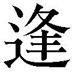う日まで」「イエスタデイ」「神田川」「若者たち」「からたち日記」「ラ・ボエーム」「マイウエイ」「歩」「エーデルワイス」「知床旅情」「青春時代」「四季の歌」「みかんの花咲く丘」「友よ」「君の誕生日」などなど。しかし正気か。モロ当時じゃないか。なんの進化もない。ところで、「好きな歌」がどうかしたのか。
佐藤秀峰『ブラックジャックによろしく』（講談社、現在四巻まで刊行中）
マンガだが、畏るべし。おやじ本ではないが、おやじが読むに値する。主人公は、頭で考えるよりも心で考えるという、今どきこんな青年がいたら是非会ってみたいと思うような純粋強烈な若き研修医なのだが、かれに負けず劣らず苛烈なのが脇役の中年おやじ医師（二人登場）。こういうおやじは現実にどこかに存在している。この純粋と現実の殴りあいがすごい。第四巻にはしびれた。
あとがき――どこまで続くぬかるみぞ
ほかのおじさんたちはどうか知らないが、わたしはもう休息したい。意識のない永遠の休息はまだいらないが、とりあえず丸々三カ月ほど。だが、そんなこといったら、「いいんだよ、このままずっと休息してもらって」といわれかねないしなあ。
で、「毎朝」七時に起きる。また一日が始まる。毎朝にカッコがついているのは「原則として」の意味である。そして、「原則」が守られないことは現実には多々あることである。信じられないことに、起きた途端にもういきなり疲れている。気鬱。それでも七時二十分には家をでる。駅に着くと、老若男女、元気満々（に見える）に続々と駅を目指している。単純に感心する。電車を待っていると、遠くからくる電車はどれも満員で、「みんな朝早くからエライなあ」とさらに感心する。早起きのひとはそれだけで尊敬に値する（漁師さん、新聞配達のひと、市場のひと。夜討ち朝駆けの債権取立てのやくざと泥棒は除外）。
一回の乗換えをへて、一時間強の通勤時間。大した時間ではない。しかし階段を昇ると一歩ごとに動悸がする。いかにも体が重い。「救心」が必要かなとおもう。児玉清の顔が浮かんでくる（ウソだが。いまは滝田栄）。缶コーヒー一本を買って、昨日の続きの仕事をする。明日に続く仕事もする。なぜするのかもうわからない。幸いなことに（幸いだろう）仕事がある。それをできる体力がまだある。気力も、点滅しながらかろうじて残っている。だからやっている。それだけのことのように思える。「生活」のためだろ、といわれればそうである。「会社」のため、「自分」のため、ひいては「社会」のため、といえばそういう名目もたたないわけではない。だが、どこか実感にそぐわない。
失職すれば、たしかに「生活」に困る。けれどこれは、人間、食わなきゃ死ぬ、というのとおなじではないか。正しいが、それが正しさのすべてではない。寿司やラーメンや焼飯や牛丼やハンバーガーや天丼や餃子やカレーやオムライスやスパゲッティ（昼飯ね）を、わたしは生きるために食べているのではない。第一には、腹がへるからである。第二には、ただ食べたいから、である。「仕事論」は数多あるが、「仕事」の意味は年齢とともに変わってくる。いま現在、わたしにとってもっとも単純で納得できる意味は、「みんなやっているから」であり、「ここに仕事があるから」である。
ほんとうに「やるべき仕事」なんかあるのか。「べき」とはなんであり、なんのための「べき」か、などと小難しいことを考えるのは若いときの作業である。仕事を相対化し、自分をも相対化している中年ともなると、仕事論もへったくれもない。「仕事」はそんな問いのなかにはない。むろん、どんな「ため」であってもいいし、どんな「べき」であってもかまわない。それでもとにかく、ここに「仕事」がある。だからやっている。
三十年間やってきた。よくも何十年も仕事が途切れることなくあるものだと心底呆れるが、まだ終わらない。辞めることもできない。だけど、たかが三十年間ではないか。世のなかには八十、九十歳になっても精力的に仕事をしているひとがいるではないか。もちろん知っている。けれども、だから「がんばろう」とは思わない。かれはかれであり、わたしはわたしである。仕事があり、そのための体力と気力があれば、わたしだって百歳になってもできるさ。そう、かれらはやっているのではない。できているのだ。
だからといって、「もうがんばらない」とも思わない。全然「がんばらない」で生きていけるようには、この世はまだなっていないからである（たぶん、永遠に）。ほんとうの気分をいえば、もうあんまりがんばりたくはない。けれど、がんばらざるをえない。もしくは、気がついてみるとがんばっている。なぜかを考えてもしかたない。あともう少しである。だが、その「あともう少し」はどこまでの「少し」なのか。
どこまで続くぬかるみぞ。しかり。ぬかるみ、である。もう、子どものときからぬかるんでいたぞ。このぬかるみのなかを五十数年間歩いてきた。途中には、平坦で快適な道もなかったわけではない。けれど歳をとるにつれて、やたらぬかるみ度が増してきたような気がする。そこから、まだまだ一歩一歩足を抜いていかなければならないのである。まさか、その中に立ち尽くしたままでいるわけにもいかないではないか。
そのぬかるみの中にあって、心の中で、自分で自分という独楽を回し続けてきた。回転していることはとりあえず前進であり、静止することは停滞なのだ、というように。大した喩えでもないが、しかし、人生とはおおよそそういうことではないのか。ただ中年ともなれば、その糸もすりきれかかっている。糸とは、いうまでもないが、仕事であり趣味であり様々な欲望である。向上心であり知識欲であり希望である。安寧であり静謐であり隠遁でもある。なかんずく、愛情である。使い慣れた糸でそのままいくか、それとも新しい糸にとりかえるかに鉄則はない。ひとそれぞれである。
どうやら最後は、ぬかるみのなかにつっぷしてしまいそうである。というより、そういうことは自分にとって十分ありうることだと考えている。悲壮感ではない。厭世でもない。それが「人間の現実」というものである。それでも、そうなるまでは、自分という独楽を性懲りもなく回し続けるにちがいない。それが業ともいうべき「自分の現実」だからである。もっとも、どんな糸になるのか、またどんな回り方をするのかは知らないが。では、その独楽が動きを止めてコトッと倒れたときが最期か。いやいや、そんなことはないのである。倒れた独楽なら、もう一回糸を巻きなおして回せばいいだけの話である。もしも糸さえあるのなら、そして、その糸を振り投げる余力がまだあるのなら、たぶんもう少しくらいは回るのではないか。こんなことをぼんやりと考えている。
本書の企画を立ててくれたのはＰＨＰ研究所新書出版部の三島邦弘さんである。記して感謝申し上げる。がしかし、まだ青年といっていい三島さんに、この悲しくも嬉しくもない「おやじの真実」、わっかるかなあ。
勢古浩爾
二〇〇三年二月 わかんねえだろうなあ、と思う冬の一日。
勢古浩爾［せこ・こうじ］
１９４７年大分県生まれ。明治大学政治経済学部卒業。現在、洋書輸入会社に勤務。１９８８年、第７回毎日21世紀賞受賞。「ふつうの人」の立脚点から「自分」が生きていくということの意味を問い、独自の思考を展開し続けている。
著書に『中島みゆき・あらかじめ喪われた愛』（宝島社）、『自分をつくるための読書術』『こういう男になりたい』（以上、ちくま新書）、『わたしを認めよ！』『まれに見るバカ』『ぶざまな人生』（以上、洋泉社・新書ｙ）、『自分様と馬の骨』（三五館）、『「自分の力」を信じる思想』（ＰＨＰ新書）がある。
おやじ論
著 者：勢古浩爾
 Seko Koji
Seko Koji
この電子書籍は『おやじ論』二〇〇三年三月二十八日第一版第一刷発行を底本としています。
電子書籍版
発行者：安藤卓
発行所：株式会社ＰＨＰ研究所
本書の無断複写（コピー）は著作権法上での例外を除き、禁じられています。